A family biography
Dora Ella Newnam Stone
A documented life, 1871–1926
How to read this book
This is not a family-tree sketch dressed up as a life. It is a biography written only from records that have been seen, transcribed, or honestly marked as prior-session images. Every factual claim carries a numbered endnote. Endnotes name the creator of the record, where it lives, whether the image or only a transcription was read, and a link when one exists.
Confidence is printed in the open:
Proven two or more independent identifiers, no unresolved contradiction.
Probable the weight of evidence favors it; a missing original or an open conflict remains.
Possible a serious lead that has not passed the same-person test.
Speculative family lore, unsourced trees, or compiled lineage not re-proved here.
Disproved a record that cannot stand against earlier, better evidence.
Preface — the question
The research question is one sentence: reconstruct, to genealogical-proof standard, the documented life of deceased Dora Ella Newnam, later Stone — parentage, marriages, children, residences, migration, death, and burial — and write a cited biography, not a thin parentage abstract.1
The identity chain is Proven as one woman. The eight-year-old in Elias Newnam’s house on 5 June 1880, the fourteen-year-old bride of 10 December 1885, the twenty-eight-year-old wife of 1900, and the Dora Stone who died at Ola on 23 August 1926 are the same person: name, parents, the nickname “Doll,” the son Coy as informant, and an age trajectory of 8 → 14 → 28 → 55.2 The only contradiction is the death certificate’s birth year, which cannot stand.3
What remains below proven is printed as such: the day of the month in August; the exact identity of Samuel’s mother; where Dora slept in April 1910 and January 1920; the license for the Stone marriage; and whether T. A. Stone is the Missouri-born tie maker in Howell Township.
The country of Three Forks
Lee County did not exist when Elias and Mary farmed at Travellers Rest. The General Assembly cut it in 1870 from Breathitt, Estill, Owsley, and Wolfe and set the seat at Beattyville, where the North, Middle, and South Forks become the Kentucky River.4 Dora’s 1870 absence from that Owsley house is therefore not a missed child in a new county. It is a child not yet born, in the parent county, on 7 June.8
The valley she grew up in was Sturgeon precinct — Magisterial District 6 on the 1900 schedule, Precinct 7 in 1910 — along Sturgeon Creek above the Three Forks.1931 The postal name Banford, which Pearl later wrote as her birthplace, was not opened until 26 May 1902. A woman born in 1895 could only use that name after the office existed.24 Kentucky did not keep statewide death certificates until 1911. Arkansas did not keep them until 1914. Those two dates explain why Samuel’s death and Dora’s 1926 certificate sit on opposite sides of a records wall.59
The 1890 population census, which would have caught Dora as an eighteen-year-old wife and mother (or not), was destroyed in the Commerce Department fire of 10 January 1921. The 1890 veterans schedule for Lee County survives in transcription and is the prior-session source for Elias’s service as a bugler.60 The photographs that follow are later views of that country, not of her. Beattyville on the river was photographed in 1930;61 the South Fork fence in 1940;62 the courthouse in a federal survey and again in 2014.63


1. A child of eight, District 59
Lee County, Kentucky, was only ten years old when the enumerator James J. Hampton walked District 59 in the first week of June 1880. The county had been cut in 1870 from Breathitt, Estill, Owsley, and Wolfe around the Three Forks of the Kentucky River.4 On 5 June, at dwelling 46, he listed a farmer, Elias Newnam, 38, and his wife Mary, 38, both Kentucky-born, with six children still at home: William, 21, at the plough; Malissa, 16; Francis, 14; Mary, 10; Dora, 8; and Catharine, 6.5
That single line — Dora, daughter, 8, Kentucky — is the childhood record. The surname on the page is Newnam, not Newman. The given name is clear. The age is a single digit, not 3 or 5.5 A Soundex clerk later extracted the same household onto two cards, N-550, volume 18, enumeration district 59, sheet 6, line 11. The continuation card reads: “Newnam, Dora D 8 Kentucky” and “Catharine D 6 Kentucky.”6

10thcensus0427unit frame n730. Image seen. Endnote 5.
soundex1880ky055 frame n2105. Image seen. Endnote 6.
A child aged eight on 1 June 1880 was born between June 1871 and June 1872. The 1900 schedule would later give August 1871. The 1885 marriage return would call her fourteen. Those three records agree.7 The 1926 death certificate, filled by a son fifty-five years later, writes 11 August 1868 and age 58 years 12 days. That year is Disproved. A child born in August 1868 would have been eleven in June 1880, not eight.3 The day, the 11th, is Possible — only the certificate supplies a day, and nothing contradicts it.
On 7 June 1870 Elias and Mary were still farming at Travellers Rest in Owsley County with William D., 11; Malissa D., 6; Frances, 3; and Mary, 1. There is no Dora. She had not been born.8 That absence independently kills 1868.
The parents on the 1880 schedule are the couple her death certificate would name: Elias Newnam and Mary Smallwood. Probable — the certificate is secondary for parentage; the child is in their house; the 1885 wedding was “at Doll Newnam’s.”9 Neighbors on the same page were also Newnams — Joseph, 38, next door, and John, 60, the household after — the interlocking clan of Sturgeon Creek.5
Elias, known as Doll, is recorded in a prior session as bugler of Company C, 14th Kentucky Cavalry, 16 August 1862 to 16 September 1863. Mary Ann Smallwood, born April 1842, was a Smallwood of the Owsley line. Those military and cemetery facts were gathered earlier and were not re-imaged for this book; they are cited as prior-session claims, not as pages read today.10
A compiled Boone descent — Daniel Boone → Levina (Scholl) → Leah (Newnam) → Henry Harrison → Elias → Dora — appears on WikiTree and on a Kentucky Landmark marker at the Newnam Cemetery in Pebworth. It is Speculative in this case. The steps beyond what this file cites have not been independently re-proved here and are not printed as family fact.11
2. Thursday, 10 December 1885
Lee County Marriage Book 2, as transcribed by Debi Houser Kendrick, records the wedding in one packed entry:
The original page (FamilySearch film Q2QD-PZHL) has not been seen from this machine. The citation is therefore a derivative. The fact of the marriage is still Proven: the 1900 schedule independently says they had been married fourteen years.13
Fourteen is young. Book 2 also records other brides of sixteen; the record is a first marriage at her father’s house with her father as witness. It does not, by itself, prove coercion.14 The clerk’s “both parents born Owsley” is a slip. Elias’s own records place his birth in Clark County on 18 April 1842. Teenage bride or busy clerk: “where we lived” for “where born.”15
Samuel was family. On the first page of the same district, dwelling 3, enumerated 1 June 1880: Samuel, 11, son of John Newnam, 69, farmer (born Kentucky, father North Carolina), and Mary, 57 (born Kentucky, both parents Kentucky), with Eli 16, Susan 20, and Hannah 9.16 Age 11 in June 1880 is the June 1869 birth of the 1900 husband and the sixteen-year-old of December 1885. Identification of that boy as the groom is Probable.

A second Samuel, about 13, on sheet 2 of the same district is Samuel McQueary, not a Newnam. He is rejected.17
Ten years earlier, on 29 June 1870, Sturgeon Precinct household 19 held Newman, John, 50, farm labourer; Elizabeth, 25, keeping house; and Samuel, 1, with eight others. Elizabeth is the right age for the widow who later took Pearl.18 The 1870 and 1880 households are not the same house with a bad enumerator. John ages 50 → 69 in ten years. The wives are Elizabeth 25 versus Mary 57. The children’s names do not carry over. Conflict #9 stays open. This book will not print “son of Elizabeth” or “son of Mary” as fact.

populationschedu0481unit frame n69. Image seen. Endnote 18. Not silently merged with Plate 3.3. Seven children, five living
They stayed in Sturgeon precinct. The original 1900 population schedule — read for this book from NARA T623 reel 537, Lee County ED 52, sheet 4B — was enumerated on 5 June 1900 by Morgan J. Treadway. At dwelling 67, family 67:19
| Name | Relation | Born | Age | Notes |
|---|---|---|---|---|
| Newnam, Samuel | Head | June 1869 | 30 | Married 14 years; farmer; KY/KY/KY |
| Dora E. | Wife | August 1871 | 28 | Married 14 years; 7 children born, 5 living |
| McCoy | Son | April 1890 | 10 | Farm laborer |
| Mary M. | Daughter | June 1892 | 7 | |
| Pearl | Daughter | March 1895 | 5 | |
| Rissa | Daughter | May 1897 | 3 | |
| John H. | Son | August 1899 | 9/12 |
The Kendrick transcription of the same precinct agrees on the household and adds the neighbors: James P. Gillespie at 66, Huram Smith at 68.20 The original upgrades that transcription from the only source to a check.

12thcensusofpopu537unit page 940. Image seen this session. Endnote 19.Two of seven children had died by 1 June 1900 (2/7). That is 286 per 1,000 of her births. The Wilson 95 percent interval is 82–641 per 1,000 because n = 7. This is not a county infant-mortality rate and must not be compared to a state rate without a defined cohort of all Sturgeon births, 1886–1900.21 Their names are unknown. The gap between the wedding and Coy’s birth leaves room for at least one of them.
Two daughters later named their parents on Social Security applications (NUMIDENT files read in a prior session, not re-opened here). Mary Magdalene (Newnam) Bunch: born 12 June 1893, Beattyville; parents Sam P. and Dora Newnam.22 Pearl P. Jackson: born 15 March 1895, Banford; parents Sam and Dora; died Shelby County, Tennessee, 19 September 1980.23 The 1900 year for Mary (June 1892) and the NUMIDENT year (1893) disagree by one; both are printed. Banford as a post office opened on Sturgeon Creek on 26 May 1902 — after Pearl’s birth — so the application uses the postal name the valley later carried.24
Two days before the 1900 enumerator reached Samuel’s house, a Newnam funeral had already been held in the precinct. John Newnam, 37, married farmer, died of consumption on 5 March 1900, son of John and E. He is not Samuel — Samuel was alive on 1 June — but he is the only Newnam in Lee County’s surviving 1900–1904 vital-statistics death dump.25
4. The lost decade
Samuel disappears from free records after that June. WikiTree’s 24 February 1906 is unsourced lore. Speculative as a date.26 What is not lore: by April 1910 Pearl, fifteen, was in Owsley County in the house of her widowed paternal grandmother Elizabeth, with her widowed aunt Susan Angle. Dora is not in that house.27 A grandmother does not take in a granddaughter whose father is alive and farming next door — inference, not a record. Death before April 1910 is Probable.
He was not a Kentucky Newman household head that April. The statewide 1910 Miracode N-550 S-names run Sam of Knox, Samuel of Newport, a Black Samuel Noonan, a Louisville Samuel, Samuel C of Butler, and Samuel E, 41, of Muhlenberg with wife Lou E — wrong wife, wrong children, wrong county.28 He is not in Lee County’s 1911–1929 death index, not in the year-by-year certificate extracts 1912–1929, not in the surviving vital-statistics dumps for 1874–1878 or 1900–1904, not on the Proctor Cemetery transcript, not on the 2001 High View / Newman Cemetery transcript, and not in the Booneville Baptist association obituaries for 1883–1904.29 The next Kentucky gap is not a missing Lee book. The state archives inventory lists Lee deaths for 1874–1878, 1900–1904, and 1911–1967 — not 1905–1910.72 Owsley’s surviving 1907–1910 vital-statistics dumps have been read in full. Samuel P. is not in them. The only Newnam is Lester, thirteen months old, who died at Pebworth on 15 April 1909; his parents were Robert and Sallie Newnam. That infant is not Samuel.71 A 1904 Lee license for an S. P. Newnam, 30, second marriage, to Rosa L. Banks is not merged: the age is wrong for a man born in 1869.30
Dora herself is not in Sturgeon in April 1910 under Newnam or Newman. The original 1910 schedules for Sturgeon Magisterial District 7, ED 99 — every sheet, 1A through 13B — contain other Newnam households (Richard and Sarah; Reuben and Nannie; John and Ollie; a different John H. with a grown son Malcum). None of them is Samuel, Dora, Coy, or the 1899 child.31 The 1900 dwelling number 67 was reoccupied: Hamilton on sheet 4A, Garrett on sheet 6B.32 Her parents, Elias (“Elisa”) and Mary (Smallwood) Newnam, were a couple alone at Proctor, ED 100, dwelling 19/20. She is not in their line.33


Statewide Soundex negatives close the easy escapes. In April 1910 she is not indexed as Newman/Newnam Dora of the right age in Kentucky, Arkansas, Missouri, Oklahoma, or Texas; Coy is not a McCoy or Coy card in Kentucky, Arkansas, Missouri, or Tennessee; she is not a Kentucky Dora Stone (two other Dora Stones fail race or age); she is not a Kentucky or Arkansas Peebles/Peeples wife or head named Dora ~39.34 Lee County marriage books 5–19 (1896–1926) contain no Peebles surname and no Dora Newnam remarriage.35
A third married name (hypothesis H3) is still open for surnames other than Peebles. Soundex indexes heads and some individually carded persons. A wife Dora in a Johnson household would not appear in the Dora Newman slots. Negatives are for the indexed name, not for “she was not in the state.”
Two marriages, not three: Samuel in 1885 Proven; T. A. Stone in 1920–26 Probable. A Peebles union between them is not supported by the records searched.36
The family’s Arkansas anchor is her eldest son. On 18 February 1917 McCoy Newnam married Letha Viola Sullivan at Ola, Yell County.37
5. Arkansas and T. A. Stone
By January 1920 Coy was at Danville, Yell County, a boarder-head with wife Letha. Dora was not in his house, and she was not anywhere in Arkansas as Dora Stone or Dora Newnam on the statewide Soundex read in a prior session.38 She was not in Kentucky as Newman Dora ~48 (three other Doras — Paducah 29, Cumberland 10, Logan 28 — fail age and parents).39 Derivative OCR scans of the 1920 Soundex reels for Oklahoma, Tennessee, and Missouri found no Dora Newman; Kentucky S-350 found no Dora Stone.40 Perry County, Arkansas, marriage books F and G (1916–1930) have Peoples, not Peebles, and no license for Dora × T. A. Stone. The second marriage, if it was licensed, is more likely in Yell than in Perry.41
Her father almost certainly was still in Beattyville. The original 1920 schedule, ED 111, sheet 6A, enumerated 12 January by Harry L. Perkins, dwelling 106, family 114:42
| Name | Relation | Age | Occupation |
|---|---|---|---|
| Burke, C.B. | Head (owns free) | 40 | Postmaster, Beattyville |
| Provie | Wife | 30 | Assistant postmaster |
| Vivie M. | Daughter | 14 | |
| Vedia G. | Daughter | 10 | |
| George P. | Son | 3[?]/12 | |
| Newman, E.T. | Grand Father | 75, widowed | None |
| Combs, Bertie | Boarder | 32 | Clerk, railroad office |
| Miller, Warren C. | Boarder | 23 | Superintendent; born Pennsylvania |
E.T. Newman, 75, is Probable Elias T. “Doll” Newnam. Initials, Lee/Beattyville, age within two years of a man born 18 April 1842, and — independently — he is the grandfather of Provie, not of C.B. In 1900 Provy Hoover, 13, was Elias’s granddaughter at Proctor. On 28 September 1904 the marriage book remarks, “E. T. Newnam Granfather appeared,” at Chas. B. Burke × Provie Hoover. Charles B. is the son of George Burke. The enumerator wrote Grand Father for the wife’s grandfather.43 Provie is Probable the child of Mary L. Newnam (Elias’s 1880 daughter Mary) and James Hoover, married 10 February 1886. She is not Dora.44 The Soundex card’s “Grand Ave.” is not written beside this dwelling on the original sheet.

14thcensusofpopu586unit PDF page 14. Image seen (inverted from the film). Endnote 42.
Tom A. Stone, 62, widowed, born Missouri, a tie maker, was father-in-law in Tom M. Randall’s house in Howell Township, Perry County, on 24 February 1920 — the only widowed T. A. Stone in that statewide index, read in a prior session.45 Identification of the certificate’s “T. A. Stone” with that man is Probable: same initials, a widower in the next township to Carter Cove, a 1925 burial in the yard where she would be laid. His marker, in the 1993 Daniels and Cossey copy, says 1845–1925; the census implies about 1858. Conflict #4. The 1925 Arkansas certificate is the document that will settle it.46
The closest 1900 Missouri Thomas Stone by age is a woodchopper in Buchanan Township, Douglas County: Thomas, born May 1856, age 44, married 18 years to Nancy E., with five daughters at home — Etta M., Minnie J., Martha L., Rosena, and Ossie P. The Soundex clerk misread Ossie P., daughter, as Jesse C., son.47 That household is not merged with 1920 Tom A.: no middle A., a living wife Nancy, one identifier only. The Cooper nephew is twenty-four. The Thomas A. card — February 1868, wife Matilda, daughter Gertrude M. — is Greene County Campbell Township, Volume 33, ED 37, sheet 18, line 25; not Dunklin.69 Dunklin’s village of Campbell (ED 47, sheets 1–7) has been read. He is not there.68 On the population schedule, ED 37 sheet 17A line 25 is not Thomas A.; sheet 18A line 25 is Thomas A., Matilda, Gertrude, and Ivory Jenkins, grandmother — dwelling 362, enumerated 27 June 1900.7378 That is the best name match to 1920 Tom A. and still fails the age test (32 in 1900 vs 62 in 1920). Other ED 37 spot sheets and an ED 38 sample are nil for a duplicate household.75 This book will not average 1845, 1856, and 1858 into a fake birth year.

6. Noon, Monday, 23 August 1926
Dora Stone died at noon on 23 August 1926 at Ola, Yell County, Arkansas, of apoplexy after one day, attended by Dr. Thomas W. Beal. Coy Newnam of Ola was informant. The certificate (file/cert. 1524) names her spouse T. A. Stone and her parents Elias Newnam and Mary Smallwood, gives her residence as “Mammoth, Ark.,” and sends her the next day to Carters Chapel.48 The certificate image was supplied by the user in a prior session and was not re-opened for this book. There is no Mammoth post office in Yell or Perry; Nimrod is the Perry-side office. The handwriting hypothesis is untested against the image. This book does not “correct” the place.49
Daniels and Cossey, copying Carter Cove Cemetery on 5 February 1993, found “Newman, Dora” without dates — the name of the husband of her youth, and of the son who buried her — and “Stone, Thomas, 1845–1925.”50 Find A Grave returned HTTP 403 from this environment. No photograph of either stone is in the case file.
She was fifty-five if she was the eight-year-old of District 59. The certificate called her fifty-eight. The child on sheet 6 is the better witness to her beginning than the grieving son was to a date he never saw.51
Ola itself — once Petit Jean, renamed 10 December 1880, incorporated 1900 — was a Rock Island junction town in timber, wheat, fruit, and cotton country. The Yell County Journal (Ola, 1925–1934) is the newspaper that should have carried her obituary. It is not freely digitized. That pull remains on-site at the Arkansas State Archives or a Danville or Plainview library.52
7. After she was gone
Elias died on his birthday, 18 April 1932, at Beattyville, age 90. That death extract was read in a prior session.53 Mary Ann had already died on 11 July 1918 and lies at Brandenburg-Quillen, Heidelberg — also prior.54
William D. Newnam, the eldest of the 1880 house, married Judaliza Durbin on 19 July 1889 with Doll Newnam as a witness. A funeral notice in the Valley Morning Star of Harlingen, Texas, 3 January 1939, names him at about 80, widow Juda L., and living sisters Frankie Jones of La Grange, Mary Peters of Lexington, and Melissa Eastes of Lexington. Dora is not listed. She had been dead thirteen years. That absence is expected, not a contradiction.55
Elizabeth Newnam of Idamay, in a will dated 15 January 1922 and proved 14 May 1934, left all her property to her granddaughter Pearl Jackson and Pearl’s husband Clyde.56 That is the same Pearl who sat in Elizabeth’s Buck Creek house in 1910, and the same Pearl whose Social Security account names Sam and Dora.
Rissie (May 1897) and John H. (August 1899) remain thinly documented after 1900. A Herbert Newman born 8 August 1899 in Lee County, Virginia, to Jerome and Hattie Hughes, is a different boy.57 Knoxville Stamper/Pelfrey trails for Rissie are Possible only; this book will not close them from WikiTree. Living name-collisions were not used.
Pass 60–61. What the free film and the later paper added
Proven (negative) Every B-side of Greene County, Missouri, ED 38 — forty-one sheets — has now been read from NARA T623-855. Combined with the A-sides, ED 38 is closed. Enumeration districts 37 through 43 are name-column swept. The only Stone head in that band remains Thomas A., thirty-two, with Matilda and Gertrude, on ED 37 sheet 18A. He is still not merged with the 1920 Perry County widower.85
The compiled Yell County cemetery index, captured 30 October 2026, repeats the 1993 copyists: Newman, Dora, no dates, Carter Cove; Stone, Thomas, 1845–1925, same yard. Those rows are derivatives, not photographs of the stones.86
Internet Archive item beatty holds six Beattyville Enterprise issues only. On 30 November 1928: “Uncle Doll Newman has been very sick.” On 1 April 1932: E. T. Sparks of Hazard was visiting Uncle Doll Newnam. Elias died seventeen days later. Nickname + town + lifespan: Probable the same man as her father.87 1926 is not among those six issues, not in the UK film-year list, and not in Internet Archive’s 1926 title search.88
Lee Marriage Book 23 records the license the paper hinted at: Clay Dunigan, 23, of Idamay, married Ladona Newman, 16, of Delvinta, on 15 March 1932. Her parents are Shelby Newman and Grace Brandenburg — not Dora, who had been dead five years. Living descendants of that couple are omitted.89 Everett Newnam of Idamay, fifty, died 13 December 1939 of an accidental pistol wound — Probable the 1932 cane-planter. His daughters are living and are not named.90 Rev. Luther Newnam officiated Beattyville weddings from at least 1926 through 1933; he is not Samuel.91
Pass 62–63. Luther, Shelby, Grant, and the unread 1926 papers
Rev. Luther Newnam died at Beattyville on 28 February 1945, aged fifty-four years and seven days, born there 21 February 1891, son of William Newnam and Katherine Sternberg, husband of Cora Plummer. A death-register extract and the 1 March 1945 Enterprise agree. He is Probable the 1932 Christian Church pastor. The notice names one surviving brother, Fred of Irvine — not Everett, Frank, John, or Grant — so Luther’s father William stays unmerged from Elias’s son William.92
Shelby Newnam, twenty-one, son of Richard Newnam and Sarah Damrell, married Gracie Brandenburg, fifteen, on 4 September 1913. That couple — not Samuel P. — are the parents on Ladona’s 1932 license. Ladonna Newman Dunigan (1915–1984) and Clay Dunigan (1908–1986) lie at Dunaway Cemetery.93
On 28–29 September 1936 a coal truck left Kentucky 21 east of Berea. Edward Newnam, Everett’s son, was killed; Clifton Newman, seventeen, son of Grant of Berea, died the next day. Edward had been staying with uncle and aunt Grant Newman.94 Grant bonded to Martha Brandenburgh on 12 August 1899. Martha died 18 February 1951 with Grant living; their son William’s 11 July 1955 notice called Grant “the late.” Grant is Probable one man and not Frank the contractor of Berea (conflict #20).95
Rev. and Mrs. Robert Spicer of Lower Buffalo were living grandparents when Linda Lou Spicer died, aged three, on 3 May 1944 — Probable the same Lower Buffalo couple as Everett’s sister “Mrs. Robert Spicer.” Callie’s own death is unread.96
The 1926 week Dora died is still unread in original paper. The Yell County Journal (Ola, 1925–1934, LCCN SN90050035), the Danville Democrat (1899–1927), and the Dardanelle Post-Dispatch (LCCN SN89051008, not digitized) were living titles. Internet Archive holds none of those 1926 issues. A Chronicling America “Stone Ola Arkansas” 1926 search hits Osceola, not Yell.97
Pass 64. Melissa 1957, two Callies, two Franks, unread films
Melissa, the sixteen-year-old in Elias’s 1880 house, died 11 April 1957 as Melissa Newnam Estes Miller, ninety-three, daughter of Elias T. and Mary Ann Smallwood Newman, born 22 November 1863. The Enterprise of 18 April 1957 and the 1957 year-file agree. Funeral 14 April at Beattyville Christian Church; buried Riverview. Survivors: son Herman Estes of Brasstown, North Carolina; stepson Johnnie E. Miller; granddaughter Ruby Booth. Same-person versus 1880 Malissa: parents plus birth year. Proven as Dora’s sister. Dora is not named — she had been dead thirty-one years.98
The 1926 Callie Newnam on the Lee death extract is Everett’s wife, not his sister. She died 27 April 1926, parents Sam Moore and Mary Brandenburg. Dorothy Newnam, one year old, died 6 October 1926 at Idamay; her extract names father Everett and mother Callie Moore. Callie (Newnam) Spicer of Lower Buffalo was still living in May 1944. Conflict #21.99
A Frank Newnam died 16 March 1928 at St. Helens, born 4 October 1853, parents William Newnam and Rhoda Tincher. He is not Everett’s brother Frank the contractor of Berea, living 13 December 1939. Conflict #22. Do not merge William × Rhoda with Luther’s William × Katherine.100
On 29 May 1915 a stillborn daughter of Grant Newnam and Martha Brandenburg was recorded at Willow. The Kentucky death-index row “NEWMAN, Grant 1” (volume 026, certificate 12938, age U/1) is that infant, not Grant of Berea’s death. Grant × Martha of 1899 / 1915 / 1936 is Probable one couple; he is still not Everett’s brother (conflict #20).101 The 1951–1955 “late Grant” window is Disproved as a death date — see pass 65.102
Samuel P. still has no published will. October 1887 Lee claims are nil for Newnam. FamilySearch catalog IDs for the unread films are locked: court orders 1870–1919 = 127869; order books 1894–1922 = 964964; probate 1870–1967 = 127913; wills 1873–1945 = 127891; tax 1870–75 = 156057; tax 1879–92 = 97277; Lee WWI cards = 1146342. Kentucky Historical Society and KDLA hold matching probate and order-book film. Images not examined.103 Owsley compiled obituaries name Luther only as an officiant — no John Newnam of Owsley decedent. Lee Book 1 has no William × Katherine Sternberg.104
Pass 65. Grant 1970, Callie Spicer 1961, Kate and Fred
The statewide Kentucky death lists for 1951–1955 have no Grant Newman or Newnam decedent. Grant of Lee died 9 December 1970 in Fayette County, age ninety-three, volume 060, certificate 29556, born 10 June 1876, Social Security number 407-54-0572. The 14 July 1955 Enterprise phrase “the late Grant and Martha” is a couple-style error — only Martha was dead. Conflict #23. Name, wife Martha Brandenburg, Lee County, and the ages 23 (1899) / 42 (1920 Heidelberg household 101–106) / 93 (1970) make that Grant Proven one man. He is still not Everett’s brother (conflict #20).105
Kate Newnam died at Beattyville on 21 September 1941, born 20 February 1871, spouse W. N. Newnam, father Samuel Sternberg, mother Mahaley Robinson — Proven Luther’s mother Katherine Sternberg. A Proctor stone for William Newnam, 15 April 1867 – 10 December 1905, is Probable that W. N. Fred L. Newman died in Estill County on 14 June 1961, age sixty-six — Probable the 1945 Irvine brother and the Proctor Fred 1894–1961 beside Era.106
Callie Spicer died in Lee County on 5 November 1961, aged seventy-five years, ten months, and three days, born 2 January 1886 in Owsley County, father Daniel Newnam, mother Sarah Veneable, buried Riverview. She is Probable Everett’s sister Mrs. Robert Spicer of Lower Buffalo and Proven not the 1926 Callie Moore. Conflict #21. A Robert Spicer, eighty-three, of Lee, died in Boyle County on 11 November 1966 — Probable the same minister.107
FamilySearch probate, court-order, tax, and WWI images remain unread after nineteen free workarounds (R011). No John Newnam decedent with an Owsley residence, and no Frank Newnam decedent with a Madison residence, appears on the 1939–1989 statewide lists. Herman Estes of Brasstown is not on those Kentucky lists. The 1926 papers are still unread.108
Pass 66. Minerva’s house, John’s license, Everett’s parents
On 22 June 1900, Owsley Buck Creek household 324/326 listed a widow Minerva Newnam, born January 1850, nine children born and six living. At home: Callie, January 1885; Evert, November 1886; David F., February 1889. Daniel was already dead. That Callie is Probable the 1961 Callie Spicer. Evert is Probable Everett of Idamay — the statewide index later called him fifty-three, matching November 1886; the 1939 paper said fifty. David F. is Possible only as Frank the Berea contractor.109
Lee Book 11, 20 November 1915: John Newman, thirty-four, a widower born in Owsley, parents Dan Newman and Mininerva Venable, married Cora Brandenburg. He is Probable Everett’s 1939 brother of Owsley and the 1910 Buck Creek John, thirty-one, already nine years married to Lillie. A compiled tree that makes Florence Cora’s daughter is Disproved — Florence was eight in 1910.110
The 1910 Buck Creek page puts Everet, twenty-three and single, at household 159, next door to a different Grant, twenty-one, married to Dona. That younger Grant is Proven not the 1876 Grant of Lee. Three record forms name the mother — Minerva, Mininerva Venable, Sarah Veneable — one woman Probable if the compound is Sarah Minerva. Conflict #24. Daniel × that woman are now Probable Everett’s parents. The 1947 Sarah Newman is a Damrel. Henry H. Newnam’s living wife Minverva is a different couple. A twenty-two-year-old Daniel in Debby Brandenburg’s 1870 Beattyville house is Possible only.111
Pass 67. Daniel’s 1880 house, Lillie Isaacs, Sarah M. Evans
The 1880 Buck Creek schedule now has the house. Household 100/104 listed Daniel Newnam, twenty-nine, farmer, and Sarah M., twenty-eight, born Virginia of Tennessee parents, with Melissa, four, and John L., one. Joseph L. Venable and two Leroy Venable houses stand next door. Other 1880 Owsley precincts are negative for that couple.112
Lillie Newman died 12 January 1915, aged thirty years, seven months, and twenty-four days, born 18 May 1884, parents J. B. Isaacs and Sally Flanery — statewide volume 012, certificate 05734. She is Probable the 1910 wife. In 1916 Gracy Newnam, four, died naming John and Lillie Isaacs; an infant Willie died the same summer naming John and Cora Bradburg. Grant Newnam, nineteen, of Owsley, mother born Virginia, married Dova Cole on 10 February 1909 — Probable the 1910 Grant and Dona, Proven not the 1876 Grant of Lee.113
Sarah M. Evans died 15 September 1936 at Lower Buffalo, aged eighty-six years and eight months, born 16 January 1850 in Lee County, Virginia, spouse William Evans, father Lee Roy Veneble, mother Ratchel McQueen, volume 051, certificate 25155. She is Probable the 1880 Sarah M., the 1900 widow Minerva, the 1904 Manerva Newman, and Callie Spicer’s mother. The 1904 vital-statistics line that she was born in Owsley contradicts three censuses and the 1936 extract — conflict #25. Do not print “Sarah Minerva” as a proven dual given. A David G. Newman, seventy, of Madison, died 19 June 1958 — Possible only against David F. or Frank of Berea.114
Pass 68. John and Cora on Crane Creek, 1940
The 1880 son John L. is now Proven on the 1930 and 1940 Buck Creek pages. Household 54, Crane Creek and Duck Fork Road, lists John Newnam, sixty-three, Cora, forty-seven — married more than once, married at nineteen, three children — and a son Robert, twenty-one. The 1930 original names him John L., fifty-one, mother born Virginia, with Cora, Pencie, Robert, and Florence Combs. That is the 1910/1915 widower who married Cora Brandenburg, and the one-year-old of 1880. Owsley death extracts through 1946 have no adult John Newnam. A statewide index row for John L. Newman, eighty-eight, in Woodford County on 17 July 1966 is still Probable. Conflict #26 is open on the death date only. Do not print 1966 as a proven death.115
Melissa, four in 1880, is Possible the Malissa at Buck Creek household 290 in 1900 — wife of Chriss C. Bowman, born March 1876, mother born Virginia, stepson John Handy. The published Owsley marriage vital-statistics years skip 1879–1902. Do not print Bowman as proven. Cora P. Newnam, who died 25 February 1981, is Proven Luther’s widow, not Cora Brandenburg.116
Pass 69. 1950 Clarence, not John; Dewey rejected
The 1950 schedule for the same Owsley district — enumeration district 95-3, Magisterial District 1, enumerator Preston W. Mainous — still has a Newman household. It is Clarence and Mae, the 1940 neighbours, not John and Cora. The county name index has no Newnam. They had left that page, or the clerk missed them. John Wesley Newman, who died 6 June 1966 at sixty-nine in Virginia, is a different man from the Woodford index row of 17 July.117
The reconstructed Owsley marriage list that survived the courthouse fire names Harry H. Newnam in 1864 and a Venable bride in 1880. It does not name Daniel and Sarah. In Madison County in 1950 a Dewey Newman, twenty-six, is not David F. or Frank of Berea. Shelly Newman, fifty-seven, and Grace, fifty-one, of Richmond are Probable Shelby and Grace Brandenburg. A 1958 David G. Newman, seventy, of Madison remains Possible only.118
Pass 70. John and Cora in Woodford, 1950
They turn up in Woodford in 1950: John, seventy, and Cora, fifty-six. Woodford enumeration district 120-13, sheet 0012. The name index spelled him Juhn and her cocan. The image is John, white, male, seventy, married, born Kentucky; Cora, wife, white, female, fifty-six, married, born Kentucky. That is Probable the 1940 pair — sixty-three and forty-seven. The 1966 Woodford index row is now Probable. Do not print 1966 as a proven death. Conflict #26.119
Everett is on the Heidelberg–Beattyville road that April, forty-two, a widower, parents born Kentucky and Virginia. Grant, fifty-three, sits with Martha in another Lee district — the 1876 man. Lee County has no John-and-Cora head in 1930. They were in Owsley. Pass 71 reads that schedule. An Arthur Newman on Sturgeon with a son Grant, fourteen, is Henry and Mary’s line, not Daniel’s. The 1890 Owsley veterans schedule has no Newnam.120
Pass 71. John L. and McCoy on Buck Creek, 1930
Internet Archive reel T626-773 — Ohio, Owsley, Robertson, Rockcastle — puts Owsley between Ohio County’s enumeration district 92 and Robertson’s 101. Magisterial District 6, Buck Creek, is enumeration district 95-7, leaves 650 to 669. Robert H. Isaacs enumerated it in April 1930.121
Household 131 on sheet 7B is the missing 1930 house. Newman, John L., fifty-one, married first at twenty-five, born Kentucky, father Kentucky, mother Virginia, farmer. Cora, wife, thirty-six, married first at nineteen. Pencie M., twenty-three. Robert L., twelve. Combs, Florence M., daughter, twenty-six, married at twenty-two. Velma I., granddaughter, three. Those names lock the chain from 1880 through 1950. Identification of that man is now Proven. The 1966 Woodford index row is still only Probable. Conflict #26 is open on the death date, not the identity. Do not print 1966 as a proven death.
Next door at 130 is Clarence Newman, thirty-seven, with May and his mother Susie — the 1940 and 1950 neighbours. At 133, Newman, McCoy, forty, rents a farm. His wife Edith, twenty-nine, was born in Missouri. Four children follow, born in Arkansas and Tennessee. McCoy, born April 1890 to Dora and Samuel, is Probable this head. Kentucky’s death index for 1931–1989 has no McCoy or Coy Newman or Newnam. The children’s names stay on the schedule. Anyone born in the 1920s may still be living and is not researched here.122
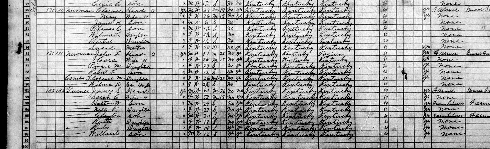
Pass 72. The 1920 Owsley reel, and McCoy after 1930
The 1920 Kentucky population reel that holds Owsley is T625-594 — Ohio, Oldham, Owen, and Owsley — on Internet Archive as 14thcensusofpopu594unit. The metadata names Owsley enumeration districts 88 through 94. The county begins at leaf 1038: Booneville Number 1, district 88, sheet 1A. Sturgeon is 89. Island Creek is 90. Cow Creek is 91. Buffalo is 92. Wilder is 94. No header yet read says Buck Creek.123
Name-column crops from those districts have no Newman, Newnam, McCoy, or Coy as a surname on the sheets examined. John L. and McCoy are not on those samples. The rest of the reel is still open. Kentucky’s 1920 Soundex N-550 John window, leaves 4460 to 4499, has no Owsley or Lee card for a John L. of about forty-one with a wife Cora. A John L., twenty-eight, of Harlan, wife Roxie, is a different man.124
McCoy is not an Owsley head in 1940. The seven published districts name John and Cora, Clarence, and Arthur with Roda — Henry and Mary’s line. A Ree McCoy, fifteen, is a Galigar son. The 1950 name index for Owsley returns no McCoy. A NUMIDENT row filed as MCCOY, NEWMAN, born 13 April 1890, Social Security number 447-20-2466, claimed at Modesto, California, on 11 July 1962, is a possible inverted spelling of Dora’s son. It is not merged. 1962 is a claim date, not a death.125
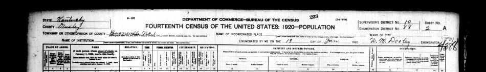
14thcensusofpopu594unit. Image seen. Endnotes 123–125.Pass 73. Buck Creek, 1920 — and John L. is not there
The missing precinct is on the reel. Leaf 1170, enumeration district 93, sheet 1A, is Buckcreek Precinct No. 6. District 94 is Wild Dog Precinct No. 7, not Wilder. The seven 1920 Owsley districts are Booneville, Sturgeon, Island Creek, Cow Creek, Buffalo, Buck Creek, and Wild Dog.126
Buck Creek in January 1920 runs households 1 through 183. There is no Newman, Newnam, McCoy, or Coy as a surname. Household 134, where John sat with Lillie in 1910, is an Isaacs house. John L. and Cora are Proven on Buck Creek in 1930 and later. They are not there in 1920. McCoy is not there either.127
Pass 74. The rest of 1920 Owsley — Arthur only
Every remaining Owsley name column is now read. There is exactly one Newman household in the county: Island Creek, district 90, sheet 7A, household 113/121 — Newman, Arthur, forty-five; Florence, thirty-three; a son Omer [?], twelve; and Grant, three and one month. That is Henry and Mary’s line, not John L.128
Cole, John L., forty-seven, on Cow Creek is not a Newman. A St. Helens John L., forty-two, is John L. Johnson. John L. and Cora are absent from every 1920 Owsley district and from every published Lee 1920 transcript. The 1918 Owsley birth index still names Newman, Robert, mother Brandenburg, Cora — Probable the Robert L. of 1930.129
Barney McCoy Newman of White County, Arkansas, is not Dora’s son. The 1942 George Combs homicide extract does not name the shooter; a later charge annotation stays Possible only. Do not print it as fact. FamilySearch films returned 403 again.130
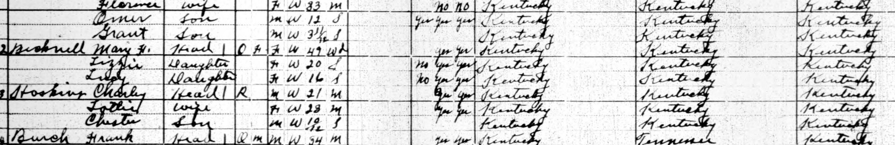
Pass 75. Estill 1920 — Station Camp first
Estill sits on T625-566 — Internet Archive 14thcensusofpopu566unit — after Clay, Clinton, and Cumberland. A title card at leaf 832 opens the county. The sheets run through leaf 1150. The districts are 36–37, 174–175, and 38–45. Station Camp, the precinct that touches Owsley, is district 44.131
Station Camp, leaves 1098 to 1130, was first read as nil. That reading is Withdrawn. Sheet 14B was missed.132
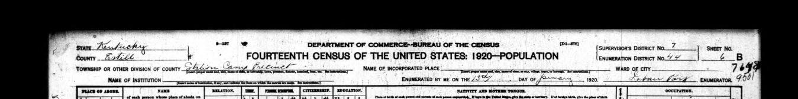
Pass 76. Station Camp corrected — Boyd and Allie
On 26 January 1920, Station Camp sheet 14B — leaf 1126 — is Newman, Boyd, forty-five, and Allie, thirty-five, with Sarah A., fifteen, Arthur, thirteen, Corlue, twelve, Clarence, ten, and younger children. The Soundex card agrees: N-550, volume 20, ED 44, sheet 14, line 7. They are not John L. and Cora.133
Irvine Precinct, ED 43 sheet 8B, holds another Newman house: a farm laborer of thirty-four, wife thirty-four, three children. Given names stay in brackets. The rest of Estill has no third Newman or McCoy head on the contact sheets. John L. and Cora are absent as a couple from 1920 Estill.134
Jackson, T625-577, volume 41, districts 17–28, opens at McKee on 2 January. Contact sheets through leaf 224 show no Newman or McCoy head at that resolution. Breathitt district 41 begins at leaf 901; those name columns are not yet fully read.135
A compiled Estill delayed-birth index names Newman, Arthur, 24 January 1906, mother Allie Brandenbur, volume 240, certificate 49665 — Probable the Soundex Arthur, thirteen. Allie is not Cora Brandenburg.136
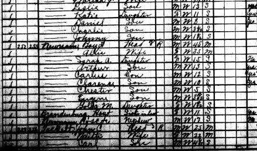
Pass 77. Powell starts at leaf 1050
Wolfe County is on T625-602. The title card is Kentucky volume 91, Wolfe districts 234–242. Powell County is on T625-596 after Pike. The county card is leaf 1050. District 142, Stanton, begins on leaf 1051. The first household’s wife Dora is not Dora Ella Newnam Stone. Clay City is at leaf 1100. Those name columns are the next walk.137
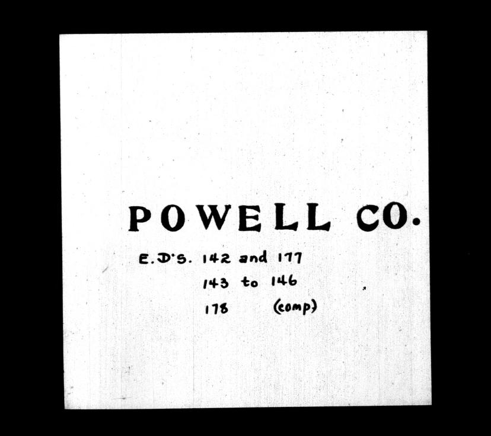
Pass 78. Powell walked; Boyd of Leighton
Powell’s name columns, leaves 1051 to 1201, were walked on contact sheets. No Newman, Newnam, or McCoy head — and no John L. with Cora — appears at that resolution.138
Wolfe starts by leaf 374, Lee City. Hazel Green is leaf 380. Whitley has begun by leaf 440. Those leaves were contact-sheeted; no Newman head was identified on the dark montages.138
Breathitt district 52 is Quicksand. Sheet 19A is leaf 1128. The Soundex line that rejected John, thirty-eight, with Jennie does not match line 17 on that sheet. The original is still not isolated.139
On 22 April 1918 a Station Camp woman died whose certificate we have as a scan: [Susananna?] Brandenburg, informant Boyd Newman, Leighton. That Boyd is Probable the 1920 Station Camp head.140
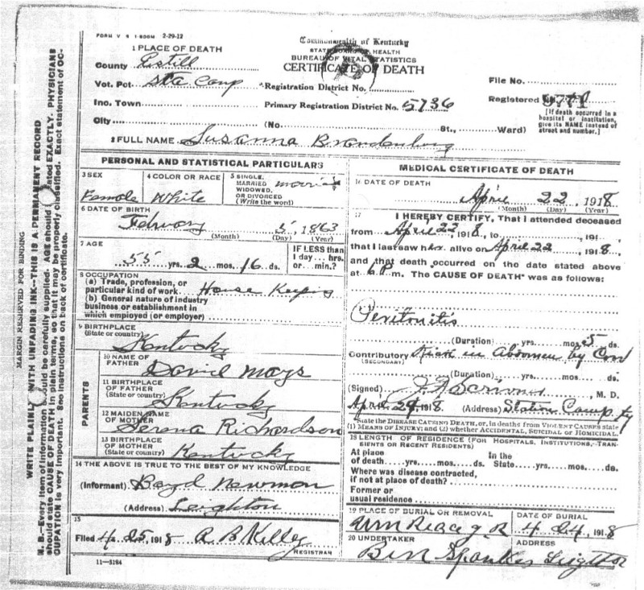
Kentucky’s death index has one Boyd Newman: age 101, Fayette, 2 December 1976. Allie B. Newman, 94, died in Fayette on 13 December 1978. Both certificates are unread. Do not print 1976 as proven death.141
Pass 79. Floyd married Allie in 1902
Lee Marriage Book 6, a compiled transcript, has the license: Floyd Newnam, twenty-three, married Allie A. Brandenburg, eighteen, on 31 July 1902, by A. J. Marcum. That row is proven as a compiled sentence. The register image is unread.142
Floyd of 1902 is Possible the 1920 Boyd — and is not merged. The wife’s name and the Lee–Estill cluster align. The given names and a four-year age gap contradict.142
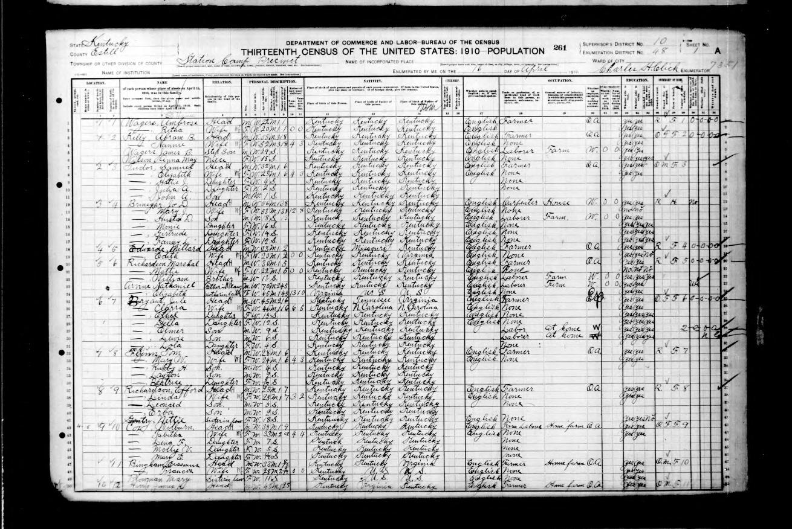
Station Camp in 1910 begins at leaf 481. Sampled sheets do not isolate Floyd or Boyd with Allie. A look-alike on sheet 4B is Pennington, John, twenty-seven.144
Breathitt leaves 840 to 1176 were contact-sheeted. District 41 starts at leaf 896, sheet 1A. No Newman or McCoy head appears at montage resolution.145
Pass 80. Boyd and Allie in Heidelberg, 1910
The 1910 Kentucky Miracode card we lacked is on Internet Archive soundex1910ky124, leaf 251. Newman, Boyd, of Lee County, volume 33, district 98, visitation 158: wife Allie, twenty-six; Sarah, six; Arthur, four; Carlos, three; Clarence, age not recorded. The card says Boyd is twenty-eight. That age is slack.146
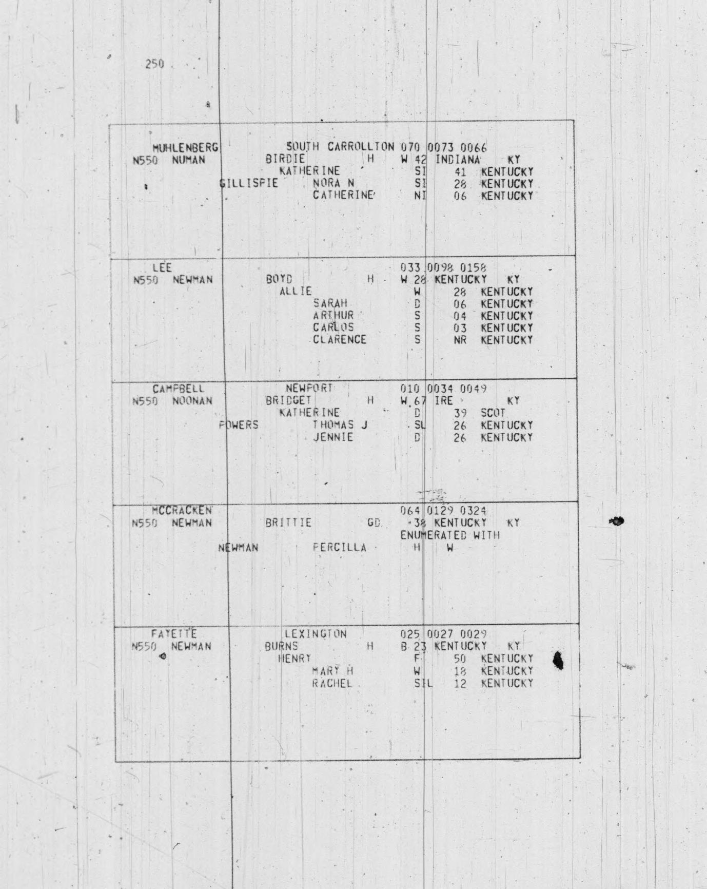
The original schedule is Heidelberg precinct, district 98, sheet 8A — leaf 536 of T624-478. Dwelling 157, family 158: Newman, Boyd, thirty-eight, married seven years; Allie, twenty-eight, four children born and four living; a daughter S[arah?], six; Arthur, four; Carlos, three; Clarence, one.147
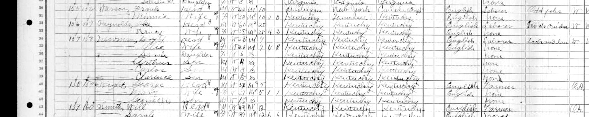
Those four children are the 1920 Station Camp children. Carlos is Corlue. Same wife, same four names, same birth order. Proven one household. They are not John L. and Cora.147
There is no Floyd Newman head on the 1910 Kentucky N-550 F-window.149
On 1 June 1900, on Sturgeon sheet 2B, Newman, Boyd, boarder, born March 1878, twenty-two, single, day laborer, lives in Allen Sams’s house — household 27, in the same precinct as compiled Allie A. Brandenburg, fourteen.148
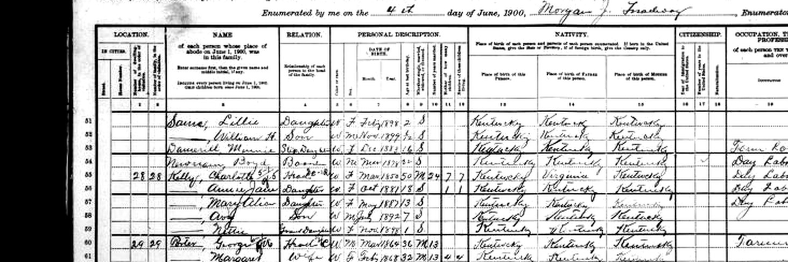
Floyd of 1902 is still not merged with this Boyd. The alignments are stronger. The contradictions remain: Floyd versus Boyd, and age twenty-three in 1902 versus thirty-eight in 1910. Possible only. Do not print Floyd as Boyd.149
Pass 81. Allie A. on the original, and the John–Jennie card
The compiled 1900 Allie A. row is now an original. Sturgeon sheet 3A, leaf 937, household 41: Brandenburgh, Oliver, June 1861, thirty-eight, married nineteen years; Susan, February 1865, thirty-five, nine children born and nine living; Allie A., daughter, November 1885, fourteen. That is Proven. She is Probable the 1902 bride. Whether she is Boyd’s 1910 wife still hangs on conflict #27.150
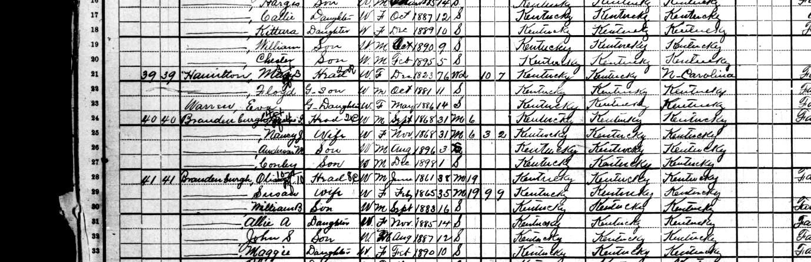
The 1920 Soundex card for John of Breathitt is now readable in full. Newman, John, thirty-eight, volume 4, district 52, sheet 19, line 17: wife Jennie, twenty-one; Virgil, three; Freda, one; Henry, fifty-two; Julie, forty-two. That card is Proven. He is not John L. of Owsley.151
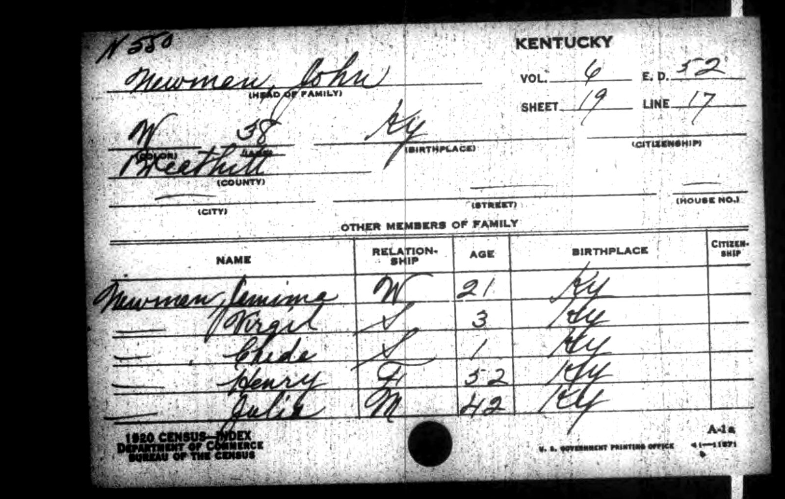
District 52 does not start where an earlier pass said. That 1116 reading is withdrawn in pass 85. The original household is on George's Branch, isolated in pass 84.152
Pass 82. District 42 sheet 19, and Rissie as a servant
Wayback holds the USGenWeb Breathitt 1920 transcripts for districts 45 through 50. No Newman head. Leaf 844 is district 42, sheet 19A — line 17 is a Bach household, not John and Jennie.154
On 15 April 1910, Heidelberg sheet 6A, Newman, Rissie, servant, fifteen, sits in the house of Edney, Sam, thirty-two, and Emma. That line is Proven. She is Possible Dora’s daughter; they are not merged.155
Pass 83. The Breathitt film map
Bell County was first read as running through leaf 788. Breathitt district 41 starts about leaf 789. Pass 86 isolates districts 39 and 40 before that junction. The later block that this pass called district 52 Quicksand is district 55 — corrected in pass 85.156
Pass 84. John and Jennie on George's Branch
Leaf 1060 is Breathitt district 52, George's Branch precinct 3, sheet 19A, 7 February 1920, A. W. Noble. Line 17, dwelling 315: Newman, John, thirty-eight; Jennie, twenty-one; Virgil, three; Fred[i?], one; Henry, father, fifty-two; Julie, mother, forty-two. That is Proven. He is not John L. of Owsley.157
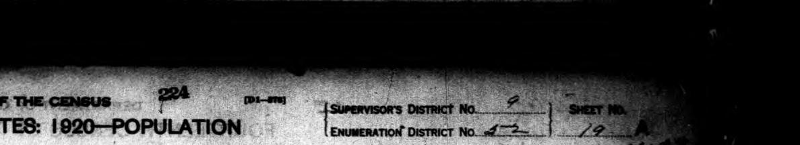
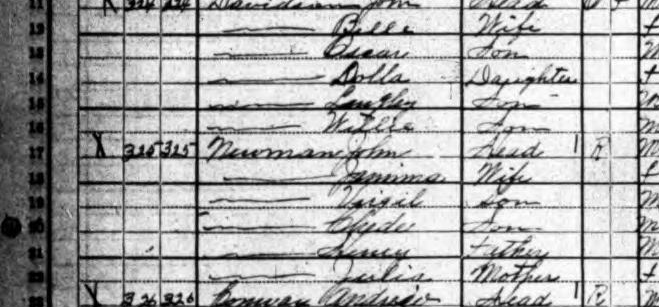
Pass 85. District 55, not 52
Leaf 1116 at 1600 pixels is Breathitt district 55, sheet 1A, supervisor’s district 11, stamp 2552. The later block is not another district 52. Precinct 1[2 or 6] may be Quicksand 16 — Possible only.158
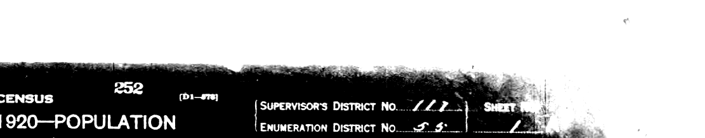
Frozen Creek starts at leaf 1010, district 51, sheet 1A. George's Branch district 52 is still on sheet 21A at leaf 1064. Powell leaf 1100 is Clay City district 143, sheet 11B — not district 144. District 146 is isolated at leaf 1170. No Newman head on those name columns. Districts 39 and 40 are isolated in pass 86.159
FamilySearch returned 403 again. Book 6’s compiled page still has Floyd and Allie A. Certificates 28501 and 31780 are unread. Do not print 1976 or 1978 as proven deaths. Do not print the 1942 Combs charge as fact.160
Pass 86. Jackson is District 39
Leaf 734 is a white card: BREATHITT CO. E.D's. 39 to 57 (pt). Two leaves earlier — and again just after the card — is sheet 1A of district 39: Precinct 1, incorporated place Jackson, 2 January 1920, Herschel L. Bach. The first household is Mrs. Mancy Back; the son in that house is the enumerator.161
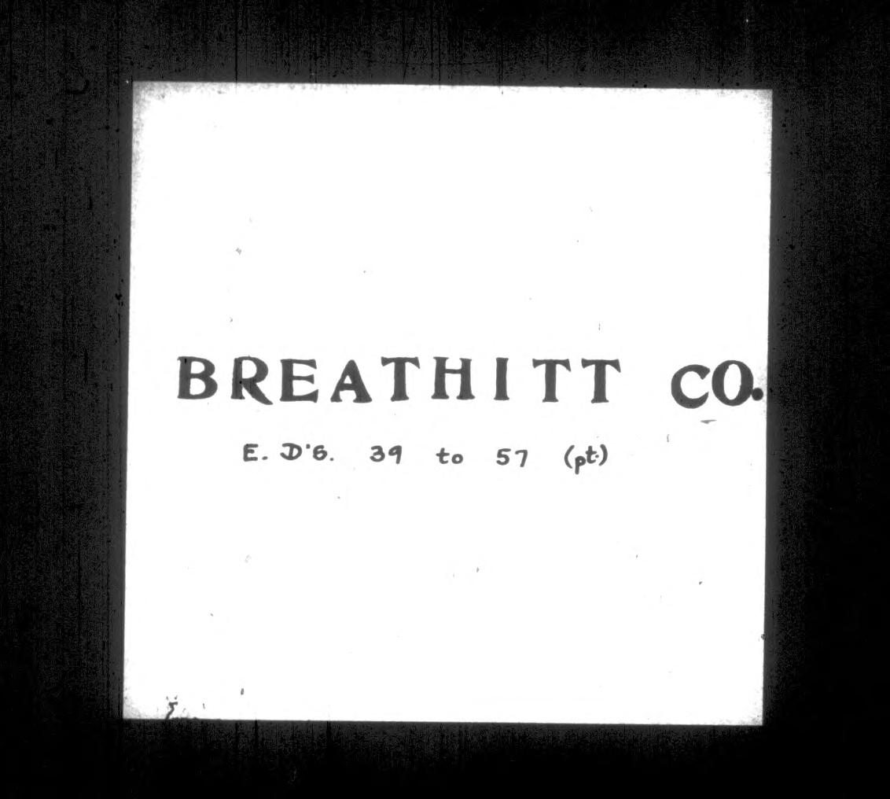
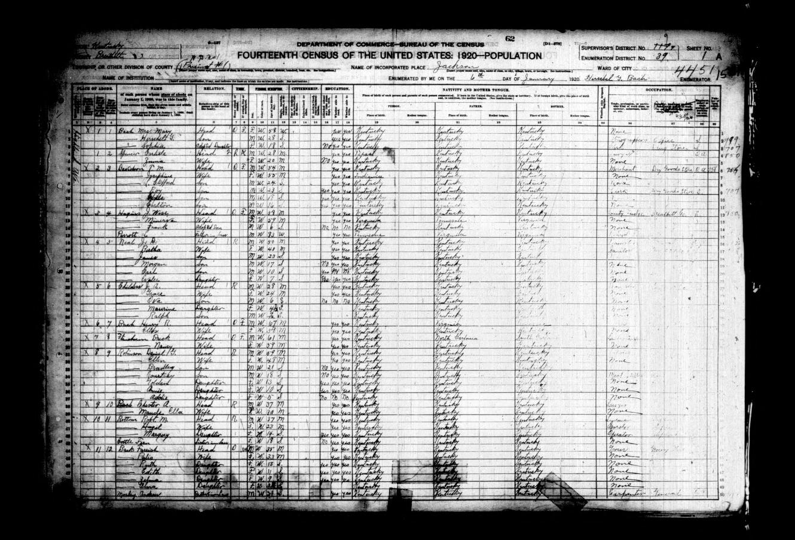
District 40 starts at leaf 769: Precinct 2, Watkins Clay. It is still precinct 2 at leaf 788 sheet 16. Then district 41. The pass-85 “Bell district 20” reading of leaf 788 is withdrawn.162
Powell district 177 sits after district 142, before Clay City 143. Leaf 1063 is Natural Bridge Precinct 2, sheet 1A, 27 January, Robert H. Conlee.163
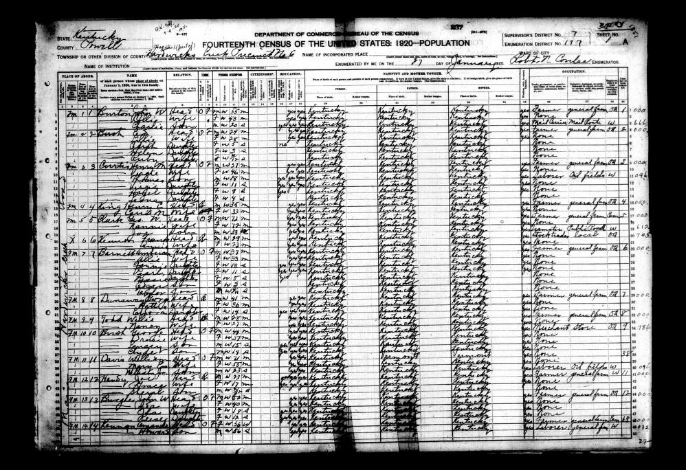
Sampled name columns on Jackson, precinct 2, and Natural Bridge do not isolate a Newman or John L. and Cora head. That is a Probable negative.164
Pass 87. District 34 is Clear Creek
Leaf 720 at 1600 pixels is Bell district 34, sheet 12A, 18 February, John Hays. The township line is Clear Creek Precinct No. 24. Precinct 24 is not the district number. The district starts at leaf 698, sheet 1A. It ends at leaf 731, sheet 17B. The next leaf is Breathitt 39.165
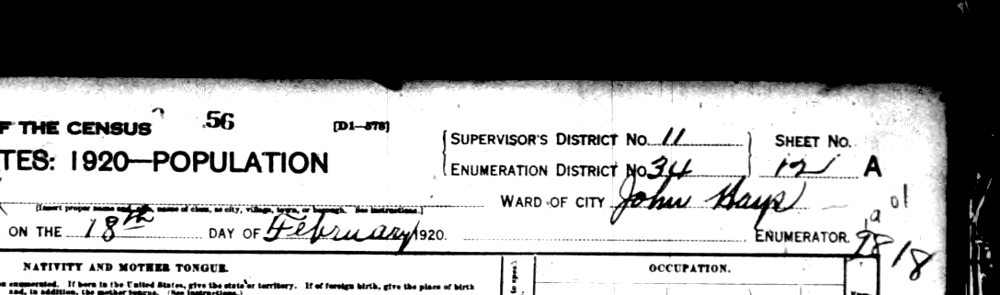
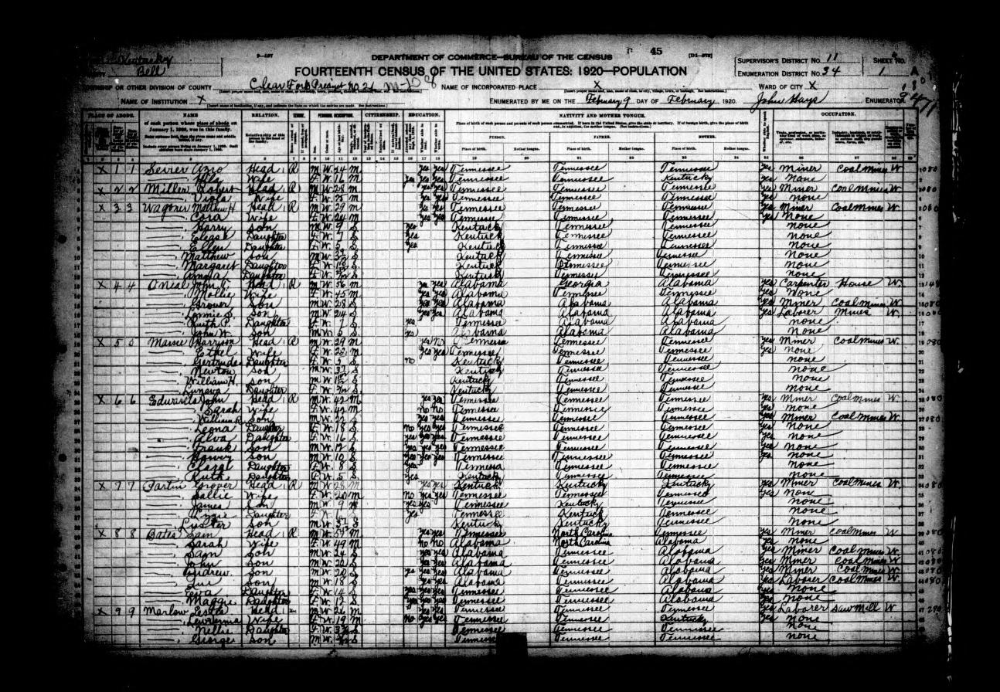
Districts 25 through 34 sit after district 24 at about leaf 450. Middlesboro is 25, 26, and 27. Ingram is 29. Suttly is 33. The claim that 25–34 were not on this stretch is withdrawn.166
Wolfe leaf 380 is Hazel Green, district 235. Leaf 410 is Campton precinct 3, district 236. The published Clifty 241 and Antioch 242 transcripts have no Newman head.167
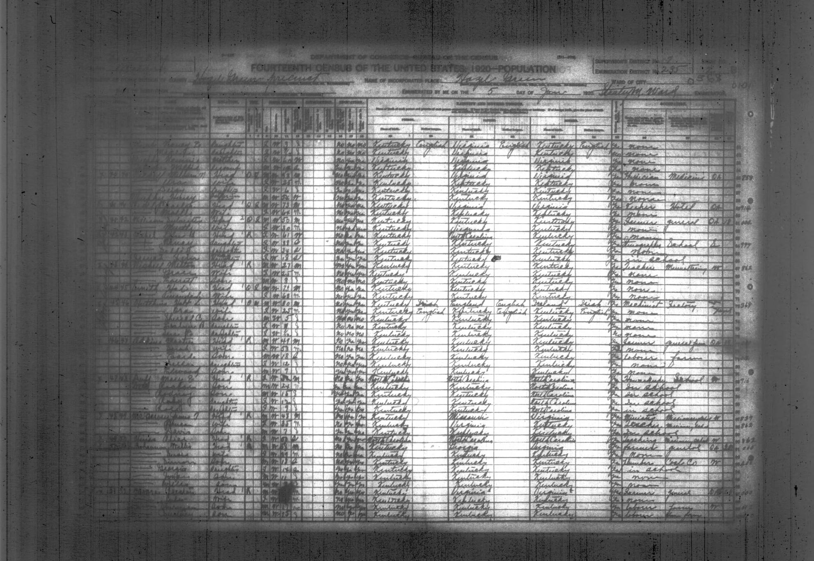
FamilySearch returned empty shells again — roadblock step 37. Book 6 still has Floyd and Allie A. Certificates 28501 and 31780 are unread. Do not print 1966 or 1976 as proven deaths. Do not print Floyd as Boyd. Do not print the 1942 Combs charge as fact.168
Pass 88. Ingram 28, Williams Branch 30, and Torrent
Districts 28 and 30 were not missing. Leaf 609 at 1600 pixels is Bell precinct 22 Ingram, district 28, sheet 1A, 8 January, W. E. Turner. Leaf 610 is sheet 2A the same day.169
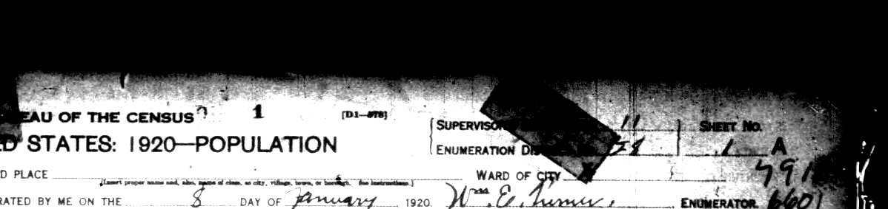
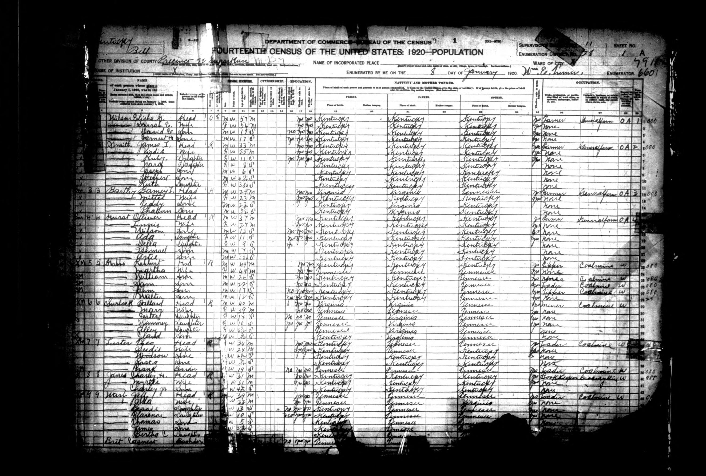
Leaf 643 is Williams Branch Precinct 24, district 30, sheet 1A, 2 February, P. W. Woolum. A Cora aged 26 is Gardner Hurst’s wife. A Dora T. aged 4 is a Denny child.170
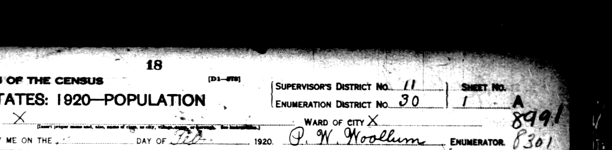
Wolfe on T625-602 is a 515-image Internet Archive scan. Torrent, district 238, starts at leaf 443 after a Whitley 277 insert. Holly 239 starts at leaf 476. Stillwater 240 is at 500 and 512. Clifty 241 starts at leaf 514. Antioch 242 is not on this scan.171
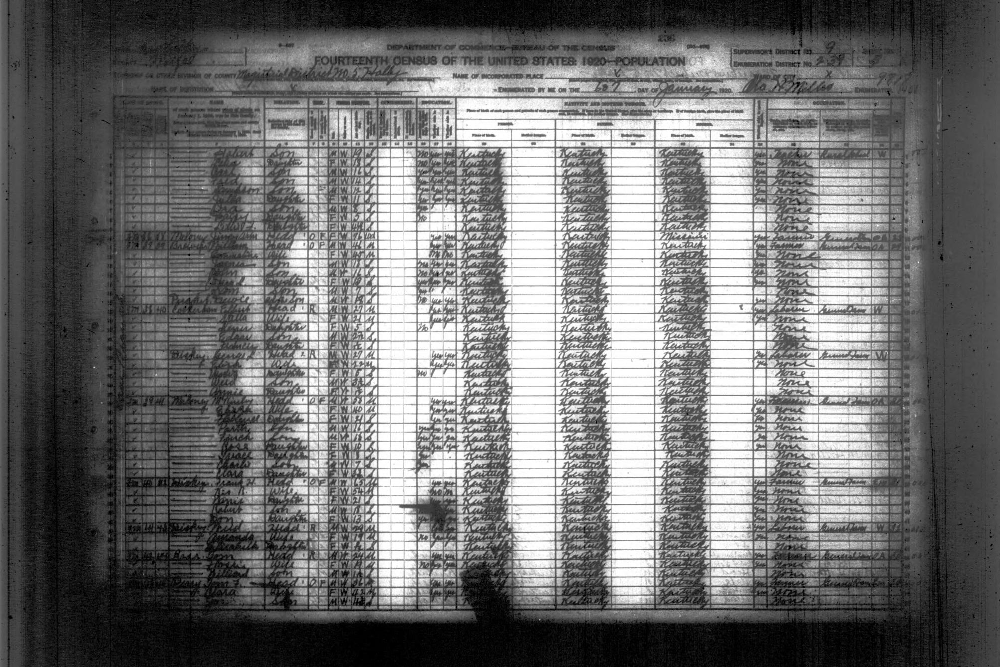
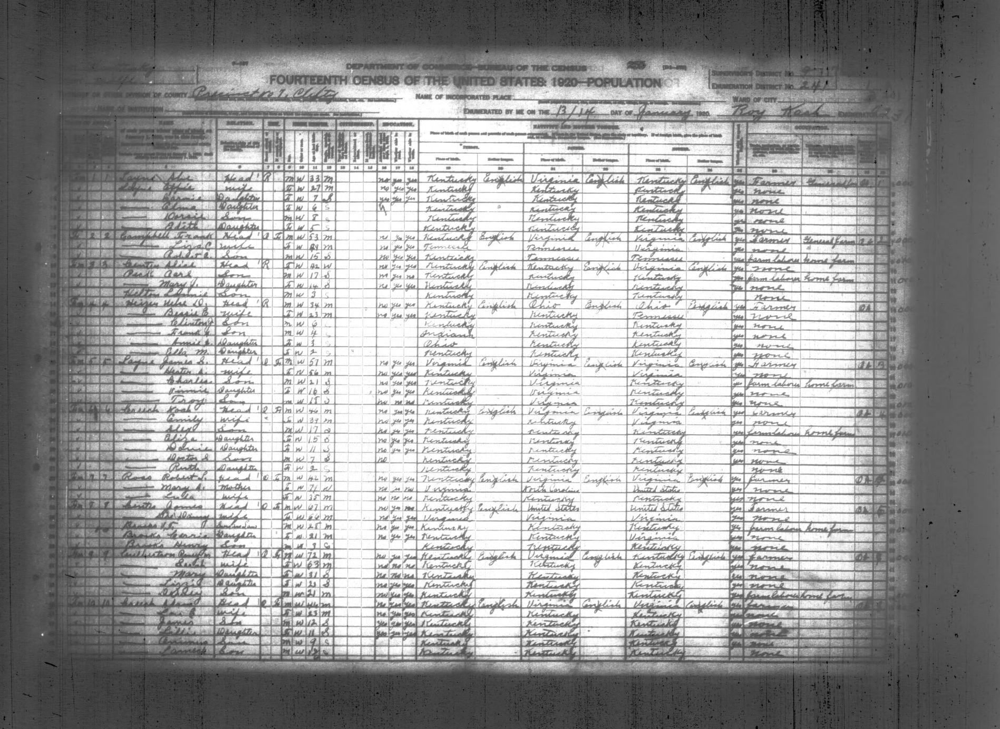
The published Torrent list of 222 households has no Newman head. FamilySearch was an empty shell again — roadblock step 38. The Courier of 8 May 1942 still names the ambush, not a shooter. Do not print 1966 or 1976 as proven deaths. Do not print Floyd as Boyd. Do not print the 1942 Combs charge as fact.172
Pass 89. Holly starts at 472, and two Bell districts close
Torrent, district 238, runs leaves 443 through 471. Leaf 471 is leftover lines, 31 January, Joel Cox — the official Torrent end on this scan.173
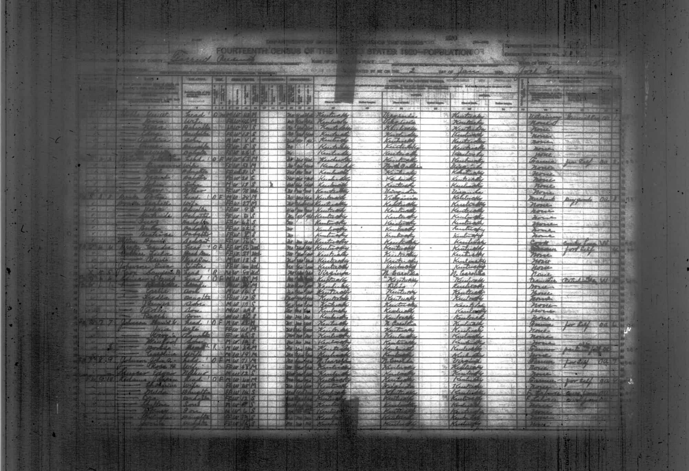
Holly does not start at leaf 476. Leaf 472 is Magisterial District No 5 Holly, district 239, 2 January, Ola H. Miller. Leaf 476 is a later sheet. The pass 88 official-start label is withdrawn.174
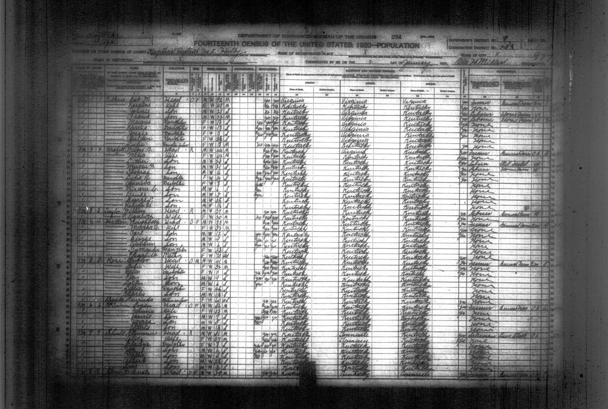
Leaf 486 ends Holly in the enumerator’s own words. Leaf 488 starts Stillwater, district 240, on 2 January. Clifty sheet 1 at leaf 514 is still the last populated Wolfe image. Antioch 242 is not on the 515-image scan.175
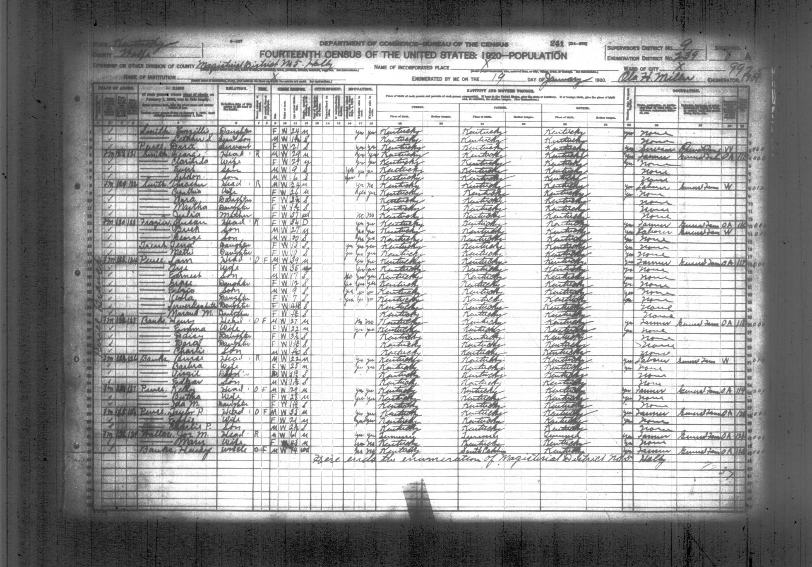
Bell district 28 is not closed at leaf 619. Leaf 621 is still district 28, sheet 7A, W. G. Innes. District 30 is complete, leaves 643–659, ending “Here ends the enumeration of Williams Branch Precinct 24.” Leaf 661 is already Dorothy, district 31. FamilySearch was an empty shell again — roadblock step 39. Do not print 1966 or 1976 as proven deaths. Do not print Floyd as Boyd. Do not print the 1942 Combs charge as fact.176
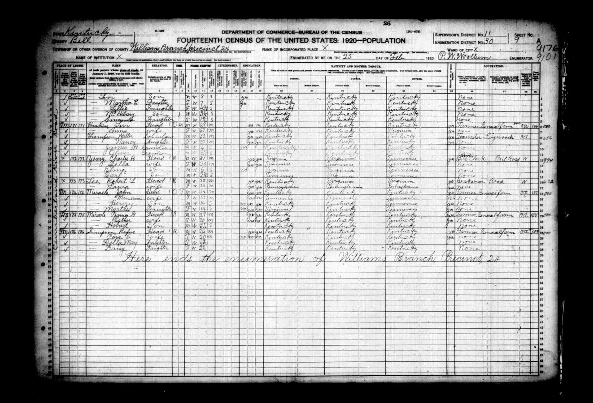
Pass 90. Ingramtown ends, Excelcia closes, and Station Camp North is empty
Leaf 620 is still Precinct 22 Ingramtown, district 28, sheet 6B, W. E. Turner. The pass 88 reading “district 29, Precinct 2 Ingram” is withdrawn. Leaf 628, 23 January, sheet 10B, is the official end: “Here ends the enumeration of Precinct 22 Ingramtown.” District 28 is complete, leaves 609–628.177
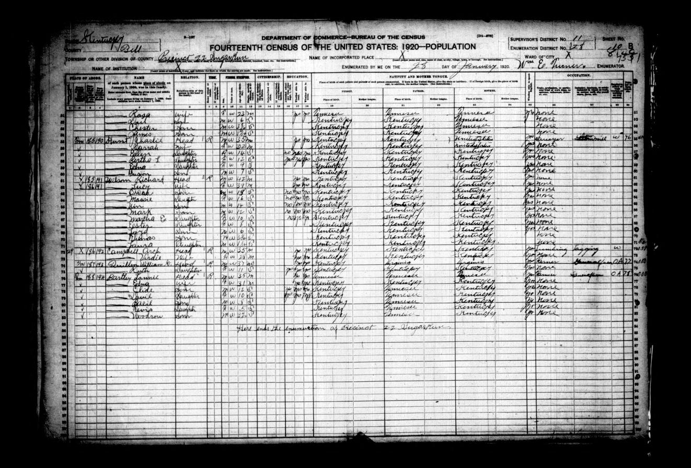
District 29 is Excelcia Precinct 23. Leaf 629, 2 January, Robert W. Barnett, is the official start. Leaf 642, 22 January, sheet 7B, ends it. A Cora, forty-one, on that last sheet is not Cora Brandenburg Newman.178
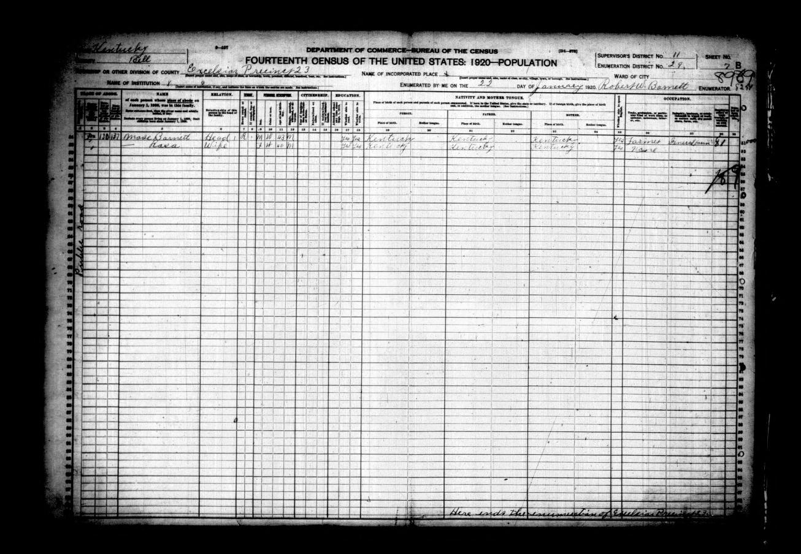
District 25 is Middlesboro Precinct 19, leaves 471–515, official start and official end. Leaf 518 is already South Side, district 26. A machine pass over 282 Bell sheets found no Newman token. Remaining visual name lines are districts 26, 27, and 31–34.179
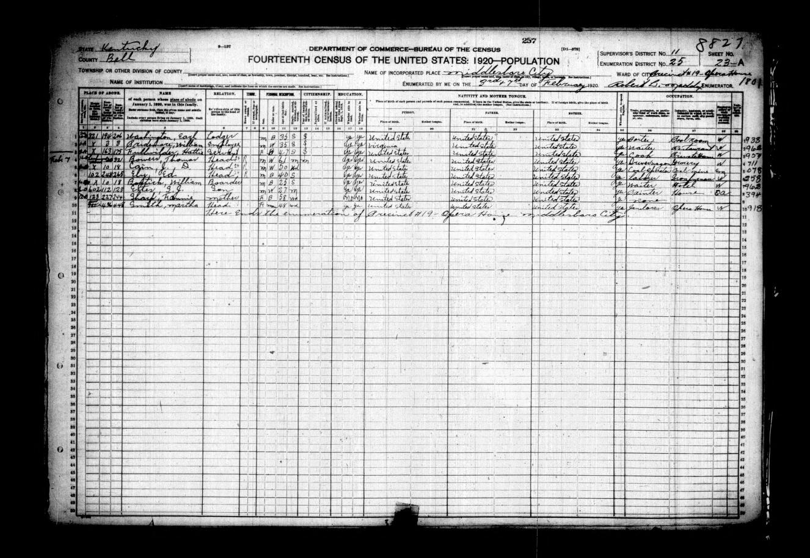
Antioch 242 and the rest of Clifty are still not on a free Internet Archive scan. FamilySearch was an empty shell again — roadblock step 40. The published Clifty and Antioch lists are the same negative.180
Station Camp North, 1930 district 33-7, is complete on reel 742, leaves 793–819. Boyd and Allie are not there. District 33-8 is not in the 750–900 band.181
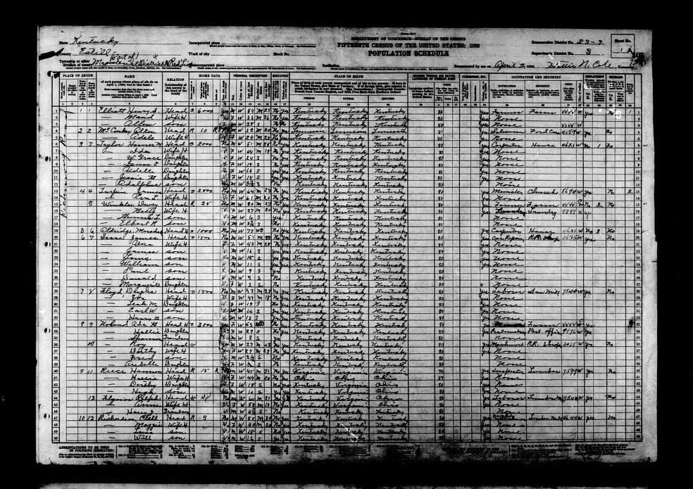
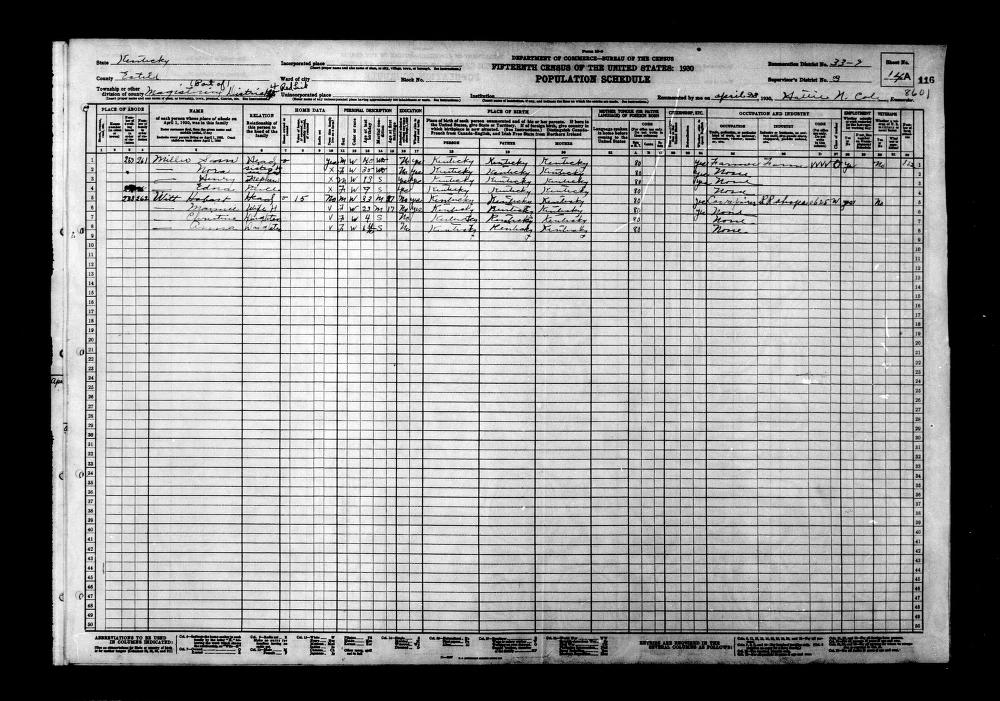
The Lee wills directory still names only Elizabeth Newnam and Mary F. Newnam Tincher. The clerk path is Tyler Phillips, 606-464-8400. Genealogy Trails’ letter N table is unpublished. A Rissie Dishman Beaty of Overton County is the wrong woman. Do not print 1966 or 1976 as proven deaths. Do not print Floyd as Boyd. Do not print the 1942 Combs charge as fact.182
Pass 91. Station Camp South is missing, and every Bell district closes
Leaf 821 is Red Lick East, district 33-10, sheet 1A, stamped 117. Leaf 820 is unused. Stamped pages jump from 094A to 117A. Districts 33-8 and 33-9 are absent from this Internet Archive scan of reel 742. Estill ends at leaf 947 on the Grant County card.183
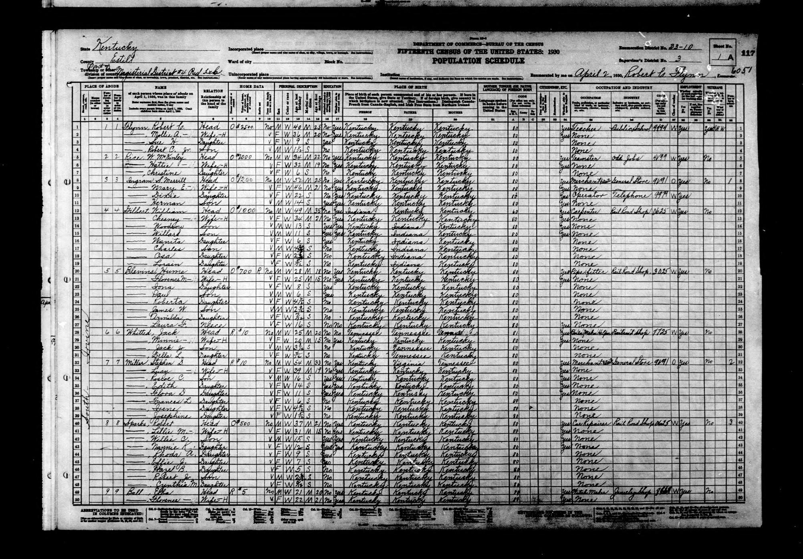
The unread 650–749 band is not 33-8. Leaf 650 is Irvine South. Leaf 746 is Millers Creek West. Leaf 747 starts Millers Creek East. After 900 the reel finishes Forks West and Forks East.184
Bell districts 26, 27, 31, 32, and 33 now have official starts and official ends. Districts 25 through 34 are all complete on T625-559. Combined with the 282-sheet machine pass, that is a probable entire-Bell name negative. Antioch 242 is still not on a free scan.185
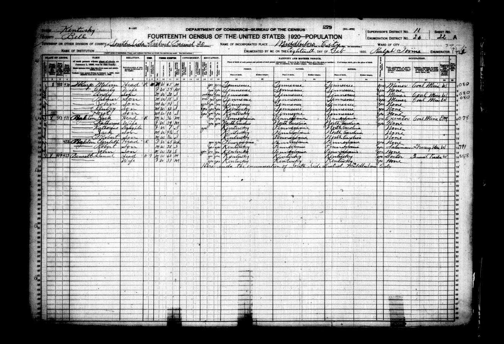
Madison’s 1920 reel is mapped. Berea Town precinct 16, district 103, is isolated. Sampled name columns have no Frank Newnam head. Residual town lines closed in the next pass.186
Do not print 1966 or 1976 as proven deaths. Do not print Floyd as Boyd. Do not print the 1942 Combs charge as fact.
Pass 92. Berea Town in 1920, and the 1930 Madison reel
Leaf 316 is unused. Leaf 317, 2 January 1920, Henry C. Combs, is Precinct 16 Berea Town, district 103, sheet 1A — the official start. Clark, Toleson, Reed. No Newman.187
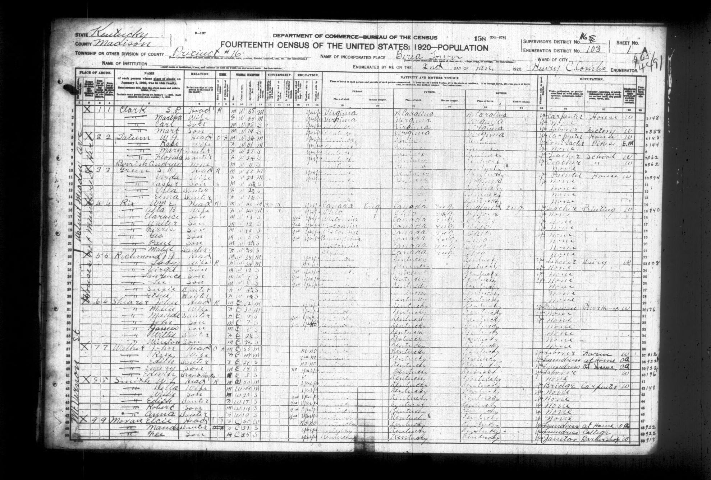
Leaf 348, 17 January, sheet 16B, is a short last town sheet. The enumerator wrote “None.” District 103 town is complete, leaves 317–348. A machine pass over thirty-nine sheets found no Newman token. One OCR “Frank” on leaf 324 is a false hit.188
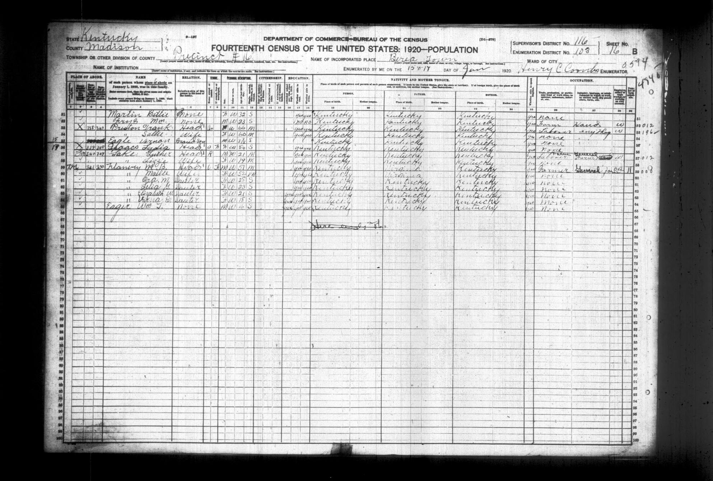
Leaves 349–350 are the Berea College Academy & Workers institution sheets. Leaf 351 is already Glade Creek, district 104. The 1950 Madison name API has no Newnam and no Frank contractor among thirteen Newman sheets.189
The 1930 Madison reel is live — T626-769, 1,137 images, districts 76-1 through 76-24 on the card. The published list puts Berea Town at 76-16. Those sheets were the next pass.190
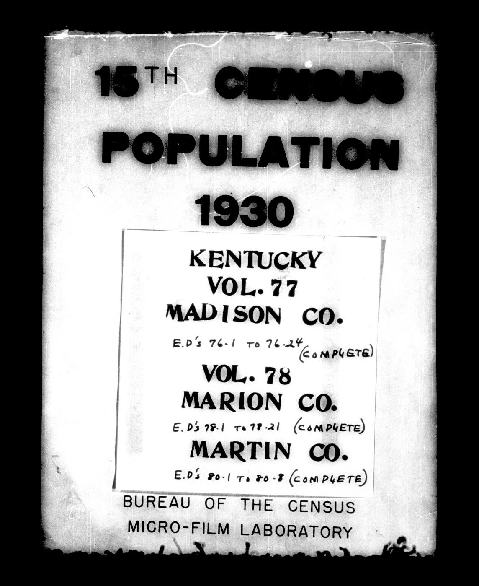
Do not print 1966 or 1976 as proven deaths. Do not print Floyd as Boyd. Do not print the 1942 Combs charge as fact.
Pass 93. Berea Town in 1930, and Glade North
The published list puts Berea Town at district 76-16. Leaf 338 is still Yates. Leaf 339 is unused. Leaf 340, 2 April, J. A. Baker, is incorporated Berea, sheet 1A — the official start. No Newman on the first dwellings.191
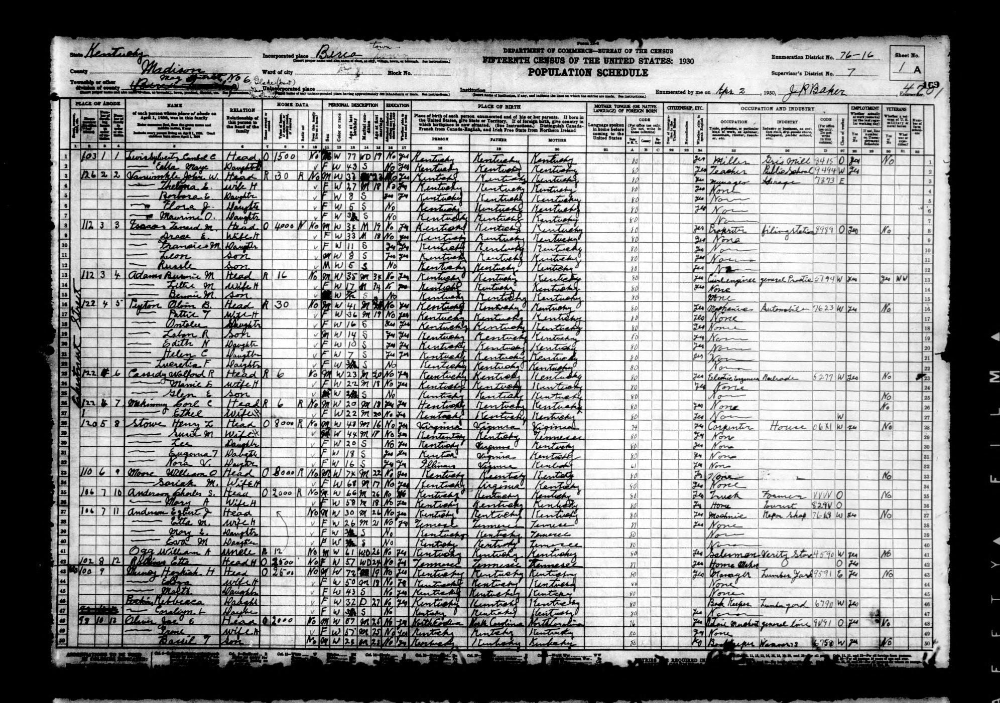
Leaf 376, 24 April, is the college sheet 19A — the last populated 76-16 sheet. Leaf 377 is unused. District 76-16 is complete. A machine pass over forty-four sheets found no Newman, Frank, or Grant token. That is a probable entire-district name negative.192
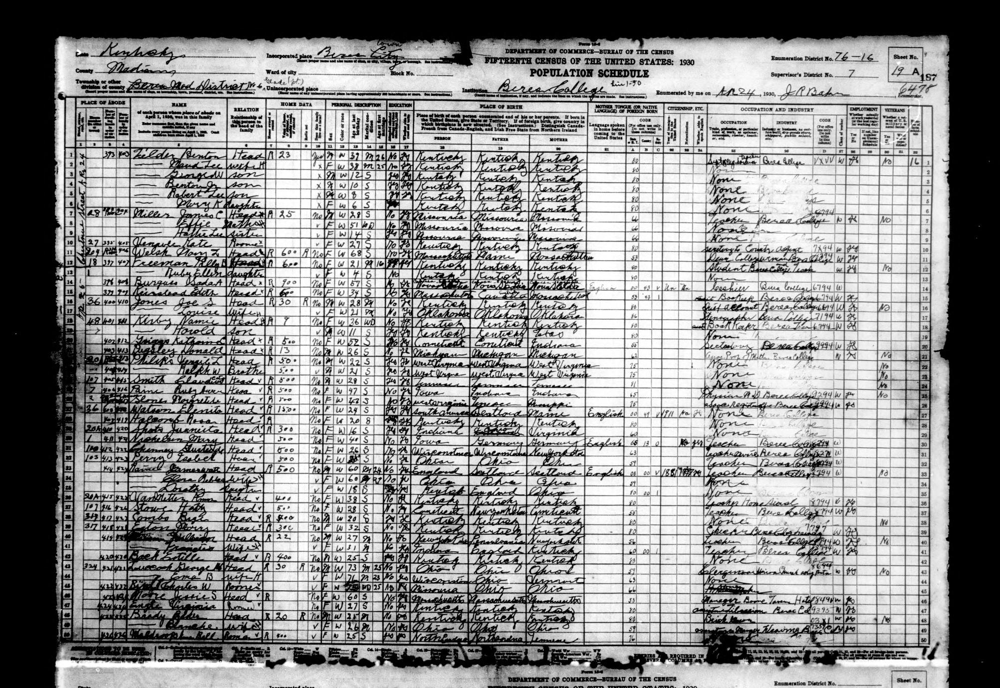
Glade North, district 76-17, is complete, leaves 378–392. Leaf 394 is already Glade excluding Berea Town, district 76-18, sheet 1A. Residual: the rest of 76-18 and 76-19.193
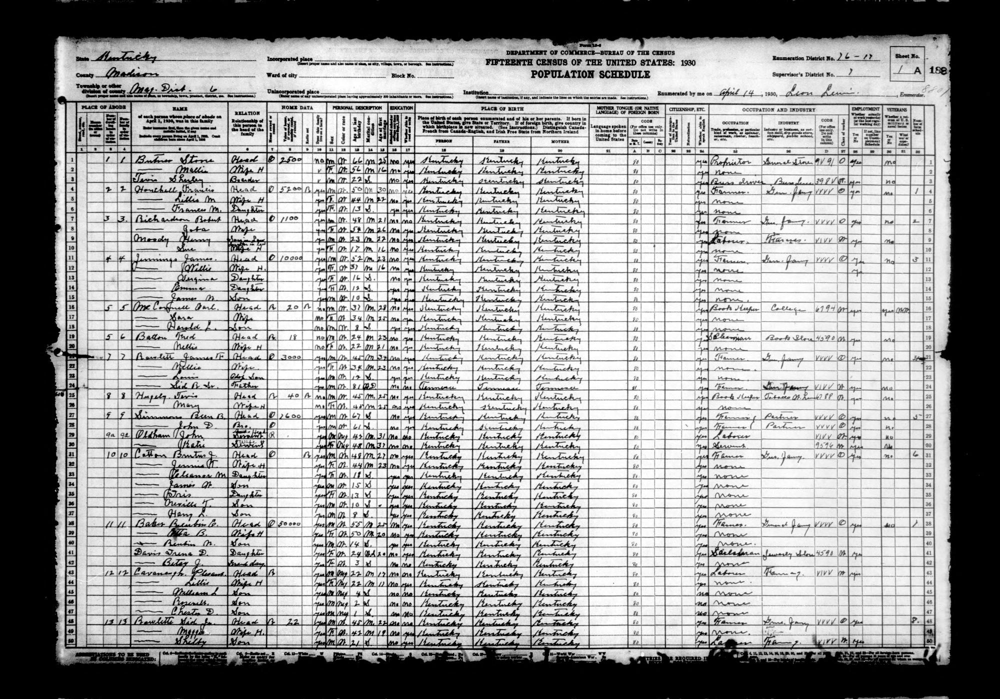
Do not print 1966 or 1976 as proven deaths. Do not print Floyd as Boyd. Do not print the 1942 Combs charge as fact.
Pass 94. Glade Southwest and Glade Southeast
The leftover Glade districts on the same 1930 Madison reel close. District 76-18 — Glade Southwest excluding Berea Town — runs from leaf 394 sheet 1A, 2 April, W. D. Daniel, through leaf 429 sheet 18B, a short last sheet dated 26 April. One given-name Frank on sheet 10A is a farm child, not the contractor.194
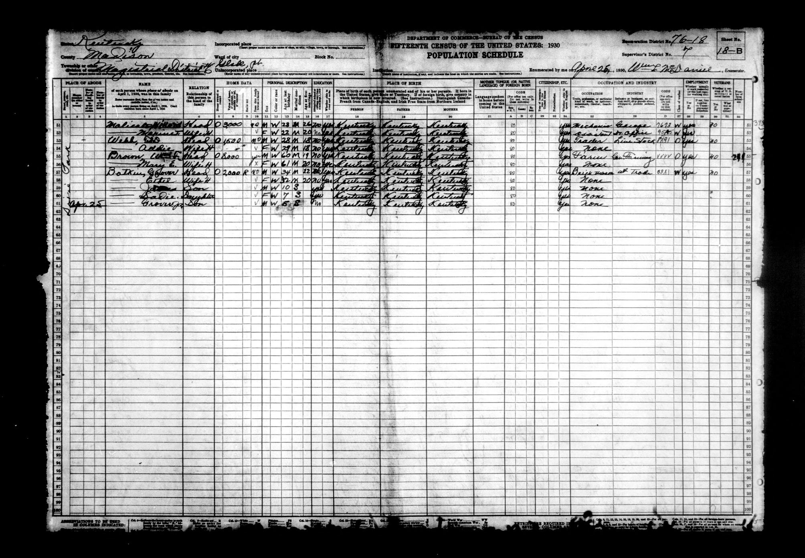
District 76-19 — Glade Southeast — starts at leaf 430, 5 April, W. G. Blanton, sheet 1A, and ends at leaf 465 sheet 18B, 23 April. Leaf 466 is already Kirksville, district 76-20. A machine pass over thirty-six name columns found no Newman token. That is a probable entire-district name negative.195
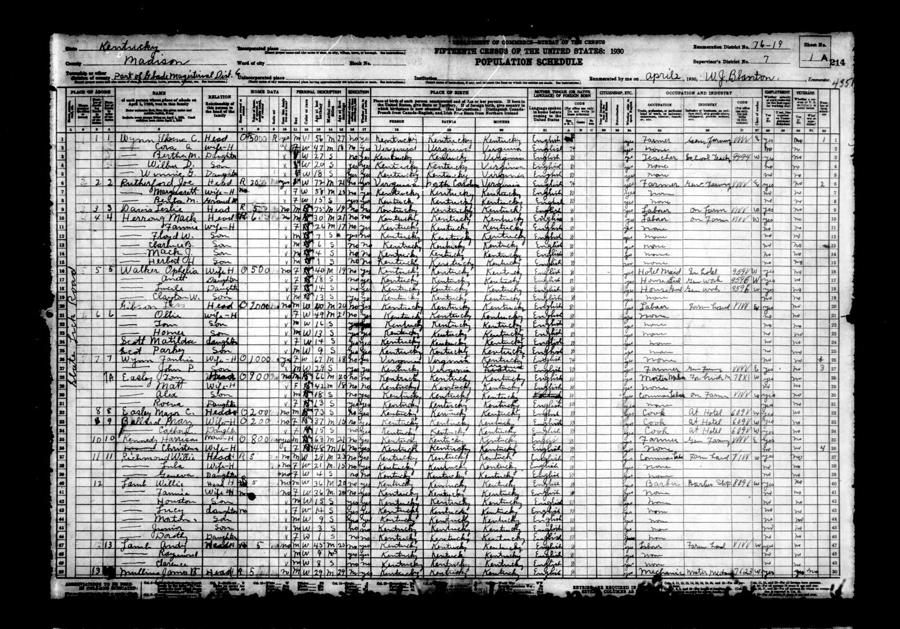
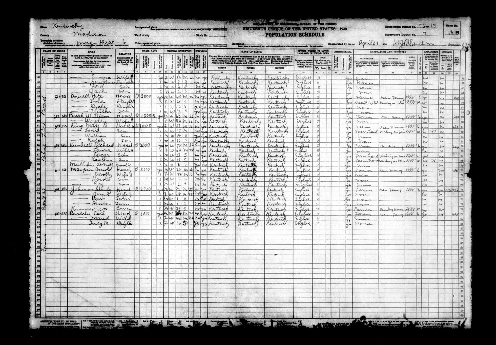
Berea Town and the three Glade districts around it are now walked. Residual for Frank of Berea is a Madison death certificate or a Berea Citizen notice. FamilySearch shells were empty again. Do not print 1966 or 1976 as proven deaths. Do not print Floyd as Boyd. Do not print the 1942 Combs charge as fact.196
Pass 95. Reel 603 is Louisiana, and 743 is Fayette
The next Internet Archive identifier after Kentucky T625-602 is not the missing Wolfe remainder. 14thcensusofpopu603unit is the 1920 Louisiana census — 1,122 images. Reel 602 itself is still 515 images and still ends on Clifty 241, sheet 1.197
Two remaining compiled Wolfe 1920 files close as name negatives: Campton Town and country, Ninth District 236, households 1–205, and Campton Precinct 3. No Newman, Newnam, Noonan, Nunan, or McCoy. The LDSGenealogy landing lists no Antioch or Clifty compiled part.198
The next 1930 Kentucky reel after Estill’s 742 is Fayette, not Station Camp South. Reel 743’s title is Kentucky volumes 25 and 26, Fayette County. Leaf 4 is already Lexington City, district 34-1, sheet 1A, 2 April 1930.199
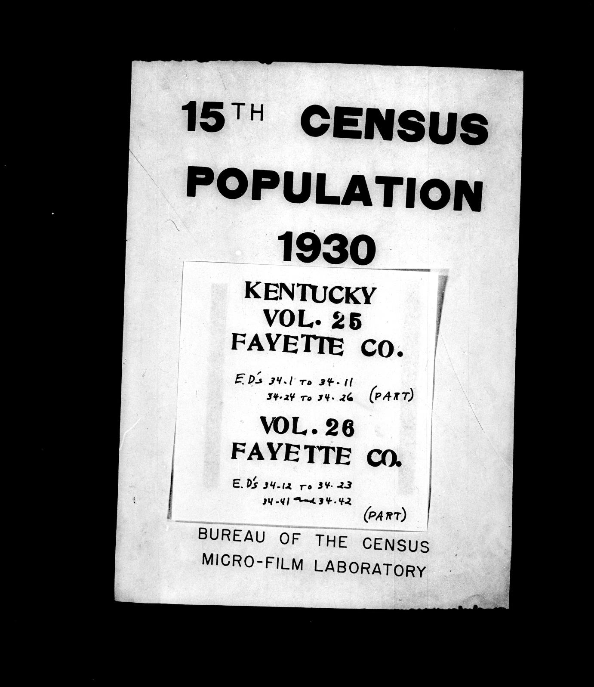
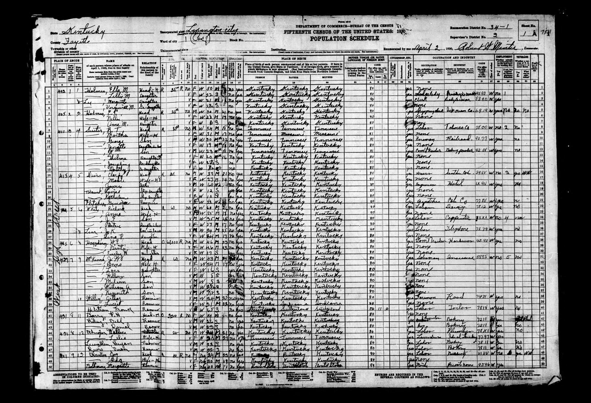
The published Estill 1930 list still marks Station Camp South 33-8 as stamped 095A–102B, unpublished. The official National Archives M1509 pamphlet maps Lee to KY45, Owsley to KY74, and Estill to KY24; the cards are unread. Berea College’s Hutchins finding aid locks The Citizen through June 1958. Do not print 1966 or 1976 as proven deaths. Do not print Floyd as Boyd. Do not print the 1942 Combs charge as fact.200
Pass 96. The rest of compiled Wolfe, and the Citizen ends in 1922
Kentucky GenWeb’s Wolfe 1920 landing lists letter files a, c, d, e, f, g, h, i, and k. Files b and j return 404 — those names were never on the landing. Lee City 234, Hazel Green 235, and Torrent 238 close as name-negatives. Campton Precinct 3 still has no Newman and prints no district number; it is the probable missing district 237. Every listed Wolfe 1920 letter file is now retrieved. The published compiled set is a Probable county-level name-negative for John L. and Cora. The originals for Antioch 242 and the rest of Clifty remain unread.201
The official National Archives T1224 pamphlet puts 1930 descriptions on rolls 61–90. Roll 69 is Kansas and Kentucky. The published Estill team page names district 33-8 as Magisterial District 3, Station Camp, South Part — stamps 095A–102B still unpublished.202
A 1940 compiled pass on Estill is the other-pass evidence. Irvine has Fred, about 1895, and Era, about 1898 — probable Fred L. of Irvine. Red Lick has Hendrix with Sarah E. — not Boyd. The Library of Congress item record for The Citizen of Berea is sharper than the finding aid on one point: 1,228 issues are digitized, but the last digitized issue is 28 December 1922, not June 1958. Hutchins remains the June 1958 path.203
Do not print 1966 or 1976 as proven deaths. Do not print Floyd as Boyd. Do not print the 1942 Combs charge as fact.
Pass 97. Luther in Beattyville, Grant in Heidelberg, and the map rolls
The National Archives’ official 1930 enumeration-district maps page names two publications. Pass 97 read the A3378 split as if it were M1930. That is withdrawn. M1930 puts entire Kentucky on roll 15. The Adair-through-Henderson / Henry-through-Woodford split is A3378 rolls 22 and 23. The maps have not been read.204
Four published Madison 1940 compiled indexes — Richmond, Kirksville, Million, and Union — have no Newman. Berea and Glade compiled pages are unpublished. Combined, Frank of Berea is absent from the published Madison 1940 precinct indexes.205
Lee County’s 1940 compiled pages are the household find. Beattyville has Newman, Luther, about 1891, and Cora, about 1894 — probable Rev. Luther Newnam and Cora Plummer, still living five years before his 1945 death. Heidelberg has Newman, Grand, about 1878, and Martha — probable Grant of Lee. Kate, about 1871, is probable Katherine Sternberg Newnam. The 1950 Fayette name index has no Boyd and no Allie. The Yell County Journal of Ola, LCCN sn90050035, is not digitized.206
Do not print 1966 or 1976 as proven deaths. Do not print Floyd as Boyd. Do not print the 1942 Combs charge as fact.
Pass 98. Cora Plummer’s house, and Foxtown is Jackson
Internet Archive’s Kentucky T625-602 scan is still 515 images. Antioch 242 and the rest of Clifty are still not on a free scan. Stillwater in Wolfe has only Mae Newman, about 1905. Wolfe County in 1950 has zero Newman and zero Newnam. Woodford’s Market House has Hubert Newman, about 1878, and Orie, about 1888 — not John L. and Cora.207
A page titled Foxtown is Jackson County, not Madison. It has Newman, Shelby, about 1893, and Grace, about 1898 — probable the 1913 Lee couple. They are not Frank the contractor.208
The 1950 Lee plates are the household find. Beattyville district 65-1, sheet 20, household 198: Newman, Luther D., twenty-eight, and Cora P., twenty-eight — not Rev. Luther, born 1891, dead in 1945. The next sheet, household 196: Newman, Cora P., fifty-six, head, widow, with Charlie Plummer, fifty-five, brother. Name plus Plummer brother plus Beattyville plus widow after 1945 make her Proven Cora Plummer Newnam, the minister’s widow.209
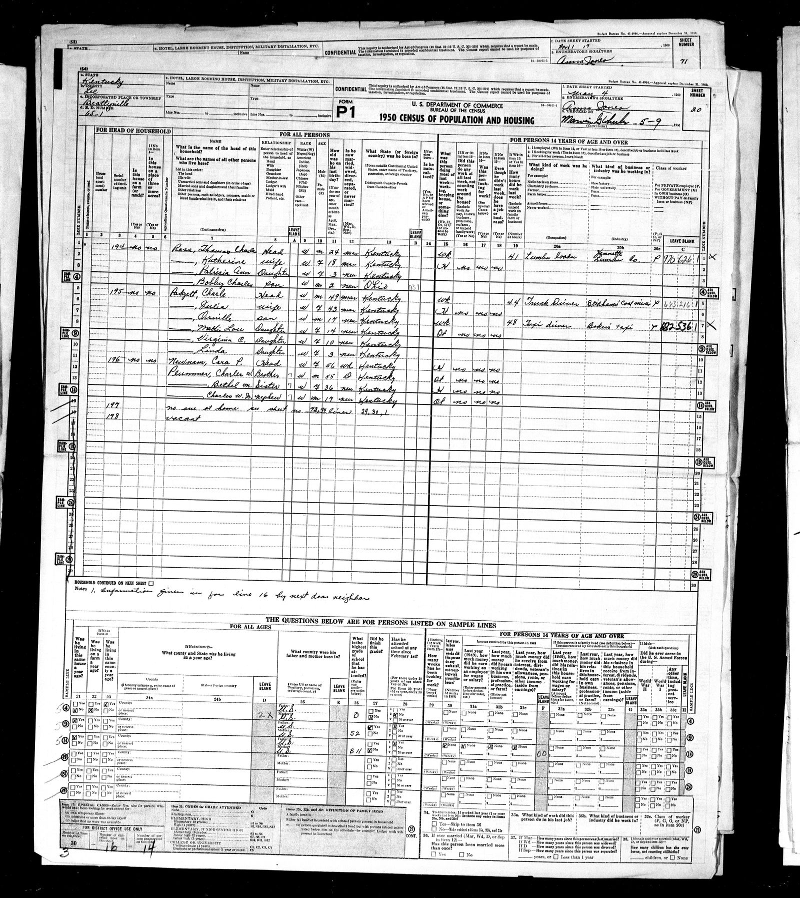
FamilySearch shells were empty again — roadblock step 48. LDSGenealogy’s pointer for Estill newspaper abstracts, 1913–February 1946, is FamilySearch catalog 520482. Images unread. Do not print 1966 or 1976 as proven deaths. Do not print Floyd as Boyd. Do not print the 1942 Combs charge as fact.
Pass 99. Lee County in 1950, and Martha is not Grant’s widow
The 1950 Lee name index is seven Newman hits and four Newnam hits. None is McCoy. None is Frank the contractor. None is John L. and Cora — they are in Woodford. None is Boyd and Allie. Owsley McCoy as a given name is zero.210
The plates close the names. Thomas Ray, twenty-seven, is rejected against John H. of 1899, Frank, and Rev. Luther. Newnam, Martha, fifty-one, widow, is not Grant’s Martha Brandenburg, who would have been about sixty-eight and who died 18 February 1951. Johnia, fifty-four, is probable the 1940 Heidelberg Johnnie — and not John L., seventy, in Woodford. Dillard, forty-seven, is rejected. Jackson has only a sample-line Newman, Bonnie, sixteen.211
Wolfe’s compiled 1920g Holly, 1920h Stillwater, 1920i Clifty, and 1920k Antioch were fetched again. No Newman. The published compiled set stays a probable county-level name-negative. FamilySearch returned 403 — roadblock step 49. Do not print 1966 or 1976 as proven deaths. Do not print Floyd as Boyd. Do not print the 1942 Combs charge as fact.212
Pass 100. Fred and Era in Irvine, and Madison is empty
Internet Archive’s Kentucky T625-602 scan is still 515 images. A search for another identifier returned only that reel and Pennsylvania Mercer 1602. Antioch 242 and the rest of Clifty are still not on a free scan.213
The other-pass evidence is visual, not a header. Estill district 33-1, Irvine, National Archives 1950 image 0003, form sheet 2, 1 April 1950, household 14: Newnam, Fred, fifty-five; Era R, fifty-two; Dorothy J, nineteen. That is the same 1940 Irvine compiled couple — Proven. Against Fred L. Newman, who died 14 June 1961 in Estill at sixty-six, the pair of names plus Irvine plus the age step make the identification Probable. He is not Boyd. He is not Frank.214
Two other Estill 1950 households fail the same-person test against Boyd and Allie. Harding, sixty-five, and Sarah, sixty-four, are not Boyd and Allie. Vertie, forty-one, is not either of them.215
The remaining Lee 1950 Newman hits — a fourteen-year-old “Nerman” grandson, Elen sixty-six, Charles thirty-four, Been forty-six, Grenvy thirty-six, Charles twenty-four — are rejected against John L, Frank, and Boyd. Madison’s remaining adult Newman males — William forty-eight, Zelma forty-eight, Hiram thirty-six, W M twenty, Lee nineteen — are rejected against Frank the contractor of about sixty-one. Combined with Dewey twenty-six and Shelly and Grace of Richmond, that is a Probable Madison 1950 name-index negative for the contractor.216
Station Camp South is still missing. District 33-8, stamped 095A–102B, is still unpublished. District 33-5, Irvine South, 060A–065A, is also unpublished. The pass-100 sentence that mapped those districts to M1930 rolls 22 and 23 is withdrawn in Pass 101. FamilySearch returned 403 — roadblock step 50. Do not re-ask the clerk. Do not print 1966 or 1976 as proven deaths. Do not print Floyd as Boyd. Do not print 1962 as McCoy’s death. Do not print the 1942 Combs charge as fact.217
Pass 101. Kentucky is roll 15, and 1950 33-8 is Millers Creek
Internet Archive’s Kentucky T625-602 scan is still 515 images. Antioch 242 and the rest of Clifty are still not on a free scan. That catalog gap is Proven. This pass does not stall on it.218
The map-roll error is now closed as a catalog fact. M1930 puts entire Kentucky on roll 15. The Adair-through-Henderson / Henry-through-Woodford split is A3378 rolls 22 and 23. The maps themselves have not been read.219
The 1950 analog is an image. The National Archives open-data map of Estill County puts 33-8 in Magisterial District 2, Millers Creek. Station Camp is 33-11 and 33-12. 1950 district 33-8 is not 1930 district 33-8. The descriptions agree: 33-5 is Ravenna city; 33-8 is Millers Creek east of the Fitchburg Furnace Branch–Knowlton Road; 33-11 and 33-12 split Station Camp on the South Irvine–Leighton Road via Ola. The 1950 Estill Newnam index still has only Fred, Harding, and Vertie — none in Station Camp. A nineteen-year-old Boyd on 33-12 sheet 13 is rejected.220
Genealogy Trails’ Lee World War I tables still have no Newnam, Newman, or McCoy. The USGenNet Lee wills landing is live and still has no Samuel P. Chronicling America returned thirty-three 1926 “Dora Stone” pages and none of them is Yell County. FamilySearch rendered a login shell — roadblock step 51. Do not re-ask the clerk. Do not print 1966 as fact.221
Pass 102. The surviving 1926 weekly is the Post-Dispatch
The National Archives pamphlet that lists every 1930 enumeration-district map names the Kentucky sheets. Estill County has a county map and an Irvine city map. Lee has no Beattyville sheet. Madison has Richmond, not Berea. Station Camp is not a named minor-civil-division map. District 33-8 lives on the Estill county sheet. The maps have not been read.222
The 1926 newspaper hole is a holdings fact. The Danville Democrat of 1899–1927 is Library of Congress control number SN89051010. It is not digitized. The recorded film is one issue in April 1908 and one issue in July 1915. There is no 1926 Democrat in that directory. The Yell County Journal of Ola holds 10–17 June 1926 and nothing else. The Dardanelle Post-Dispatch film does cover August 1926 at the Arkansas State Archives, the Dardanelle library, Pope County Library, and the University of Arkansas. Those reels have not been read.223
Kentucky’s digital newspaper program still ends the Berea Citizen in 1922. Hutchins Library lists the paper on microfilm from 1899 through 1958. Genealogy Trails’ Lee World War I tables still have no Newnam, Newman, or McCoy. The USGenNet Lee wills landing still has no Samuel P. Do not re-ask the clerk. Do not print 1966 as fact.224
Pass 103. Roll 5 is at Pope County Library
The official National Archives T1224 pamphlet names the 1930 description rolls. They are rolls 61 through 90. Roll 69 is Kansas and Kentucky. Estill district 33-8 lives on that roll. The descriptions have not been read. Steve Morse’s 1930 transcribed-description tool returns nothing for Estill, Station, or 33-8. The us-census Estill 1930 directory still publishes only districts 33-1 through 33-4.225
Pope County Library’s Yell newspaper list names the reel. Dardanelle Post-Dispatch Roll 5 runs from 21 June 1923 through 26 April 1928 at 116 East Third Street, Russellville, Arkansas. That reel includes August 1926. It has not been read. A Chronicling America “Dora Stone” 1926 hit is the Evening star of Washington, D.C., 24 December 1926 — rejected.226
Madison County’s 1958 K–R death year-file independently lists Newman, David G, 19 June 1958, age seventy, volume 028, file 13719. The 1956–1961 year-files have no Frank decedent. The Berea Citizen begins 3 July 1958. A 19 June 1958 notice is still The Citizen on the Hutchins June 1958 film. David G remains Possible only against Frank of Berea. Do not print 1966 as fact.227
Pass 104. The Madison library archive starts in 2008
Madison County Public Library’s Berea Citizen Newspaper Archive lists 201 monthly PDFs from 17–24 April 2008 through February 2026. The years present are 2008–2026. The string 1958 does not appear. June 1958 is not in that free modern archive.228
KYGenWeb’s Estill census page publishes 1880, districts 36–40, and nothing later. The Estill wills page publishes James Scrivner, Henry Thomas, and Jacob Tipton — no Samuel P. Steve Morse’s other 1930 form still says the transcribed data are no longer online. District 33-8 is still unpublished. The 1926 retrieval path is still Pope Roll 5. Do not print 1966 or 1976 as proven deaths. Do not print Floyd as Boyd. Do not print 1962 as McCoy’s death. Do not print the 1942 Combs charge as fact.228
Pass 105. Fayetteville holds the same 1926 weekly
The University of Arkansas working spreadsheet of Arkansas newspapers on microfilm has 1,024 rows. Dardanelle post=dispatch is call number F419.D37 D3, OCLC 19026544. The library’s own holdings note includes 7 July 1910 through 31 March 1955. August 1926 is inside that run. The film has not been read. Mullins Library has moved the microforms off-site during renovation.229
The same sheet holds the 1899 Danville Democrat for 15 July 1915 only. A Rural record from Magazine Mountain is filmed for 17 June 1926 only — not the week she died. Knox County’s World War I N-index lists five Newman men who are Knox men. No Newnam. No Luther of Beattyville. District 33-8 is still unpublished. David G. of 1958 is still Possible only against Frank of Berea. Do not print 1966 as fact.230
Pass 106. The 1958 index is on cards between rooms 228 and 229
Hutchins Library’s own FAQ places the Berea Citizen index for 1899–1983 on paper cards, on the main floor between rooms 228 and 229 behind the Reference Collection. That is a named path for a June 1958 Newman or Frank heading.231
Newspapers.com paper 41271 is a paid archive: 11,672 pages for 1958–1977, 35,377 pages in the canonical 1899–1977 run. Those pages have not been read. June 1958 sits inside that product. Pope County Library’s headquarters listing adds phone 479-968-4368 and weekday hours. Newspapers.com has no paper page for the Dardanelle Post-Dispatch. District 33-8 is still unpublished. David G. of 1958 is still Possible only against Frank of Berea. Do not print 1966 as fact.232
Pass 107. Station Camp South is on the Allen County reel
The 515-image Internet Archive item 15thcensusofpopu742unit skips Estill 33-8. Allen County Public Library’s kentuckycensus00reel742 holds the full reel: 1,165 images, volume Reel 742, covering Daviess, Edmonson, Estill, and Grant. The PDF was not downloaded. Leaves 777–792 are Kentucky, Estill, Magisterial District 3 (part), enumeration district 33-8, enumerator Thomas H. Brison, sheet 1A stamped 095 through sheet 8B.233
Sixteen name columns were read. There is no Newman or Newnam surname. A Flynn child named Boyd, a Witt son Floyd, and a Fowler head Floyd are other families. Combined with the already-complete 33-7, Boyd and Allie are absent from both 1930 Station Camp districts. District 33-9 is on the same reel and was not fully read. Hutchins FAQ 9806 names phone 859-985-3364. University of Kentucky Microfilm S-150 starts 3 July 1958 — too late for a 19 June death still published as The Citizen. David G. of 1958 is still Possible only against Frank of Berea. Do not print 1966 as fact.234
Pass 108. District 33-9 and Irvine South are empty too
On the same Allen County reel, leaves 793 through 819 are Estill Magisterial District 3, enumeration district 33-9. The enumerator is Hattie M. Cole. Sheet 1A opens the district; sheet 14A, stamped 116, closes it. Leaf 820 is blank. Leaf 821 is already 33-10, Red Lick, stamped 117.235
Twenty-seven name columns were read. There is no Newman or Newnam surname. A head surnamed Floyd, and given-name Floyds in Worley, Newton, Tackett, Cecil, and Henderson houses, are other families. Combined with 33-7 and 33-8, Boyd and Allie are absent from District 3 Station Camp and from this next District 3 film.236
Leaves 707 through 717 are Estill Magisterial District 1, enumeration district 33-5 — Irvine South outside the city and Ravenna. The enumerator is Mrs. Daisy Wiggins. Sheet 1A is stamped 060; sheet 6A is stamped 065. Leaf 706 is still 33-4. Leaf 719 is already 33-6, Ravenna, Jesse Thorp. Eleven name columns were read. There is no Newman or Newnam surname. A Witt head named Floyd is another family. A Brandenburg household is that surname only; it is not Allie. David G. of 1958 is still Possible only against Frank. Districts 33-5 and 33-9 are no longer unpublished on free film. Do not print 1966 as fact.236
8. What the records will not say
A biography written from schedules and indexes is honest about its silence. No diary, letter, or signed paper in Dora’s own hand is in this case file. The 1926 certificate is her son’s voice, not hers.3 The 1900 children’s-ever-born count is the closest we come to her speaking, and even that is an enumerator’s tick.19
She has no documented occupation. The 1880 schedule lists a child. The 1900 schedule lists a wife. The 1926 certificate lists a married woman who died of apoplexy. This book will not invent a trade, a church membership, or a personality from the fact that her sisters married at Elias’s house and her father later lived with a postmaster.65
The 1910–1920 hole is a hole. Statewide Soundex negatives prove she was not indexed as Newman/Newnam Dora of the right age in Kentucky, Arkansas, Missouri, Oklahoma, or Texas in April 1910, and not as Newman Dora ~48 in Kentucky, Arkansas, Oklahoma, Tennessee, or Missouri in January 1920. They do not prove she had left the earth. A wife listed only on a husband’s card under some other surname would not appear in those slots.34
The compiled Boone descent printed on WikiTree and on a Kentucky Landmark marker at the Newnam Cemetery in Pebworth is a lead for another case, not a fact of this one.11
A portrait identified as Dora was mentioned in a prior conversation. It has not been re-opened, independently identified, or placed in the case file. Family identification of a likeness, without the image in hand, is Speculative. This book prints no face.66
Family group
| Person | Dates | Confidence | |
|---|---|---|---|
| Subject | Dora Ella Newnam, later Stone (P001) | August 1871 (day 11 possible) – 23 August 1926 | Identity proven |
| Father | Elias T. “Doll” Newnam (P004) | 18 April 1842 – 18 April 1932 | Probable |
| Mother | Mary Ann Smallwood (P005) | April 1842 – 11 July 1918 | Probable |
| Husband 1 | Samuel P. Newnam (P002) | June 1869 – before April 1910 | Marriage proven; death date speculative |
| Husband 2 | T. A. Stone, probable Tom A. Stone (P003) | c. 1858 (marker 1845) – 1925 | Probable; not proven |
| Siblings (1880 house) | William; Malissa (Melissa Estes Miller, d. 11 Apr 1957); Francis; Mary; Catharine | See timeline | Census lines proven; Melissa death proven |
| Children | Two unnamed, dead by 1900; McCoy; Mary Magdalene; Pearl P.; Rissa; John H. | 1890–1899 for the named five | 1900 household proven |
Living descendants are omitted. Anyone born after about 1926 without a death record is treated as living.
Documentary timeline
| Date | Age | Event | Note |
|---|---|---|---|
| 7 June 1870 | — | Elias & Mary at Travellers Rest; no Dora | Endnote 8 |
| 29 June 1870 | — | Samuel, 1, with John & Elizabeth, Sturgeon hh 19 | Endnote 18 |
| August 1871 | 0 | Dora born, Lee County (year proven; day 11 possible) | Endnotes 3, 7 |
| 1 June 1880 | — | Samuel, 11, John & Mary, ED 59 dw 3 | Endnote 16 |
| 5 June 1880 | 8 | Dora in Elias’s house, ED 59 dw 46 | Endnote 5 |
| 10 December 1885 | 14 | m1 Samuel P. Newnam at Doll Newnam’s | Endnote 12 |
| 10 February 1886 | 14 | Sister Mary L. m. James Hoover — not Dora | Endnote 44 |
| April 1890 – August 1899 | 18–28 | Five surviving children born | Endnote 19 |
| 5 June 1900 | 28 | Sturgeon ED 52 sh 4B dw 67; 7 born, 5 living | Endnote 19 |
| April 1910 | ~38 | Not in Sturgeon as Newnam; not Newman Dora in KY/AR/MO/OK/TX; Pearl with Elizabeth | Endnotes 27, 31, 34 |
| 18 February 1917 | 45 | Coy m. Letha Sullivan at Ola | Endnote 37 |
| 12 January 1920 | ~48 | Not in AR/KY as Dora Newman ~48; E.T. in Beattyville | Endnotes 38–42 |
| 1920 × 1925 | 48–54 | m2 T. A. Stone (probable) | Endnotes 45–46 |
| 27 April 1926 | — | FAN: Callie (Moore) Newnam, Everett’s wife, d. — not Callie Spicer | Endnote 99 |
| Noon 23 August 1926 | 55 | Death at Ola; burial 24 August, Carters Chapel | Endnotes 48, 50 |
| 6 October 1926 | — | FAN: Dorothy Newnam, 1, d. Idamay; parents Everett × Callie Moore | Endnote 99 |
| 16 March 1928 | — | FAN reject: Frank Newnam of St. Helens (b. 1853) — not Berea contractor | Endnote 100 |
| 11 April 1957 | — | Sister Melissa Newnam Estes Miller d., age 93; Riverview | Endnote 98 |
| January 1920 | — | FAN: Heidelberg hh 101–106 Grant 42 + Martha Brandenburg | Endnote 105 |
| 21 September 1941 | — | FAN: Kate Newnam d. Beattyville = Katherine Sternberg | Endnote 106 |
| 14 June 1961 | — | FAN: Fred L. Newman d. Estill age 66 | Endnote 106 |
| 5 November 1961 | — | FAN: Callie Spicer d. Lee; parents Daniel Newnam × Sarah Veneable | Endnote 107 |
| 9 December 1970 | — | FAN: Grant Newnam of Lee d. Fayette age 93 | Endnote 105 |
| 14 July 1870 | — | FAN: Daniel Newman, 22, Beattyville hh 23 — possible later Daniel | Endnote 111 |
| 22 June 1900 | — | FAN: Buck Creek hh 324/326 widow Minerva + Callie / Evert / David F. | Endnote 109 |
| April 1910 | — | FAN: Buck Creek John+Lillie; Everet 23; Grant 21 (not 1876 Grant) | Endnote 110 |
| 20 November 1915 | — | FAN: John Newman × Cora Brandenburg; parents Dan × Mininerva Venable | Endnote 110 |
| April 1930 | — | FAN proven as visual nil: Estill 33-9 Dist. 3 (Hattie M. Cole, 1A–14A) — Boyd + Allie absent | Endnotes 235–236 |
| April 1930 | — | FAN proven as visual nil: Estill 33-5 Irvine South (Daisy Wiggins, 060–065) — Boyd + Allie absent | Endnote 236 |
| April 1930 | — | FAN proven: Owsley ED 95-7 hh 131 Newman, John L 51 + Cora 36 | Endnotes 121–122 |
| April 1930 | — | FAN probable: hh 133 Newman, McCoy 40 + Edith 29 MO (P010) | Endnote 122 |
| April 1950 | — | FAN probable: Woodford ED 120-13 John 70 + Cora 56 | Endnote 119 |
| 1 June 1900 | — | FAN proven: Sturgeon hh 41 Oliver + Allie A. Nov 1885 age 14 | Endnote 150 |
| January 1920 | — | FAN reject: Soundex John 38 + Jennie 21 Breathitt ≠ John L | Endnote 151 |
| 13 October 1947 | — | FAN reject: Sarah Newman = Damrel, not Veneable | Endnote 111 |
Charts
These charts are generated from family.json and visuals/life.csv. Solid lines are proven; dashed lines are probable or possible. Living people are omitted. Samuel’s lifespan bar ends in 1910 because that is the latest bound for his death, not a known death date.58


Documentary plates
The crops used in the chapters sit on these full sheets. A reader who wants to check a neighbor, a dwelling number, or an enumerator’s hand should start here. None of these pages contains a portrait. A 2020 view of Beattyville’s Main Street is included only as a later street in the same town.67 The Fourche La Fave plate in chapter 5 is a 2013 landscape of Tom A. Stone’s 1920 drainage, not a picture of him.64


Conflicts this book will not paper over
| # | Dispute | Resolution in this book |
|---|---|---|
| 1 | Birth 11 Aug 1868 vs August 1871 | Year 1868 disproved. Year 1871 proven. Day 11 possible. |
| 2 | Parents born Owsley (1885) vs Elias born Clark | Prefer Elias’s own records: Clark. Names still probable. |
| 3 | Samuel died 24 February 1906 | Date speculative. Death before April 1910 probable. |
| 4 | Tom A. Stone 1845 vs ~1858 | Identification probable. Birth year unresolved. |
| 5 | Mary M. 1892 vs 12 June 1893 | Both printed. Not a same-person threat. |
| 6 | Death “about 1930” | 1930 disproved by the 1926 certificate. |
| 7 | “Mammoth, Ark.” | Printed as written. Not corrected to Nimrod. |
| 8 | S. P. Newnam × Rosa Banks, 1904 | Not merged. |
| 9 | Samuel’s mother Mary vs Elizabeth | Open. Two households, one age-matched boy. |
| 10 | A third (Peebles) marriage | Not supported. Two marriages stand. |
| 11 | Which 1900 Missouri Thomas is 1920 Tom A.? | Open. Douglas original read; not merged. Dunklin village nil. Soundex Vol 33 = Greene; original unread. |
| 12 | 1920 “Grand Father” of C.B. Burke | Resolved: grandfather of Provie, the wife. |
| 13 | 1910 ED 99 enumerator | Surname Treadway on sheet 8A (given name uncertain). Brandenburg / Newnam withdrawn. |
| 18 | Edward Newnam age 16 vs 20 at the 1936 wreck | Same wreck. Do not average. Home-county Enterprise (16) preferred as possible-to-probable. |
| 20 | Frank of Berea vs Grant of Berea | Open — do not merge. Grant living 1951; omitted from Everett’s 1939 brother list. |
| 21 | Callie Newnam d. 1926 vs Callie Spicer living 1944 | Resolved — two women. 1926 Callie is Everett’s wife (Moore). Spicer is the sister. |
| 22 | Frank Newnam d. 1928 St. Helens vs Frank of Berea living 1939 | Resolved — two men. 1928 Frank born 1853, parents William × Rhoda Tincher. |
| 23 | Grant Newnam “late” in 1955 vs 1970 death | Resolved. Grant died 9 December 1970. The 1955 wording is couple-style error. |
| 24 | Mother’s given name Minerva vs Mininerva vs Sarah Veneable | Open, upgraded. 1880 Sarah M. + 1936 Sarah M. Evans (Lee Roy Veneble × Ratchel McQueen) make one woman Probable. Dual given “Sarah Minerva” still unprinted. |
| 25 | 1904 VS “born Owsley” vs VA nativity | Open. Prefer 1880/1900/1910 + 1936 extract (Virginia). 1904 line is the outlier. |
| 26 | John of Owsley’s death | Open on the date only. 1930 John L 51 + Cora 36 is Proven the 1880/1910/1915/1940/1950 man. 1966 Woodford index row is still Probable. Do not print 1966 as fact. |
| 27 | Floyd Newnam 1902 vs Boyd Newman 1900/1910/1920 | Open. License is compiled-proven. 1910 Heidelberg = 1920 Station Camp is Proven. Floyd is Possible only — not merged. 1930 Estill 33-5, 33-7, 33-8, and 33-9 are visually closed — Boyd and Allie absent. Do not print Floyd as Boyd. |
Sources not yet examined
These are exact retrieval paths, not a homework list. Free substitutes were tried first.
| Repository | Ask for | What it should settle |
|---|---|---|
| Ancestry, Arkansas Death Certificates, 1914–1969 (user login) | Stone, Thomas / Tom / T. A., 1925, Yell or Perry | Conflict #4 |
| Same | Stone, Dora, Yell, 23 Aug 1926, cert. 1524 | Re-read “Mammoth”; confirm image fields |
| FamilySearch, signed in | Lee Co. Marriages, image Q2QD-PZHL, 10 Dec 1885 | Book 2 transcription |
| Yell County Clerk, Danville; Perry County Clerk, Perryville | Marriage index 1920–1925, Newnam/Newman × Stone | m2 date and place |
| Lee County Clerk / Kentucky Archives | Samuel P. Newnam burial or church minutes, 1900–1910 (no county VS for 1905–1910) | Close the 1906 lore |
Internet Archive 12thcensusofpopu855unit | Greene Co. MO, Campbell Twp ED 37, sheet 17, line 25 | Original for Soundex Thomas A. 32 |
| Arkansas State Archives / Plainview, Danville, or Dardanelle library | Yell County Journal (LCCN SN90050035); Danville Democrat; Dardanelle Post-Dispatch (SN89051008) late Aug 1926 | Obituary, kin list |
| FamilySearch (sign-in) | Lee films 127913 / 127891 / 127869 / 964964 / 156057 / 97277 | Samuel P. administration / tax window |
| FamilySearch 1146342 / NARA M1509 KY45/24/74 | John H. b. 1899; McCoy b. 1890; Luther b. 1891 | WWI cards unread |
| Fayette DC vol. 060 cert. 29556 | Grant Newnam 9 Dec 1970 image | Index already read |
| Lee 1961 / Estill 1961 certificate images | Callie Spicer / Fred L. Newman | Extracts already read |
| Carter Cove Cemetery (photograph or Find A Grave request) | “Newman, Dora”; “Stone, Thomas 1845–1925” | Confirm the 1993 reading |
| FamilySearch, signed in | Arkansas statewide bride index, Dora / Peebles / Stone, 1917–1926 | Residual H3 |
| NARA / FamilySearch / Ancestry T625-602 remainder | Wolfe Antioch ED 242 + remaining Clifty after sheet 1 | John L + Cora 1920 originals still not on a free IA item |
| NARA M1930 roll 15 / A3378 roll 22 | Estill county + Irvine 1930 color ED maps (33-5 / 33-8 / 33-9 schedules are now image-seen on IA ACPL reel 742) | Maps unread. Pass 97–100 “rolls 22/23” IDs withdrawn |
| NARA T1224 roll 69 | 1930 ED descriptions, Kansas + Kentucky — Estill 33-5 / 33-8 / 33-9 | Descriptions unread |
| FamilySearch 520482 | Estill newspaper abstracts 1913–Feb 1946 | Boyd / Allie / Frank press |
| Hutchins Library / Berea RG 12/12.12 | The Citizen June 1958 page (CA digital ends 28 Dec 1922) | David G. Newman 19 Jun 1958 / Frank residual |
| WCHS Duell-Clark 1958–1978 / KHS 1957–1969 / KY cert 17762 | JOHN L NEWMAN 17 Jul 1966 Woodford | Do not print 1966 as fact until the certificate is read |
| Combs, Parsons & Collins Funeral Home (Richmond) | Frank Newnam / David G. Newman obituaries | Contractor of Berea residual |
Endnotes
Citations follow Evidence Explained practice as adapted in the case file: creator, title, type, repository, identifiers, URL and access date, and whether the image, an index, or a transcription was seen. “Prior session” means a record logged in this case before 28 October 2026 and not re-opened for this book.
- Case intake, “00-intake.md,” research question and definition of done, opened from prior Dora cloud-agent work, last updated 27–28 October 2026. Living descendants redacted per BCG Genealogical Proof Standard practice and the case ethics file.
- Same-person merge table, “04-evidence.md”: 1880 Dora 8 + 1885 bride + 1900 wife + 1926 Dora Stone. Verdict: same woman, proven identity chain. The only contradiction is the death-certificate birth year.
- Arkansas State Board of Health, death certificate Dora Stone, Yell County, 23 August 1926, file/cert. 1524 (RD 676). Informant Coy Newnam, son, Ola. User-supplied image, prior session; not re-opened for this book. Index: Ancestry, Arkansas Death Index, 1914–1950. Conflict #1: year 1868 disproved by the 1880 age 8 (endnote 5), the 1885 age 14 (endnote 12), and the 1900 month/year (endnote 19).
- Lee County created 1870 from Breathitt, Estill, Owsley, and Wolfe. FamilySearch Wiki, “Lee County, Kentucky Genealogy.” Locality also treated in “01-plan.md.”
- 1880 U.S. census, Lee County, Kentucky, ED 59, sheet 6 (SD 3), dwelling/family 46/46; enumerated 5 June 1880 by James J. Hampton. NARA T9, reel 427. Internet Archive item
10thcensus0427unitframe n730. Image seen. Filesources/census/1880-lee-ky-ed59-sheet6-p730-elias-dora.jpg, SHA-256ce48bc3c6a4021976aa480def6b1cc080aced108005d2861f8c144396039b36f. Diplomatic transcription: “08-transcriptions.md,” DOC001. Claim C003. - U.S. Census Office, 1880 Soundex (NARA T750), Kentucky, N-550, cards “Newnam, Elias,” Lee County, vol. 18, ED 59, sheet 6, line 11, and continuation. Internet Archive
soundex1880ky055frames n2105–n2106. Images seen. SHA-256 n2105ba11d7beb4a9771b19d16ea60c5bb31ce51ca8c74013bcf516f96061b77a4415; n21063fd163617fc3f2a936e8b4c4a958541d5fcdb0274c5ca8f588f29967dc2604c0. DOC002–DOC003. - Birth year August 1871: 1900 schedule “Aug 1871” (endnote 19) + 1885 age 14 (endnote 12) + 1880 age 8 on 5 June 1880 (endnote 5). Claim C001: year proven versus 1868; county probable.
- Debi Houser Kendrick, transcriber, “1870 Owsley County Kentucky Census — Travellers Rest,” household 131/128, Elias Newnam, 7 June 1870: Elias 26, Mary 26, William D 11, Malissa D 6, Frances 3, Mary 1 — no Dora. USGenNet/ALHN, accessed 27 October 2026. Transcription only; original image of this page not isolated. Claim C067.
- Parents Elias T. Newnam and Mary (Smallwood) Newnam: death certificate (endnote 3) + 1880 household (endnote 5) + 1885 wedding at Doll Newnam’s (endnote 12). Claim C004, probable (near GPS). Original 1885 image and Elias’s own death certificate would finish GPS.
- Prior-session claims, not re-imaged this pass: Elias T. Newnam born 18 April 1842, Clark County (C040); Mary Ann Smallwood born April 1842 (C041); Elias, bugler, Co. C, 14th Kentucky Cavalry, 16 August 1862 – 16 September 1863 (C042). Free locations recorded in earlier work: 1890 veterans schedule, Beattyville, RootsWeb/USGenNet 1890b; roster, Three Forks Historical Association, 14th Kentucky Cavalry. Treat as prior until the images are re-opened.
- Compiled Boone descent: WikiTree Leah (Scholl) Newnam (Scholl-45) and Dora Ella Newnam (Newnam-49), accessed 27 October 2026; Owsley County Historical Society note on Newnam Cemetery as a Kentucky Landmark. Authored / compiled. Speculative in this case. Not independently re-proved. WikiTree Newnam-49 also gives death “abt. 1930,” which is disproved (endnote 3).
- Debi Houser Kendrick, transcriber, “Lee County Marriage Book 2 (30 August 1877 – May 1886),” entry Samuel P. NEWNAM & Dora Ella NEWNAM. USGenNet/ALHN, accessed 27 October 2026. Transcription only. Original image FamilySearch Q2QD-PZHL not seen. Claim C010.
- 1900 schedule, married 14 years (endnote 19), independently confirms the 1885 marriage.
- Age at first marriage: 14 years from preferred birth 11 August 1871 (day possible) to 10 December 1885. Single-person fact, not a rate. “09-statistics.md,” A001. Book 2 contains other brides of 16.
- Conflict #2, “07-conflicts.md.” Prefer Elias born Clark (prior C040 / endnote 10; 1874 Katty register, prior). 1885 “Owsley” is informant error.
- 1880 U.S. census, Lee County, Kentucky, ED 59, sheet 1, dwelling/family 3/3; enumerated 1 June 1880 by James J. Hampton. NARA T9 reel 427. Internet Archive
10thcensus0427unitframe n725. Image seen. Filesources/census/1880-lee-ky-ed59-sheet1-p725-john-samuel.jpg, SHA-2563ee18d923c7a2b59a9a063825323bc729f5da902cfd86cf44f04a6d11957ebcb. DOC005. Claims C060, C061 (identification of Samuel 11 as P002 is probable). - 1880 U.S. census, Lee County, Kentucky, ED 59, sheet 2, continuation of dwelling 11: McQueary household, Samuel 13, son. Internet Archive frame n726. Image seen. SHA-256
15414c93151a23b408e3ae320a80973b956e4d25f4392bea489ec2bd14e7a294. Claim C063, proven rejection. - 1870 U.S. census, Sturgeon Precinct, Lee County, Kentucky, p. 4 (USGenNet “337b”), dwelling/family 19/19; enumerated 29 June 1870 by Chas. D. Tyler, post office Proctor. NARA M593 reel 481. Internet Archive
populationschedu0481unitframe n69. Image seen. SHA-256696f3dcfb500287ace8e76842d6ec1746c7d6d723381b00c41231bffe970534d. Transcription check: USGenNet 337b. DOC007. Claim C062. Conflict #9. - 1900 U.S. census, Sturgeon Precinct (Precinct 6 / Mag. Dist. 6), Lee County, Kentucky, ED 52, sheet 4B, dwelling/family 67/67, lines for Samuel Newnam household; enumerated 5 June 1900 by Morgan J. Treadway. NARA T623 reel 537 (Laurel, Lawrence, and Lee). Internet Archive
12thcensusofpopu537unitBookReader page 940 (scale-2 JPEG). Image seen this session, 28 October 2026. Filessources/census/1900-lee-ky-ed52-sh4b-sturgeon.jpg(SHA-256af0fdcf1dc7070e64e5d5c05eb729b5a14d44a628eab790ef7a72c13009192fb) and household crop…-hh67-crop.jpg(SHA-2569143f399155180251f93101adc7137065558a9372f4de93bfe9721bb75907940). Claim C011 upgraded from transcription-only to original. - Debi Kendrick, transcriber, “1900 Lee County Kentucky Census — Precinct #6, Sturgeon,” household 67/67. RootsWeb
~kylee, accessed 27 October 2026. Transcription only as a check on endnote 19. Neighbors 66 Gillespie and 68 Huram Smith agree with the original sheet. - “09-statistics.md,” A002. Tool:
python3 scripts/stats.py proportion --k 2 --n 7. Two of seven is a household report, not a county rate. - U.S. NUMIDENT, Mary Magdalene (Newnam) Bunch, born 12 June 1893, Beattyville; parents Sam P. and Dora Newnam. Prior session; not re-opened. Public extract: SortedByName, NEWMAN / NEWNAM / BUNCH. Claim C022. Conflict #5. Social Security number omitted from this book.
- U.S. NUMIDENT, Pearl P. Jackson, born 15 March 1895, Banford; parents Sam and Dora; died Shelby County, Tennessee, 19 September 1980. Prior session; not re-opened. Public extract: SortedByName, JACKSON, PEARL P. Claim C023. Social Security number omitted from this book.
- Banford post office, Sturgeon Creek, 26 May 1902–1934: Genealogy Trails, Lee County post offices; Robert M. Rennick, “Lee County – Post Offices & Place Names,” Morehead State ScholarWorks. Locality context; Pearl’s 1895 birth predates the office.
- Debi Houser, transcriber, “Lee County, Kentucky Vital Statistics Deaths 1900–1904,” John NEWNAM, 37, d. 5 March 1900, consumption, son of John and E. USGenNet vsd2, accessed 28 October 2026. Claim C098. Not Samuel (alive 1 June 1900).
- WikiTree Samuel Parriott Newnam (Newnam-48) and Newnam-49: death 24 February 1906 / “abt. 1930.” Unsourced authored trees. Claims C012 (death-before-1910 probable) and conflict #3, #6.
- Debi Houser Kendrick, transcriber, “1910 Owsley County Kentucky Buck Creek Dist.,” household 141-141: Elizabeth Newman 61 wd; Susan Angle 44 wd; Pearl Newman 15 gdau — no Dora. USGenNet, accessed 27 October 2026. Prior original/Soundex confirmation in the case file (S041). Claims C026, C070.
- 1910 Kentucky Miracode N-550, S-given-names, Internet Archive
soundex1910ky124printed pp. 342–343. Images seen. Six Samuel/Sam cards; none is P002. Claim C039. - Negatives for Samuel as a Lee/Owsley decedent: Lee death index 1911–1929, N; year extracts 1912–1929; vital-statistics dumps 1874–75, 1876–78, 1900–04; Proctor Cemetery; High View / Newman Cemetery (2001) and KYGenWeb Highview; Booneville Association obituaries 1883–1904. Claims C066, C078, C079, C090, C098, C103, C104.
- Lee Marriage Book 7, S. P. Newnam × Rosa L. Banks, 29 August 1904. USGenNet Book 7. Not merged (C013; conflict #8).
- 1910 U.S. census, Sturgeon Precinct 7, Lee County, Kentucky, ED 99, sheets 1A–13B; enumerator surname Treadway on sheet 8A; given name uncertain (conflict #13). NARA T624 reel 478. Internet Archive
13thcensus1910po478unitPDF pp. 551–578. Images seen. Claims C088, C089. Four-plus Newnam houses present and rejected. - Claim C106: 1900 dwelling 67 reoccupied in 1910 by Hamilton (sheet 4A) and Garrett (sheet 6B). Ancestry “image 499” on this reel is IA PDF page 568, not 499 (PDF 499 = Fincastle ED 96 sheet 7A).
- Debi Houser Kendrick, transcriber, “1910 Lee County Kentucky Census — Proctor,” ED 100, dwelling 19/20: Elisa NEWNAM 67, wife Mary 68 née SMALLWOOD; no child Dora. USGenNet. Claim C075.
- 1910 Soundex/Miracode negatives, images seen unless noted: Kentucky N-550 Dora and McCoy,
soundex1910ky124; Arkansas N-550,soundex1910ar087; Missouri N-550,soundex1910mo184; Tennessee N-550 Coy/Dora/McCoy windows,soundex1910tn073; Kentucky S-350 Dora Stone,soundex1910ky154; Oklahoma N-550 Newman block,soundex1910ok091; Texas N-550 Newman window,soundex1910tx173; Kentucky P-142 Peebles,soundex1910ky128; Arkansas P-142 D-window,soundex1910ar091. Rejected same-name women are listed in “04-evidence.md.” Claims C030–C039, C068, C069, C081–C083. - Lee County Marriage Books 5–19 (1896–1926), USGenNet/ALHN, marriage index, accessed 27 October 2026. Zero Peebles/Peeples/Peoples; no Dora Newnam bride after 1885. Claim C084.
- Claim C087: two documented marriages, not three. Conflict #10. Residual: unread statewide Arkansas bride index and Yell County licenses.
- McCoy Newnam m. Letha Viola Sullivan, 18 February 1917, Ola, Yell County. Prior session (S024 / C027). Not re-opened this pass. FamilySearch / WikiTree pointers recorded in earlier work; license image not in this case file.
- 1920 Arkansas Soundex S-350 / N-550, prior session: no Dora Stone, no Dora Newnam; McCoy Newman, 30, Danville, ED 182, sheet 1, line 1, wife Letha 20. Internet Archive
soundex1920ar104andsoundex1920ar086. Claims C032, C050 context. Do not redo. - 1920 Kentucky Soundex N-550 D-names, Internet Archive
soundex1920ky117n4200–n4205. Three Dora cards rejected; E-tab follows. Images seen. Claim C064. - 1920 Soundex derivative OCR scans (full reels, not every card by eye): Kentucky S-342–S-352
soundex1920ky144; Oklahoma N-400–N-630soundex1920ok102; Tennessee N-450–O-165soundex1920tn107; Missouri N-500–N-650soundex1920mo176. Claims C071–C074, probable negatives. - Dwight Shubert, compiler, Perry County, Arkansas, Marriage Books F (1916–1922) and G (1922–1930), surname pages P, N, and S. ARGenWeb, accessed 27 October 2026. Claim C085.
- 1920 U.S. census, Beattyville Precinct 1 (town), Lee County, Kentucky, ED 111, sheet 6A, dwelling/family 106/114, lines 17–24; enumerated 12 January 1920 by Harry L. Perkins. NARA T625 reel 586. Internet Archive
14thcensusofpopu586unitPDF page 14. Image seen (inverted JPEG). SHA-256 full sheet1204695da599b00c4080d8d08220e096669c861b93b0429c53278176bee66bfd. DOC016. Claim C091. Derivative check: USGenNet Beattyville Precinct 1. - Provie Hoover is Elias’s granddaughter, not Dora: (1) 1900 Proctor hh 25/25, Elias NEWNAM + Provy HOOVER gdau, RootsWeb 1900 Proctor; (2) Lee Marriage Book 7, Chas. B. BURKE & Provie HOOVER, 28 September 1904, remarks “E. T. Newnam Granfather appeared,” USGenNet Book 7; (3) 1900 Proctor hh 36/36, George BURKE, Charles B. son. Claims C095–C097. Conflict #12 resolved.
- Lee Marriage Book 2, James HOOVER & Mary L. NEWNAM, 10 February 1886, bride 17. Same Book 2 page. James Hoover’s second marriage, 8 May 1890, Book 3. Claim C100, probable; not Dora (Dora married Samuel 10 December 1885, age 14, as Dora Ella).
- 1920 U.S. census, Howell Township, Perry County, Arkansas, ED 75, sheet 8B, dwelling 121: Tom M. Randall household, Stone, Tom A., father-in-law, 62, widowed, born Missouri, tie maker. Prior session (S104–S105). Internet Archive
14thcensusofpopu076unit; transcription ARGenWeb 1920 Howell. Claim C050, C014. Not re-imaged this pass. - Cornelia Daniels and Elsie Cossey, Carter Cove Cemetery reading, 5 February 1993: “Newman, Dora” (no dates); “Stone, Thomas, 1845–1925.” Indexed at yellcountyobits.org, Newman and Stone. Prior; 403 from this VM on some fetches. Claims C016, C051. Conflict #4.
- 1900 U.S. census, Douglas County, Missouri, Buchanan Township, ED 159, sheet 9B, dwelling 148, lines 67–73; enumerated 13 June 1900 by David C. Walker. NARA T623 reel 853. Internet Archive
12thcensusofpopu853unitPDF page 413. Image seen. Claims C101, C102, C092. Soundex derivative (IAsoundex1900mo244) errs on Ossie P. / Etta / Nancy’s dates. Not merged with 1920 Tom A. Stone. - Death certificate, endnote 3. Claims C015 (death, proven as to the prior image), C016 (burial, probable pending a stone photograph).
- Conflict #7. No Mammoth post office in Yell or Perry. Genealogy Trails, Yell County post offices. Do not silently substitute Nimrod.
- Daniels and Cossey 1993, endnote 46. Cemetery coordinates recorded in earlier work: Carter Cemetery, Lamar Township, about 34°57′54″ N, 93°14′43″ W. Genealogy Trails, Yell County cemeteries.
- Age at death: 55 years from August 1871 to 23 August 1926. “09-statistics.md,” A003. The certificate’s 58 years 12 days is internally consistent with the false 1868 year.
- Encyclopedia of Arkansas, “Ola (Yell County)”; newspapers: Genealogy Trails, Newspapers of Yell County (Ola Enterprise; Yell County Journal, 1925–1934). Chronicling America has no digitized run of those titles (research log L041).
- Lee County death-certificate extract, 1932: Elias T. Newnam, born 18 April 1842, Clark County, died 18 April 1932, Beattyville; parents Harrison Newnam and Millie Tincher. USGenNet 1932. Prior session (C048 / S011). Not re-opened this pass.
- Brandenburg-Quillen Cemetery, Heidelberg: Mary A. Newnam stone, dates recorded in a prior session as 22 April 1842 – 11 July 1918. Claim C047 / source S032 (prior). Not re-imaged for this book. The 1918 death independently explains why E.T. Newman is enumerated as widowed in January 1920 (endnote 42).
- “William D. NEWNAM,” Valley Morning Star (Harlingen, Tex.), 3 January 1939, as copied at USGenNet Lee obituaries, N. Age about 80; widow Juda L.; sisters Frankie Jones of La Grange, Mary Peters of Lexington, Melissa Eastes of Lexington. Marriage: Lee Book 3, W. D. Newnam × Judaliza Durbin, 19 July 1889, witness includes Doll Newnam. USGenNet Book 3. Claim C099 / sources S083, S084. Newspaper derivative; transcription only.
- Debi Houser Kendrick, transcriber, “Will of Elizabeth Newnam,” Lee County Will Book 1, p. 303, dated 15 January 1922, proved 14 May 1934. Entire estate to granddaughter Pearl Jackson and husband Clyde Jackson. USGenNet. Transcription only. Source S054. Same Pearl as endnotes 23 and 27.
- Herbert Newman, born 8 August 1899, Lee County, Virginia, parents Jerome Newman and Hattie Hughes — rejected as John H. Newnam (P010). Prior session same-person test (04-evidence.md merge table). Month and year match; state and parents do not.
- Charts generated from
research/dora-ella-newnam/family.jsonandvisuals/life.csvwith the genealogy-detective scriptsmake_pedigree.pyandmake_charts.py. Register: “10-visuals.md,” V001–V004. Solid = proven; dashed = probable or possible. Living people omitted. - Kentucky statewide death registration begins 1911: FamilySearch Wiki, “Kentucky Vital Records.” Arkansas statewide deaths begin 1914: FamilySearch Wiki, “Arkansas Vital Records.” Locality also in “01-plan.md.” This is why Samuel’s death (if 1900–1910) is not in the Lee 1911–1929 index (endnote 29) and why Dora’s 1926 certificate exists (endnote 3).
- 1890 population census destroyed: National Archives, “1890 Census.” The 1890 veterans schedule for Lee County is the prior-session pointer for Elias’s bugler service (endnote 10); population lines for Dora do not survive.
- Caufield & Shook, photographers, “Lee County, Ky. A view of Beattyville,” photographic print, copyrighted 30 January 1930 (U.S. Copyright Office J04846). Library of Congress, Prints and Photographs Division, reproduction LC-DIG-ds-00233, item 2010651160. LOC statement: “No known restrictions on publication.” Photograph shows the town with the Kentucky River in the foreground. Not a picture of Dora (she had been dead since 23 August 1926). Used as a view of the county seat in her father’s last years.
- Marion Post Wolcott, “Split rail fence up South Fork of the Kentucky River. Kentucky,” August 1940. Farm Security Administration / Office of War Information. Library of Congress, LC-USF34-055679-D, item 2017805013. U.S. government work; no known restrictions (LOC FSA/OWI rights). Landscape context only; dated fourteen years after Dora’s death.
- Lee County Courthouse, Main Street, Beattyville. (1) Photograph by Nyttend, 14 June 2014, Wikimedia Commons
File:Lee County Courthouse, Beattyville.jpg, public domain. (2) Historic American Buildings Survey, “Lee County Courthouse, Main Street, Beattyville, Lee County, KY,” survey KY-39, Library of Congress HABS KY-39, photograph 1 (south and west elevations). Federal HABS work is public domain. Later views of the building that held Lee Marriage Book 2 (endnote 12). - Mason Brock, “Fourche La Fave River,” 14 October 2013, Perry County, Arkansas. Wikimedia Commons
File:Fourche La Fave River.jpg, public domain. Howell Township, where Tom A. Stone was enumerated in 1920 (endnote 45), drains to this river. Not a picture of any person in this book. - Occupational silence: 1880 Dora is a daughter, age 8, no occupation (endnote 5). 1900 Dora E. is a wife; the household occupation line is Samuel’s “farmer” (endnote 19). 1926 certificate fields as logged in a prior session name death, spouse, parents, informant, and burial — not a trade (endnote 3). Sisters’ weddings at Elias’s house, re-read on Book 2 this session: Moses ESTIS × Malissa D. NEWNAM, 29 December 1881, “at Elias Newnam’s,” by C. Pendergrass, M.E.C.; Millard F. JONES × Francis E. NEWNAM, Thursday 28 February 1884, “at Elias E. Newnam’s,” witnesses Randall Smallwood and Elias T. Newnam. USGenNet Book 2 (same transcription as endnote 12). FAN facts, not Dora’s job.
- Intake, “00-intake.md”: “Portrait of a woman identified as Dora — user supplied — not independently identified; treat as family identification, SPECULATIVE as likeness.” Google Drive search 28 October 2026 (titles Dora, Newnam, genealogy; recent files) returned no family photographs. DNA/health files of living testers were seen in Drive file names and were not opened.
- Brian Stansberry, “Beattyville Main Street,” 3 October 2020. Wikimedia Commons
File:Beattyville-Main-Street1-ky.jpg, CC BY 4.0. Credit: Brian Stansberry. Later streetscape of the town in Plates A and 7. - 1900 U.S. census, Dunklin County, Missouri, Union Township, Village of Campbell, ED 47, sheets 1B–7B. NARA T623 reel 854; Internet Archive
12thcensusofpopu854unitJPEG pages 130–143. Original images seen 28 October 2026. Enumerator Chas. H. Hutchinson. No Stone / Thomas A. / Matilda / Gertrude household. Filessources/census/1900-dunklin-ed47-*. Claim C105. - 1900 Missouri Soundex S-350 card for Stone, Thomas A. (Feb 1868, age 32): Volume 33, ED 37, sheet 18, line 25, civil division Campbell Twp; wife Matilda; dau. Gertrude M.; rel. Jenkins, Ivory GM b. Jan 1825 TN. Image
sources/soundex/mo1900-s350-p1684-stone-thomas-a-32-dunklin.jpg. Volume 33 = Greene County Soundex volume (slavens.net). Claim C107. - USGenWeb Census Project, “Greene County, Missouri 1900 Team Census Transcription,” T623-855: ED 37 = Campbell Township excluding Springfield city. Used to map the unread original, not as a Stone hit.
- Debi Houser Kendrick, transcriber, Owsley County vital-statistics deaths: 1907/08, 1909, 1910, accessed 28 October 2026. Transcription only. Samuel P. Newnam is in none of the three lists. 1909: Lester NEWNAM, 13 months, died 15 April 1909, spinal meningitis, Pebworth; parents Robert and Sallie NEWNAM, both born Owsley. Claims C108, C109. Not merged with Samuel.
- Kentucky Department for Libraries and Archives, “Inventory of County Records” (PDF), Lee County deaths: 1874–1878, 1900–1904, 1911–1967. kdla.ky.gov, accessed 28 October 2026. USGenNet Lee deaths index has no 1905–1910 year file. Claim C110.
- 1900 U.S. census, Greene County, Missouri, Campbell Township excluding Springfield, ED 37, sheet 17A. NARA T623 reel 855; Internet Archive
12thcensusofpopu855unitjp2 page 812. Enumerator Joshua Firtell, 26 June 1900. Original image seen. Line 1: Stone, Elizabeth, mother-in-law, Aug 1842. Line 25 is not Thomas A. Claim C112. - 1910 U.S. census, Lee County, Kentucky, Sturgeon Precinct 7, ED 99, sheet 8A header. NARA T624 reel 478; Internet Archive
13thcensus1910po478unitjp2 page 564. Enumerated 30 April 1910. Enumerator surname Treadway; given name not safely read. Prior “Elam Brandenburg” / “Elton E. Newnam” readings are not supported by this JPEG. Claim C113. - 1900 U.S. census, Greene County, Missouri, Campbell Township ED 37 sheets 19B, 20B, 22B, 24B (sample) and ED 38 (Springfield Ward 1) sheets 1A and 4A. NARA T623-855; Internet Archive
12thcensusofpopu855unitjp2 pages 817–830, 834, 840. Original images seen 28 October 2026. No second Thomas A. / Matilda / Gertrude household on those sheets (18A is endnote 78). Claim C115. - 1900 U.S. census, Greene County, Missouri, Campbell Township excluding Springfield, ED 37, sheet 18A, lines 25–28, dwelling/family 362/379. NARA T623-855; Internet Archive
12thcensusofpopu855unitjp2 page 814. Enumerator Joshua Tuthill, 27 June 1900. Original image seen. Stone, Thomas A., head, Feb 1868, age 32; Matilda, wife; Gertrude M., daughter; Jenkins, Ivory, grandmother. Filessources/census/1900-greene-ed37-sh18a-full.jpgand crops. Not merged with 1920 Tom A. Stone of Perry County, Arkansas. Claims C117, C118. - 1910 U.S. census, Bollinger County, Missouri, Liberty Township ED 5, Internet Archive
13thcensus1910po769unitjp2 pages 420–480. Full-page OCR on name columns: no Newnam, Newman, Sullivan, or Letha Viola. Vision samples include Dongola (a Hart daughter Letha, age 3 — not Sullivan). Claim negative for this slice. Endnote supports B007 only. - Robert Newnam of Pebworth as Sheridan Farley’s stepson: Lee County obituaries F (Patsey Farley obit survivor list) and 1900 Owsley Booneville census transcription, hh 74/81, Robert NEWMAN gson, born November 1878. Not merged with Lester Newnam’s parents Robert and Sallie (1909 VS) or with Samuel P. Newnam. Claim C116.
- 1910 Owsley Buck Creek transcription, dwelling 91: head transcribed “UNUM? Robert,” age 34, wife Martha — possible Newnam OCR slip (FAN vs Lester’s father Robert). Owsley marriage index pages 1880–1920 were not reachable from this environment (404). Claim C119.
- Lee County Marriage Books 6–9 (USGenNet Kendrick transcriptions), searched 28 October 2026: no Robert Newnam × Sallie marriage. Claim C120.
- Genealogy Trails, “Various Deaths of Yell County, Arkansas,” accessed 28 October 2026: published AR Death Index extract lists no Stone surname. Claim C122. Not a complete index.
- 1910 Owsley Buck Creek district surname index on the Kendrick transcription: dwelling 91 indexed as UNUM Robert and THOMAS Ida, not under the NEWMAN block (Elizabeth 141, Grant 158, etc.). Household body: Robert 34, wife Martha 26 — not Sallie. Claim C123. Weakens treating hh 91 as Lester’s father Robert Newnam without further proof.
- USGenNet Lee Marriage Books 1–15 (Kendrick), searched 28 October 2026: Link Mays appears only as witness (with Doll Newnam) at Samuel P. × Dora Ella Newnam, 10 December 1885 — no separate marriage row for Link in those published books. Claim C127. Witness Jiles Mays with Dilalrd Newnam, 2 January 1889 (Book 3), is a possible FAN cluster only — Claim C125.
- Lee Marriage Book 1 (Kendrick), re-read 30 Oct 2026: Jiles Mays × Elizabeth Bowman, bond 22 March 1873 — same row as Claim C132 / Source S121 (FAN only; not proof that Link Mays at the 1885 wedding is the same person).
- 1900 U.S. census, Greene County, Missouri, Springfield-in-Campbell ED 38, every B-side (sheets 1B–41B). NARA T623-855; Internet Archive
12thcensusofpopu855uniteven PDF pages 836–916. Name-column crops insources/census/b040-ed38-bsides/. Image seen. No Stone / Thomas A. / Newnam / Dora household. Combined with the A-sides (C280) this closes ED 38 and finishes Greene 37–43. Claim C281; source S267. - Yell County compiled cemetery index (yellcountyobits.org, extract dated 29 January 2013), pages 64 Newman and 83 Stone, captured 30 October 2026. Transcription only (live site later 403). Newman, Dora, no dates, Carter Cove; Stone, Thomas, 1845–1925, Carter Cove. Claims C282–C283; sources S268–S269.
- Beattyville Enterprise (Lee County, Kentucky), 30 November 1928 and 1 April 1932. Internet Archive item
beatty(six issues only). OCR + selected JPEGs insources/press/. Uncle Doll Newman/Newnam still in Beattyville. Same-person test vs Elias T. “Doll” Newnam (P004): nickname + town + still living 1928–April 1932 (he died 18 April 1932). Claim C284; source S270. - 1926 paper still missing. (1) IA
beattysix issues omit 1926. (2) University of Kentucky microfilm holdings item 65438 lists 1909–11, 1915, 1924–25, 1928, 1932 — not 1926. (3) IA Solr 30 October 2026: 0 items for Yell County Journal 1926 and 0 for title Beattyville Enterprise year 1926. (4) Genealogy Trails Yell obituaries landing nil. Claims C293, C301, C302. Retrieval: Newspapers.com; UK film S 90-033; Arkansas State Archives. - Debi Houser Kendrick, Lee County Marriage Book 23 (1931–1932): Clay DUNIGAN, 23, of Idamay, son of R. C. Dunigan and Sirena Porter, married Ladona NEWMAN, 16, of Delvinta, daughter of Shelby Newman and Grace Brandenburg, 15 March 1932 at Delvinta, by George Botner. USGenNet Book 23. Transcription only. Claim C297. The 1 April 1932 Enterprise note (C287) is the same couple at Probable. Not Dora’s child (C298).
- Kendrick, Lee obituaries N: Beattyville Enterprise, Thursday 14 December 1939 — Everett Newnam, 50, Idamay, died 13 December 1939 at Pattie A. Clay Infirmary, Richmond, accidental pistol. USGenNet n.html. Transcription only. Probable same man as the March 1932 Idamay cane-planter (C286). Three daughters: Living — details withheld. Claim C299.
- Lee Marriage Books 20–24 (Kendrick): Luther Newnam, minister, officiated Beattyville licenses from at least 24 November 1926 through 1933, including 6 April 1932. Not merged with Samuel P. Newnam (dead by 1910). Claim C300.
- Kendrick, Lee obituaries N and Lee deaths 1945: Rev. Luther Newnam d. 28 February 1945, Beattyville; b. 21 February 1891; parents William Newnam and Katherine Sternberg; wife Cora Plummer. USGenNet n.html. Transcription only. Surviving brother Fred of Irvine only. Claims C305, C306, C338; sources S294, S297.
- Lee Marriage Book 10: Shelby NEWNAM × Gracie BRANDENBURG, 4 September 1913, parents Richard × Sarah Damrell / Major × Emily Howelton. USGenNet Book 10. Dunaway Cemetery: Ladonna Newman Dunigan 19 November 1915 – 28 December 1984; Clay 18 May 1908 – 28 August 1986. Claims C309–C313; sources S298, S301.
- Berea Citizen, 1 October 1936 (Kendrick): Clifton Newman, 17, son of Grant of Berea, d. 29 September 1936, same wreck as Edward. USGenNet. Enterprise same week: Edward, 16, son of Everett. Age conflict #18. Claims C322, C333; sources S302, S309.
- Lee Book 5: Grant NEWNAM × Martha BRANDENBURGH, bond 12 August 1899. USGenNet Book 5. Enterprise 15 March 1951: Martha d. 18 February 1951, Grant living. Enterprise 14 July 1955: William, son of late Grant and Martha Brandenburg, d. 11 July 1955. Grant ≠ Frank of Berea (conflict #20). Claims C330–C337; sources S307, S310, S311.
- Beattyville Enterprise, 11 May 1944: Linda Lou Spicer, 3, d. 3 May 1944; grandparents Rev. and Mrs. Robert Spicer of Lower Buffalo. USGenNet s.html. Strengthens C323. Callie’s own death unread (C342). Claim C341; source S312.
- 1926 papers still unread. Yell County Journal 1925–1934, LCCN SN90050035. Danville Democrat 1899–1927. Dardanelle Post-Dispatch 190?–1976, LCCN SN89051008, LOC
digitized: false. IA Solr 0 for those 1926 titles / “Dora Stone” 1926. LOC CA “Stone Ola Arkansas” 1926 = Osceola, not Yell. Claims C314, C315, C343, C346, C347; sources S283–S286, S315–S317. - Beattyville Enterprise, 18 April 1957, plus Lee 1957 year-file: Melissa Newnam Estes Miller, daughter of Elias T. and Mary Ann Smallwood Newman, born 22 November 1863, died 11 April 1957; funeral 14 April Beattyville Christian Church; buried Riverview. USGenNet m.html. Transcription only. Same-person vs 1880 Malissa: parents + year. Claim C358; source S332.
- Lee deaths 1926: Callie Newnam/Newnan d. 27 April 1926, parents Sam Moore × Mary Brandenburg; Dorothy Newnam d. 6 October 1926 Idamay, parents Everett Newnam × Callie Moore. USGenNet 1926. Transcription only. Not Callie (Newnam) Spicer (living May 1944). Conflict #21. Claims C355–C357; source S331.
- Lee deaths 1928: Frank Newnam d. 16 March 1928 St. Helens, born 4 October 1853, parents William Newnam × Rhoda Tincher. USGenNet 1928. Transcription only. Not Everett’s brother Frank of Berea (living 13 December 1939). Conflict #22. Claims C353–C354; source S330.
- Lee deaths 1915: stillborn female Newnam, 29 May 1915, Willow; parents Grant Newnam × Martha Brandenburg. USGenNet 1915. KDI “NEWMAN, Grant 1,” vol. 026, cert. 12938, age U/1 = that infant. kdi/n.html. Claims C351, C352, C372; source S329.
- Lee deaths 1951–1957 nil Grant decedent; Estill 1945 / 1951–55 nil Newnam/Newman/Grant/Fred; Madison Library Berea Cemetery inventory PDF nil Grant/Frank/Clifton. Claims C371, C365, C359; sources S333, S337, S334.
- FamilySearch catalog IDs (images unread): court orders 1870–1919 127869; order books 1894–1922 964964; probate 1870–1967 127913; wills 1873–1945 127891; tax 1870–75 156057; tax 1879–92 97277; Lee WWI cards 1146342. USGenNet court landing + Oct 1887 claims nil Newnam. SNAC KHS 1873–1945 and KDLA other probate 1873–2004 / order books 1870–1981 unread. Claims C360, C361, C362, C374, C375; sources S326–S328, S338.
- KYGenWeb Owsley compiled obituaries: Luther as officiant only; no John Newnam decedent. Owsley will index is a placeholder. Lee Book 1 nil William × Katherine Sternberg; 11 December 1872 Elisha Martin × Nancy Robinson at Sam Sternbergh’s house is Sternberg FAN only. Claims C363, C364, C368; sources S336, S335.
- Reclaim The Records, Kentucky Death Index 1911–1989, annual lists on the Internet Archive: NEWNAM, GRANT, 93, Fayette/Lee, 9 December 1970, vol. 060 cert. 29556. SortedByName: born 10 June 1876, SSN 407-54-0572. 1920 Heidelberg household 101–106, Grant 42 + Martha Brandenburg (USGenNet). Statewide 1951–55 lists nil Grant decedent. Claims C376, C377, C378, C379, C381, C392; sources S340, S341, S344, S347. Conflict #23. Transcription / index only.
- Lee 1941 deaths: Kate Newnam, 70y 7m 1d, born 20 February 1871, died 21 September 1941; spouse W. N.; parents Samuel Sternberg × Mahaley Robinson (USGenNet 1941). Proctor stones: William 15 April 1867 – 10 December 1905; Fred 1894–1961; Era 1897–1991 (proctor.html). KDI NEWMAN, FRED L, 66, Estill, 14 June 1961, vol. 029 cert. 14145. Claims C383, C384, C385, C386, C387; sources S342, S343, S341.
- Lee 1961 deaths: Callie Spicer, 75y 10m 3d, born 2 January 1886 Owsley, died 5 November 1961; father Daniel Newnam; mother Sarah Veneable; Riverview (USGenNet 1961). KDI SPICER CALLIE 75 LEE/LEE 5 November 1961 vol. 050 cert. 24706. Robert Spicer, 83, Boyle/Lee, 11 November 1966. Claims C408–C411, C415; sources S370, S361. Conflict #21.
- R011 steps 1–19: FamilySearch wiki 403; catalog SPA shells; USGenWeb Archives timeout; KDLA microfilm SPA; IA Solr 0 probate; NARA SPA. Images of 127913 / 127891 / 127869 / 964964 / 1146342 unread. KDI 1939–1989 nil Frank-in-Madison and John-in-Owsley. Claims C398, C419, C420, C424; sources S349, S363, S364.
- 1900 U.S. census, Owsley Buck Creek household 324/326, 22 June 1900 (Kendrick): widow Minerva Newnam, January 1850, 9-6; Callie January 1885; Evert November 1886; David F. February 1889. USGenNet Buck Creek 1900. Transcription only. Claims C431–C435, C454; source S373.
- Lee Marriage Book 11: John NEWMAN × Cora BRANDENBURG, 20 November 1915; groom 34, widower, born Owsley; parents Dan Newman and Mininerva Venable. USGenNet Book 11. 1910 Buck Creek: household 134 John + Lillie; 159 Everet 23; 158 Grant 21 + Dona. USGenNet buck1910. Florence as Cora’s child is Disproved. Claims C436–C441, C455; sources S374, S375.
- Mother-name cluster Minerva / Mininerva Venable / Sarah Veneable is Probable one woman; conflict #24. Daniel × that woman are now Probable Everett’s parents (C456). 1947 Sarah Newman = Damrel (USGenNet 1947). 1870 Beattyville household 23 Daniel 22 (307b) is Possible only. Claims C442–C448, C456; sources S370, S376, S377, S379, S382.
- 1880 U.S. census, Owsley Buck Creek, household 100/104: Daniel Newnam 29 + Sarah M. 28 VATNTN + Melissa 4 + John L. 1. Next houses Joseph L. and two Leroy Venable households. USGenNet 1880 Buck Creek. Transcription only. Other 1880 Owsley precincts nil that couple. Claims C457–C459, C475, C476, C486; source S384.
- Owsley 1915 deaths: Lillie Newman, 30y 7m 24d, born 18 May 1884, died 12 January 1915, parents J. B. Isaacs × Sally Flanery. KDI vol. 012 cert. 05734. 1916: Gracy (John × Lillie Isaacs); Willie (John × Cora Bradburg). 1915dc · 1916dc. Grant Newnam 19 × Dova Cole, 10 February 1909; Clara stillborn 28 October 1913 at T. B. Venable’s. 1909a. Claims C460–C466; sources S386, S387, S388.
- Lee 1936 deaths: Sarah M. Evans, 86y 8m, born 16 January 1850 Lee County, Virginia, died 15 September 1936 Lower Buffalo; spouse William Evans; father Lee Roy Veneble; mother Ratchel McQueen. KDI vol. 051 cert. 25155. 1936.html. Probable the 1880/1900/1904/1910/1961 woman (C485). 1904 VS “born Owsley” is conflict #25. KDI NEWMAN DAVID G 70 Madison 19 June 1958 vol. 028 cert. 13719 is Possible only vs David F. / Frank (C473). Claims C468–C474, C484–C486; sources S389, S390, S391.
- 1940 U.S. census, Owsley ED 95-3 household 54: John Newnam 63 + Cora 47 + Robert 21. USGenNet 95-3. Transcription only. 1930 original now makes this Proven the 1910/1915 John × Cora and 1880 John L. (C490, C491, C557). KDI John L. 88 Woodford 17 July 1966 is still Probable — conflict #26 open on death date only. Do not print 1966 as proven death. Claims C489–C493, C557; sources S395, S396, S409.
- 1900 Buck Creek household 290/292: Malissa Bowman, March 1876, KYKYVA. 1900 Buck Creek. Possible 1880 Melissa (C488). Cora P. Newnam d. 25 February 1981 = Cora Plummer (obits N). Claims C487, C488, C494, C505; sources S394, S396.
- 1950 U.S. census, Owsley ED 95-3, NARA T628-3538, enumerator Preston W. Mainous. Sheet 0023 Newman household is Clarence + Mae (1940 household 55), not John+Cora. 1950census.archives.gov. Image seen. John Wesley Newman, 69, d. 6 June 1966 Big Stone Gap, Virginia, is not KDI John L. 88 Woodford 17 July 1966. Claims C509, C512, C513, C524; source S399, S402.
- TFKRHA Owsley 1843–80 Williams list (courthouse fire): nil Daniel × Sarah Venable. TFKRHA marriages. 1950 Madison: Dewey Newman 26 rejected vs 1889 David F.; Neuman Shelly 57 + Grace 51, Richmond, probable Shelby × Grace Brandenburg. 1950census.archives.gov. Claims C508, C522, C523; sources S400, S401.
- 1950 U.S. census, Woodford ED 120-13 sheet 0012: Newman, John, 70, + Cora, 56. 1950census.archives.gov. Image seen. OCR tokens “newman Juhn” / “cocan.” Probable the 1940 Owsley couple (ages 63→70 / 47→56). KDI JOHN L 88 Woodford 17 Jul 1966 and CORA B 95 Fayette 19 Nov 1988 upgraded possible→probable. Do not print 1966 as proven death. Claims C525–C529, C492, C495; source S404. Conflict #26.
- 1930 Lee Co. Kendrick transcripts, EDs 1–11: Everett Newman 42 wd KYVAKY; Grant 53 + Martha; Elias T. 87; Luther + Cora; Catherine 59 wd KYGermKY; Moses Estes + Malissa D. nee NEWMAN; Robert + Callie Spicer; nil John+Cora head. Lee 1930. 1890 Owsley veterans schedule (six precincts) nil Newnam. 1890 veterans. TFKRHA 1930 D3: Arthur Newman 54 + Grant 14 (Henry × Mary). D7 annotated page unread; original ED 95-7 now image seen. Claims C530–C544, C540, C555; sources S405, S406, S407, S409.
- 1930 U.S. census, Owsley ED 95-7 (Buck Creek), NARA T626-773, Internet Archive
kentuckycensus00reel773leaves 650–669. Image seen. ED map: us-census.org Owsley 1930. Claims C555, C563, C564; sources S409, S410. - Same sheets: household 131 Newman, John L, 51, mother-b. Virginia, + Cora 36 + Pencie M 23 + Robert L 12 + Combs, Florence M 26 + Velma I gd 3 — Proven 1880/1910/1915/1940/1950 man (C556, C557). Household 133 Newman, McCoy, 40, + Edith 29 MO — Probable Dora’s son P010 (C561, C562). KDI 1931–89 nil McCoy/Coy Newman/Newnam (C565). 1920s children withheld. Conflict #26 open on death date only. Do not print 1966 as proven death.
- 1920 U.S. census, Owsley EDs 88–94, NARA T625-594, Internet Archive
14thcensusofpopu594unitleaves 1038–1205. Image seen (headers). No Buck Creek header yet. Claims C571, C572; source S411. - Same reel, sampled name columns nil Newman/McCoy (C573, C581; S412). Residual unread sheets = B086. 1920 KY Soundex N-550 John window 4460–4499: no Owsley/Lee John L ~41 + Cora. John L 28 Harlan + Roxie rejected (C577, C580; S415). IA
soundex1920ky117. - 1940 Owsley EDs 95-1..95-7: nil McCoy Newman head. Arthur 63 + Roda + Grant 22 = Henry × Mary. Ree McCoy 15 is a Galigar son. USGenNet 1940. Transcription only. C574, C579, C582; S413. NARA 1950 Owsley McCoy API 0 (C575; S414). SortedByName MCCOY, NEWMAN b. 13 Apr 1890, SSN 447-20-2466, Modesto claim 11 Jul 1962 — Possible inverted P010, not merged (C576). Do not print 1962 as a death date.
- 1920 Owsley ED 93 leaf 1170 = Buckcreek Precinct No. 6; ED 94 leaf 1192 = Wild Dog Precinct No. 7. IA
14thcensusofpopu594unit. Image seen. C584, C585, C595; S418, S421. - ED 93 households 1–183 nil Newman/McCoy. 1910 John hh 134 is 1920 Isaacs. C586, C588, C589; S420.
- 1920 Owsley ED 90 sh 7A leaf 1114 hh 113/121 Newman, Arthur 45 + Florence 33 + Omer[?] 12 + Grant 3 1/12. Only Newman head in the county. Image seen. C600–C602, C611; S424.
- Remaining Owsley EDs 88/89/91/92/94 nil John L/McCoy. Cole John L rejected. Lee 1920 published transcripts nil John+Cora; St. Helens John L = Johnson. 1918 Owsley birth NEWMAN, ROBERT / mother CORA BRANDENBURG. Lee 1920 · Owsley births N. C603–C616; S425–S427.
- Barney McCoy Newman of White Co. AR rejected vs P010. George COMBS d. 6 May 1942 Vincent; charge annotation only. FS catalog 403 (R011 step 25–26). C617–C623; S428–S430.
- 1920 Estill T625-566, IA
14thcensusofpopu566unit, leaves 832–1150. EDs 36–37, 174–175, 38–45. us-census.org. Image seen (headers). C625–C627; S431, S432. - Estill ED 44 Station Camp: Pass 75 nil is withdrawn (C628, C635). Johnson Henry rejected (C629). S431.
- 1920 Estill ED 44 sh 14B leaf 1126 hh 120/135 Newman, Boyd 45 + Allie 35 + Sarah A / Arthur / Corlue / Clarence. Soundex N-550 p4130 Vol 20 ED 44 sh 14 ln 7. IA
14thcensusofpopu566unit·soundex1920ky117. Image seen. C634, C636, C637; S434. - ED 43 sh 8B leaf 1094 hh 175/170 Newman [Andridge?/Andy?] 34 + [Sarah?] 34 + 3 children. Remaining Estill contact sheets: no third Newman/McCoy head. Nunan/Hawkins rejected. John L+Cora absent as a couple. C633, C639–C643, C654; S433, S435.
- 1920 Jackson T625-577 Vol 41 EDs 17–28. ED 17 McKee 2 Jan. Contact sheets 0003–0224 nil Newman/McCoy head (montage). Breathitt T625-559 ED 41 at leaf 0901. IA
14thcensusofpopu577unit·14thcensusofpopu559unit. C644–C647; S436, S437. - SCGS Estill delayed births: NEWMAN, Arthur, 24 Jan 1906, mother Allie Brandenbur, vol 240 cert 49665. estill-ok.pdf. Compiled index. Probable Soundex Arthur 13. Allie ≠ Cora. C650, C651; S438.
- 1920 Wolfe T625-602 title Vol 91 EDs 234–242. Powell T625-596 card leaf 1050; ED 142 starts 1051. IA
14thcensusofpopu602unit·14thcensusofpopu596unit. FS seven IDs 403 (R011-27). C648, C652, C655–C657; S439, S440. - Powell T625-596 leaves 1051–1201 name-column contact sheets: nil Newman/McCoy / John L+Cora head (montage). Wolfe starts leaf 0374 Lee City; Hazel Green 0380; Whitley 0440. Contact sheets 0368–0440 nil at dark-montage resolution. C658–C660, C673; S441, S442.
- Breathitt ED 52 Quicksand: sh 1A leaf 1110; sh 19A leaf 1128. Soundex sh 19 ln 17 slack vs 19A. IA
14thcensusofpopu559unit. Image seen. C661–C663; S443. - Estill death certificate registered 9771, 22 Apr 1918: [Susananna?] Brandenburg, Station Camp; informant Boyd Newman, Leighton. Certificate scan · transcript. Image seen. C664–C666; S444.
- KDI NEWMAN, BOYD 101 Fayette 2 Dec 1976 vol 058 cert 28501; ALLIE B 94 Fayette 13 Dec 1978 vol 064 cert 31780. Index only. Possible. Compiled 2004 Tracy obit names the late Boyd and Allie Brandenburg Newman. Living children withheld. FS seven IDs 403 (R011-28). C667–C670; S445–S447.
- Lee Marriage Book 6 compiled: Floyd NEWNAM 23 × Allie A. BRANDENBURG 18, 31 Jul 1902, A. J. Marcum. marrbook6.html. Compiled HTML. Register unread. Not merged with 1920 Boyd (#27). Books 4/5/7 nil Boyd Newman groom. C677–C681, C696; S449, S450.
- KDI given-name FLOYD NEWMAN 1939–89: only FLOYD W 62 Campbell 10 Aug 1971 — rejected. C682; S451.
- 1910 Estill T624-472, IA
13thcensus1910po472unit: Station Camp ED 48 starts leaf 0481 sh 1A. Sampled sheets nil isolated Floyd/Boyd+Allie house. Sh 4B ln 71 Pennington, John 27 rejected. Image seen. C683–C686; S452, S453. - 1920 Breathitt T625-559 leaves 0840–1176 name-column contact sheets nil Newman/McCoy / John L+Cora head (montage). ED 41 starts 0896 sh 1A. IA
14thcensusofpopu559unit. Image seen. FS seven IDs 403 (R011-29). C688–C694; S454, S456. - 1910 KY Miracode N-550 leaf 0251: Newman, Boyd, Lee, Vol 33, ED 98, vis 158, W 28; Allie 26; Sarah 6; Arthur 4; Carlos 3; Clarence NR. IA
soundex1910ky124. Image seen. Age 28 slack vs original 38. C697, C699; S457. - 15 Apr 1910 Lee ED 98 Heidelberg sh 8A leaf 0536 dw 157 / fam 158: Newman, Boyd, 38, + Allie, 28, m 7, 4-4, + S[arah?] 6 + Arthur 4 + Carlos 3 + Clarence 1. IA
13thcensus1910po478unit. Image seen. Same household as 1920 Station Camp — Proven (C700). Carlos = Corlue Probable. Not John L+Cora. Homs, Boyd 33 on leaf 0534 rejected. C698, C700, C704, C714, C716; S458, S464. - 1 Jun 1900 Lee ED 52 Sturgeon sh 2B ln 54: Newman, Boyd, boarder, Mar 1878, 22, S, KY/KY/KY, day laborer, Allen Sams hh 27. IA
12thcensusofpopu537unit. Image seen. Compiled 1900sturgeon agrees; compiled Allie A. 14 in Oliver BRANDENBURGH hh 41 — original of 41 not isolated. C702, C703, C710; S460, S461. - No Floyd Newman 1910 KY N-550 head (F-window leaves 274–276). Floyd 1902 still not merged with Boyd (#27) — Possible only. SortedByName floyd_newman.html no KY Lee/Estill ~1878; no boyd_newman.html. Certs 28501 / 31780 unread. FS seven IDs 403 (R011-30). 1910 ED 98 sh 6A Newman, Rissie, servant, 15 — Possible Dora’s daughter, not merged. C701, C706–C709, C711, C713; S459, S462, S463, S465.
- 1 Jun 1900 Lee ED 52 Sturgeon sh 3A leaf 0937 hh 41/41: Brandenburgh, Oli[ver], June 1861, 38, m 19; Susan, Feb 1865, 35, 9-9; Allie A., Nov 1885, 14. IA
12thcensusofpopu537unit. Image seen. C722, C723; S467. - 1920 KY Soundex N-550 leaf 4474: Newman, John, Breathitt, Vol 4, ED 52, sh 19, ln 17, W 38; Jennie 21; Virgil 3; Freda 1; Henry 52; Julie 42. IA
soundex1920ky117. Image seen. Rejected vs John L. C717, C730; S466. - T625-559 remap (pass 81), later withdrawn: leaf 1110 is ED 53 precinct 11; leaf 1116 is ED 55 (pass 85); the Soundex original is ED 52 George's Branch sh 19A leaf 1060 (pass 84). IA
14thcensusofpopu559unit. Image seen. C718–C721, C728 withdrawn; C772–C775, C791, C794; S468, S491, S505. - FS seven IDs 403 (R011-31). KYGenWeb Breathitt 1920 births NEWMAN/NEWNAM 0. Combs Breathitt 1920 nil Newman. USGW 1920 dir timeout. C724–C727; S470–S473.
- Wayback USGW Breathitt 1920 EDs 45–50: nil Newman head. Leaf 844 = ED 42 sh 19A, line 17 not John+Jennie. Wayback 2008-06-16. C731, C735; S474, S475.
- 15 Apr 1910 Lee ED 98 Heidelberg sh 6A: Edney, Sam 32 + Emma 31; Newman, Rissie, servant, 15. Same sheet William + Floyd son 6 rejected vs 1902 groom. IA
13thcensus1910po478unit. Image seen. C738, C760, C761; S477, S489. - T625-559 Breathitt film map: Bell ends ~0788; ED 41 starts ~0789. Later 1116–1136 block is ED 55, not ED 52. C751, C791, C794; S484, S505.
- 7 Feb 1920 Breathitt ED 52 George's Branch Precinct 3 sh 19A ln 17 leaf 1060: Newman, John 38 + Jennie 21 + Virgil 3 + Fred[i?] 1 + Henry 52 + Julie 42. IA
14thcensusofpopu559unit. Image seen. Rejected vs John L. C772–C775; S491–S493. - T625-559 leaf 1116 w1600: Breathitt ED 55 sh 1A, SD 11, stamp 2552. Precinct 1[2/6] Mag. Image seen. C791, C792; S505, S506.
- ED 51 Frozen starts 1010 sh 1A. ED 52 continues to sh 21A at 1064. Powell 1100 = ED 143 sh 11B (C657 withdrawn). ED 146 isolated at 1170. Name cols nil Newman. C797–C805; S508–S511.
- FS seven IDs 403 (R011-35). Book 6 compiled re-seen. Certs 28501 / 31780 unread. Courier 1942 names victim, not shooter. Do not print 1966, 1976, Floyd-as-Boyd, 1962 as McCoy death, or the 1942 charge as fact. C807, C809, C810, C814; S513–S515.
- T625-559 leaf 0734 county card: Breathitt EDs 39 to 57 (pt). Leaves 0732/0735 = ED 39 Jackson Precinct 1 sh 1A, 2 Jan, Herschel L. Bach. IA
14thcensusofpopu559unit. Image seen. C815, C816, C829; S519, S520. - Leaves 0769–0788 = Breathitt ED 40 Precinct 2, Watkins Cloy; 0788 = sh 16. C796 withdrawn. Image seen. C818, C819; S523.
- T625-596 leaf 1063 = Powell ED 177 Natural Bridge Precinct 2 sh 1A, 27 Jan, Robt H. Conlee, through 1078 sh 8B. IA
14thcensusofpopu596unit. Image seen. C822, C823; S525. - Sampled Jackson / ED 40 / Natural Bridge name columns + OCR: probable nil Newman / John L+Cora. C820, C821, C824; S524.
- T625-559 0698/0700/0720 w1600: Bell ED 34 Clear Creek Precinct 24, sh 1A/2A/12A, John Hays. Pass 83 ED 24 withdrawn. Image seen. C833–C835; S532–S534.
- Bell 25–34 sit after ED 24 (~0450) through ED 34 end 0731. C828 withdrawn. ED 28/30 not isolated. Image seen. C836–C845; S535–S543.
- Wolfe 0380 w1600 = ED 235 Hazel Green. 0410 = ED 236 Campton Precinct 3. Compiled 1920i Clifty and 1920k Antioch nil Newman. C849–C852; S546–S549.
- FS 127913/127869 SPA (R011-37). Book 6 compiled re-seen. Certs 28501/31780 unread. Do not print 1966, 1976, Floyd-as-Boyd, 1962 as McCoy death, or the 1942 charge as fact. C855–C857; S550, S551.
- T625-559 0609/0610 w1600: Bell ED 28 Precinct 22 Ingram sh 1A/2A, 8 Jan, W. E. Turner. IA
14thcensusofpopu559unit. Image seen. C858–C860; S553, S570. - Leaf 0643 w1600: Bell ED 30 Williams Branch Precinct 24 sh 1A, 2 Feb, P. W. Woolum. Cora Hurst 26 / Dora T. Denny 4 rejected. Image seen. C861, C862; S554.
- T625-602 IA scan 515 images. Torrent 238 from 0443; Holly 239 from 0476; Stillwater 240 at 0500/0512; Clifty 241 from 0514. Antioch 242 not on this scan. IA
14thcensusofpopu602unit. Image seen. C864–C875; S555–S561. - Compiled Torrent USGW 1920pt05 222 HH nil Newman. FS SPA (R011-38). Courier 8 May 1942 names victim, not shooter. Do not print 1966, 1976, Floyd-as-Boyd, 1962 as McCoy death, or the 1942 charge as fact. C876, C880–C883; S562, S564–S567.
- T625-602 every leaf 0443–0471 w1200: Torrent ED 238 closed; 0471 leftover 31 Jan Joel Cox. IA
14thcensusofpopu602unit. Image seen. C886, C894; S573, S574. - Leaf 0472 w1200: Holly ED 239 official start 2 Jan Ola H. Miller. C870 start withdrawn. Image seen. C887; S575.
- Leaf 0486 Holly official end. 0488 Stillwater official start. 0514 Clifty sh 1 last populated Wolfe image. Antioch 242 not on the 515-image scan. Compiled 1920g/h/i/k nil Newman. Image seen / transcription only. C888–C892, C900; S576–S581.
- Bell ED 28 Turner sheets 0609–0619; 0621 still ED 28 sh 7A (full-ED close withdrawn). ED 30 complete 0643–0659 with official end. FS SPA (R011-39). Book 6 compiled re-seen. Certs 28501/31780 unread. Woodford GT obits only Alice Ashmore Newman. Do not print 1966, 1976, Floyd-as-Boyd, 1962 as McCoy death, or the 1942 charge as fact. C897–C909; S582–S594.
- T625-559 0620/0628 w1200: Precinct 22 Ingramtown, ED 28, sh 6B/10B. Official end 23 Jan. C863 withdrawn. IA
14thcensusofpopu559unit. Image seen. C910, C911; S595, S596. - 0629/0642: Excelcia Precinct 23, ED 29, official start 2 Jan / official end 22 Jan. C907 withdrawn. Cora 41 rejected. Image seen. C912, C930; S597, S598.
- 0471/0515: Middlesboro Precinct 19, ED 25, official start/end. 0518 = South Side Precinct 20 ED 26 sh 1B. Tesseract 282 Bell sheets nil Newman tokens. Image seen / OCR draft. C913–C915, C932; S599–S602.
- Compiled 1920i Clifty + 1920k Antioch re-seen nil Newman. FS SPA (R011-40). Transcription only / catalog. C916, C917; S603–S605.
- Estill 1930 published index 33-1–33-4 Fred/Herbert only. Reel 742 0793–0819 = 33-7 Station Camp North complete; Boyd+Allie absent. 33-8 not in 0750–0900. IA
kentuckycensus00reel742. Image seen / transcription only. C918–C922; S606–S611. - USGenNet Lee wills Elizabeth + Mary F. only. KY Courts Lee clerk Tyler Phillips 606-464-8400. GT wwi_draft_cards.html N table unpublished. Rissie Dishman Beaty rejected. Do not print 1966, 1976, Floyd-as-Boyd, 1962 as McCoy death, or the 1942 charge as fact. C923–C928; S612–S617.
- IA T626-742 leaf 0821: Estill 33-10 Red Lick East sh 1A stamped 117. 0820 unused. Stamped 094A→117A — 33-8/33-9 absent. Estill ends 0947 Grant card.
kentuckycensus00reel742. Image seen. C933–C940; S621–S630. - Unread 0650–0749 ≠ 33-8: 0650 = 33-2 Irvine South; 0746 = 33-6 Millers Creek West; 0747 = 33-14 start. 0901–0924 = 33-12 official end. Image seen. C936–C939; S625–S629.
- Bell ED 26 South Side 0517–0559; ED 27 West End 0561–0606; ED 31 Dorothy 0661–0674; ED 32 Ferndale 0675–0685; ED 33 Suttly 0686–0696. 25–34 ALL COMPLETE. C932 withdrawn. IA
14thcensusofpopu559unit. Antioch 242 still not on a free scan (1602= PA Mercer). Image seen / catalog. C942–C952; S632–S646 S639. - IA T625-590 mapped; Berea Town Precinct 16 ED 103 isolated; sampled name columns nil Frank.
14thcensusofpopu590unit. Image seen. C948 C954; S640 S648 S649. - Leaf 0317: Precinct 16 Berea Town ED 103 sh 1A, 2 Jan 1920, Henry C. Combs. Official start. 0316 unused. IA
14thcensusofpopu590unit. Image seen. C957 C958; S652 S653. - Leaf 0348 sh 16B short “None” — official-looking town end. ED 103 COMPLETE 0317–0348. Tesseract 39 sheets nil; 0324 Frank rejected. Image seen / OCR draft. C959 C963 C964; S654 S658.
- 0349–0350 Berea College Academy & Workers. 0351 = Glade Creek ED 104. NARA 1950 Madison API Newnam 0 / Newman 13 no Frank. Image seen / index. C960–C965 C970; S655–S659.
- IA
kentuckycensus00reel769T626-769 1,137 images; Madison 76-1–76-24 on card. Published ED list: Berea Town = 76-16. Image seen / catalog. C969; S662 S663. - Leaf 0340: Berea Town ED 76-16 sh 1A, 2 Apr 1930, J. A. Baker. Official start. 0339 unused. IA
kentuckycensus00reel769. Image seen. C972–C974; S668–S670. - ED 76-16 COMPLETE 0340–0376. 0376 Institution Berea College sh 19A. Tesseract 44 sheets nil. Probable entire-ED name-negative for Frank / David F. / Grant. Image seen / OCR draft. C975–C980; S671 S675.
- ED 76-17 Glade North COMPLETE 0378–0392. 0394 = 76-18 official start. ED list. Image seen / catalog. C978 C984–C986; S673 S676 S679 S680.
- ED 76-18 Glade SW excl. Berea COMPLETE 0394–0429. 0429 sh 18B short official end. Tesseract 36 sheets; 0412 given-name Frank rejected. Probable entire-ED name-negative. IA
kentuckycensus00reel769. Image seen / OCR draft. C988–C993; S683 S684 S688 S694. - ED 76-19 Glade SE COMPLETE 0430–0465. 0465 sh 18B short official end. 0466 = Kirksville 76-20 sh 1A. Tesseract 36 sheets nil. Probable entire-ED name-negative. Image seen / OCR draft. C994–C999; S685–S689.
- Published ED list 76-18 SW / 76-19 SE / 76-20 Kirksville. FS SPA (R011-44). IA Solr Antioch / Dora Stone 1926 / Frank Berea 0. Catalog. C1001–C1006; S690–S693.
- IA
14thcensusofpopu603unit= Louisiana 1920, 1122 images — not KY Wolfe.14thcensusofpopu602unitstill 515 images. Catalog. C1008 C1009; S701 S702. - Compiled Wolfe 1920a Campton ED 236 hh 1–205 and 1920e Campton Precinct 3 hh ~1–154 (Carole Bays). LDS Wolfe census. Transcription only. C1010 C1011 C1012 C1030; S703–S705.
- IA
kentuckycensus00reel743title + Fayette card + Lexington ED 34-1 sh 1A, 2 Apr 1930. Reel 743 is Fayette, not Estill 33-8. Image seen. C1014–C1017; S706–S709. - Estill 1930 _partial.txt: 33-8 stamped 095A–102B unpublished. Official M1509 pamphlet KY45/24/74/64/90. Berea RG 12/12.12 Hutchins Citizen through June 1958. FS SPA (R011-45). Catalog / pamphlet / finding aid. C1013 C1018 C1021 C1026; S710 S711 S714 S718.
- Compiled Wolfe 1920c / 1920d / 1920f nil Newman. Landing has no 1920b/j. Transcription only. C1031–C1036; S722–S727.
- Official NARA T1224 pamphlet roll 69 = KS+KY. Estill 1930 team: 33-8 = Dist. 3 Station Camp South Part. Pamphlet / catalog. C1037–C1039; S728–S731.
- LDS 1940 Irvine Fred ~1895 + Era ~1898. LOC Citizen sn85052076 last digitized 28 Dec 1922. FS SPA (R011-46). Index / catalog. C1040–C1049; S732–S738 S741.
- Official NARA 1930 ED maps: M1930 roll 15 = entire Kentucky. The Adair–Henderson / Henry–Woodford split is A3378 22/23. Pass 97 IDs withdrawn. Maps unread. Pamphlet. C1056 C1150; S745 S770 S838.
- LDS 1940 Richmond / Kirksville / Million / Union nil Newman. Berea/Glade unpublished. Index only / catalog. C1058–C1062; S747–S751.
- LDS 1940 Beattyville Luther ~1891 + Cora ~1894. Heidelberg Grand ~1878 + Martha. NARA 1950 Fayette no Boyd/Allie. LOC Yell County Journal not digitized. FS SPA (R011-47). Index / catalog. C1063–C1076; S752–S763.
- IA
14thcensusofpopu602unitstill 515 images. LDS Stillwater Mae ~1905 only. Market House Hubert+Orie rejected vs John L. Catalog / index. C1081–C1085; S771–S775. - LDS 1940 Foxtown is Jackson: Shelby ~1893 + Grace ~1898 probable C309. Paint Lick is Garrard. Index only. C1086–C1088; S776 S777.
- 1950 Lee ED 65-1 sh 0020 Luther D. 28 rejected. sh 0021 hh 196 Cora P. 56 widow + Charlie Plummer brother 55 Proven. NARA 1950census.archives.gov. Image seen. C1089 C1090 C1108; S778 S779 S797.
- NARA 1950 Lee Newman 7 / Newnam 4 — no McCoy/Frank/John L/Boyd. Owsley McCoy 0. Index only. C1100–C1102 C1109; S789–S791 S798.
- 1950 Lee Thomas Ray 27 / Martha 51 wd / Johnia 54 / Dillard 47 rejected. Jackson Bonnie 16 sample. Image seen. C1103–C1107; S792–S796.
- KYGenWeb 1920g/h/i/k nil. FS 403 (R011-49). Transcription / catalog. C1110–C1118; S799–S807.
- IA
14thcensusofpopu602unitstill 515; Solr *602* = 602 + 1602 only. Catalog. C1119 C1120; S808 S809. - 1950 Estill ED 33-1 Irvine NARA image 0003 form sheet 2 hh 14: Newnam, Fred 55 + Era R 52 + Dorothy J 19. Proven 1940 Irvine couple; Probable C387. 1950census.archives.gov. Image seen. C1122 C1123; S811.
- Estill 1950 33-13 Harding 65 + Sarah 64 rejected vs Boyd+Allie. 33-6 Vertie 41 rejected. Image seen. C1124–C1126; S812 S813.
- Remaining 1950 Lee/Madison Newman adults rejected vs John L / Frank / Boyd. Combined Madison set is a probable 1950 name-index negative for the contractor. Image seen / index. C1127–C1138; S814–S824.
- Estill 1930 _partial.txt 33-8 still unpublished; 33-5 also unpublished. M1930 22/23 IDs withdrawn in Pass 101. FS 403 (R011-50). Do not print 1966, 1976, Floyd-as-Boyd, 1962 as McCoy death, or the 1942 charge as fact. Catalog. C1139–C1148; S825–S834.
- IA
14thcensusofpopu602unitstill 515; Solr no remainder. Catalog. C1149; S835–S837. - Official NARA 1930 ED maps HTML table: M1930 roll 15 = Kentucky. A3378 22/23 = KY Adair–Henderson / Henry–Woodford. Pamphlet. C1150; S838.
- NARA 1950 Estill ED map and descriptions: 1950 33-8 = Millers Creek; Station Camp = 33-11/12. Boyd 19 on 33-12 rejected. Image seen. C1152–C1157; S841–S845.
- GT Lee WWI published tables nil. USGenNet Lee wills live, no Samuel P. LOC CA 1926 no Yell. FS SPA (R011-51). Do not print 1966 as fact. Catalog / transcription. C1158–C1168; S846–S858.
- Official NARA M1930 pamphlet List of Maps: Estill + Irvine; Station Camp not a named MCD map. Pamphlet. C1169; S859.
- LOC SN89051010 Democrat no 1926 film. SN90050035 Journal June 10–17 only. SN89051008 Post-Dispatch film includes Aug 1926. Catalog. C1173–C1175; S864–S866.
- UK NDNP Citizen digitized 1899–1922. Berea Hutchins microfilm 1899–1958. GT WWI nil. USGenNet wills no Samuel P. Catalog. C1176–C1181; S868–S878.
- Official NARA T1224 pamphlet: 1930 rolls 61–90; roll 69 = Kansas + Kentucky. Steve Morse ed2.php NOTHING FOUND. Pamphlet / access. C1182–C1184; S880–S882.
- Pope County Library Yell newspapers: Post-Dispatch Roll 5 = 21 Jun 1923–26 Apr 1928. LOC CA 1926 Dora Stone = Evening star DC rejected. Catalog / index. C1185 C1193; S883 S891.
- KYGenWeb Madison 1958b: NEWMAN, DAVID G, 19 Jun 1958, age 70, vol 028 file 13719. LOC sn85052075 starts 3 Jul 1958. Compiled-index / catalog. C1190–C1192; S888–S890.
- Madison County Public Library Berea Citizen archive: 201 PDFs Apr 2008–Feb 2026; no 1958. KYGenWeb Estill census 1880 only; wills no Samuel P. Catalog / compiled landing. C1197–C1204; S896–S903.
- UArk Arkansas newspapers spreadsheet: Dardanelle post=dispatch Microfilm F419.D37 D3 Lib Has <1910:7:7-1955:3:31>. Libguide: microforms remote. Catalog. C1205–C1208; S904 S905.
- KYGenWeb Knox WWI N: five Newman = Knox men; no Newnam/Luther. GT Lee WWI published tables nil. Compiled-index. C1209 C1210; S906 S907.
- Hutchins FAQ 9938: Berea Citizen index 1899–1983 paper cards, main floor between rooms 228 and 229 behind Reference. Catalog. C1215; S912.
- Newspapers.com paper 41271: 11,672 pages 1958–1977 (
free:false). Arkansas State Library Pope HQ: phone 479-968-4368. us-census Estill 33-8 still unpublished. Catalog. C1216 C1219 C1222; S913 S916 S919. - Internet Archive
kentuckycensus00reel742: ACPL T626-742, 1,165 images. Leaves 777–792 = Estill 33-8, enumerator Thomas H. Brison, stamped 095A–102B. Catalog / image seen. C1230 C1231; S927 S928. - Sixteen 33-8 name columns visually read — Newman/Newnam 0. Hutchins FAQ 9806 phone 859-985-3364. NKAA S-150 starts 3 Jul 1958. GT Lee WWI live nil. Image seen / catalog. C1232–C1238; S929–S935.
- Internet Archive
kentuckycensus00reel742leaves 793–819: Estill Dist. 3, ED 33-9, enumerator Hattie M. Cole, sheet 1A through 14A stamped 116. Leaf 821 = 33-10 Red Lick. Image seen. C1242; S939. - Twenty-seven 33-9 name columns and eleven 33-5 name columns visually read — Newman/Newnam 0. Leaves 707–717 = Estill Dist. 1, ED 33-5, Mrs Daisy Wiggins, 1A stamped 060 through 6A stamped 065. Combined with 33-7 and 33-8, Boyd and Allie are absent. Image seen. C1243–C1246; S940–S943.


Source appendix
Every source used in the case file, with class (O original / D derivative / A authored) and a link when one exists. “Prior” means the image was read in an earlier session and was not re-opened for this book. Full Evidence Explained rows live in 04-evidence.md.
| ID | Source | Class | Link |
|---|---|---|---|
| S001–S002 | 1880 KY Soundex N-550, Elias Newnam + continuation (Dora 8) | D of O | IA soundex1880ky055 |
| S010 | 1880 U.S. census, Lee KY ED 59 sh 6 dw 46, image | O | IA 10thcensus0427unit |
| S004 | Lee Marriage Book 2, Kendrick transcription — Samuel P. × Dora Ella, 10 Dec 1885 | D | USGenNet Book 2 |
| S005 | 1900 Sturgeon ED 52 sh 4B dw 67 — original image (this book) + Kendrick transcription check | O + D | IA T623-537 · RootsWeb |
| S003 | Arkansas death certificate, Dora Stone, 23 Aug 1926, cert. 1524 | O (prior) | Ancestry AR deaths (index) |
| S006–S007 | NUMIDENT, Mary Magdalene Bunch; Pearl P. Jackson | O (prior) | SortedByName Newman · Jackson |
| S020–S028 | 1910 Soundex/Miracode negatives KY/AR/MO/TN + KY S-350 + KY N-550 Samuel | D (neg.) | KY N-550 · AR · MO · TN · KY S-350 |
| S030 | WikiTree Newnam-49 / Newnam-48 (lore; 1930 death disproved) | A | Newnam-49 |
| S040 / S044 | 1880 ED 59 sh 1 dw 3 (Samuel 11); sh 2 McQueary Samuel 13 | O | IA T9-427 |
| S042–S043 | 1870 Sturgeon hh 19, John + Elizabeth + Samuel 1 | O + D | IA M593-481 · USGenNet 337b |
| S045–S046 | 1920 KY Soundex N-550 Dora rejects; E.T. Neuman 75 Beattyville | D | IA soundex1920ky117 |
| S047 / S068 | Lee death index 1911–1929 N + year extracts 1912–1929 | D (neg.) | kdi/n.html |
| S048 | 1870 Owsley Travellers Rest, Elias household, no Dora | D | USGenNet |
| S049–S050 | 1910 OK / TX Miracode Newman windows | D (neg.) | OK · TX |
| S051 / S041 | 1910 Owsley Buck Creek, Elizabeth + Pearl; Dora absent | D / O prior | USGenNet |
| S052–S056 | 1920 Soundex OCR: KY S-350; OK/TN/MO N-550 Dora Newman | D (neg.) | KY S · OK · TN · MO |
| S054 | Will of Elizabeth Newnam, 1922/1934 | D | USGenNet |
| S057 | 1910 Lee Proctor, Elisa & Mary Newnam, no Dora | D | USGenNet |
| S062–S063 | 1910 KY / AR P-142 Peebles/Peeples (no Dora ~39) | D (neg.) | KY P-142 · AR P-142 |
| S064 | Lee Marriage Books 5–19 (1896–1926), no Peebles, no Dora remarriage | D (neg.) | USGenNet marriages |
| S065 | Perry Co. AR Books F–G (1916–1930), no Dora × Stone | D (neg.) | ARGenWeb |
| S067 / S089 | 1910 Sturgeon ED 99 original, sheets 1A–13B | O | IA T624-478 |
| S070 / S085 | 1900 MO S-350 Thomas/Tom + Douglas Buchanan original | D + O | Soundex · T623-853 |
| S073 | 1920 Beattyville ED 111 sh 6A, Burke + E.T. Newman, original | O | IA T625-586 |
| S074–S076 | Book 7 Burke × Hoover; 1900 Proctor Elias + Provy; George Burke | D | Book 7 · 1900 Proctor |
| S077 / S080–S082 | Lee VS deaths 1874–78 / 1900–04; Proctor Cemetery | D (neg.) | vsd2 · Proctor |
| S078 | Daniels & Cossey, Carter Cove reading, 5 Feb 1993 | D | Newman · Stone |
| S083–S084 | W.D. Newnam 1939 notice; Lee Book 3 Durbin / Hoover 2nd | D | Obituaries N · Book 3 |
| S086–S087 | High View / Newman Cemetery 2001; Booneville Assoc. 1883–1904 | D (neg.) | hccc · leeows |
| S090 | 1900 Dunklin Village of Campbell ED 47 sh 1–7 originals — nil Stone | O (neg.) | T623-854 |
| S091–S093 | Owsley VS deaths 1907/08, 1909 (Lester Newnam), 1910 | D | 1909 |
| S094–S096 | Greene Soundex vol. 33 key; KDLA Lee inventory; Perry various deaths | A / D (neg.) | Slavens · KDLA |
| S097 | 1900 Greene Campbell Twp ED 37 sh 17A — Elizabeth Stone MIL; not Thomas A. | O (neg.) | T623-855 |
| S098 | 1910 Sturgeon ED 99 sh 8A header — enumerator Treadway | O | T624-478 |
| S103 | 1900 Greene ED 37 sh 18A — Thomas A. Stone / Matilda / Gertrude (original) | O | T623-855 |
| S099 | 1900 Greene ED 37 sh 19B–24A + ED 38 sh 1A/4A — nil second Thomas A. household | O (neg.) | T623-855 |
| S100 | 1910 Bollinger Liberty ED 5 jp2 420–480 — nil Newnam/Sullivan | O (neg.) | T624-769 |
| S101–S102 | Robert Newnam Pebworth FAN — Farley obit + 1900 Owsley Booneville | D | Obits F · 1900 Booneville |
| S102–S105 | 1920 AR Soundex / Howell Twp Tom A. Stone (prior) | O/D prior | AR S-350 · Howell 1920 |
| S024 | McCoy Newnam × Letha Sullivan, 18 Feb 1917, Ola (prior) | D/O prior | FamilySearch / county license — image not in this file |
| S267 | 1900 Greene ED 38 every B-side name column (41 PNGs) | O (neg.) | T623-855 |
| S268–S269 | yellcountyobits compiled Carter Cove rows — Newman, Dora; Stone, Thomas | D | p.64 · p.83 |
| S270–S271 | Beattyville Enterprise IA beatty + UK film catalog | OCR / catalog | IA beatty · UK 65438 |
| S277 | Lee Book 23 — Clay Dunigan × Ladona Newman, 15 Mar 1932 | D | marrbook23 |
| S278 | Everett Newnam obituary, Enterprise 14 Dec 1939 | D | obits N |
| S294 / S297 | Rev. Luther Newnam d. 28 Feb 1945 — Enterprise + 1945 DC extract | D | obits N |
| S298 | Lee Book 10 — Shelby Newnam × Gracie Brandenburg, 4 Sept 1913 | D | marrbook10 |
| S307 | Lee Book 5 — Grant Newnam × Martha Brandenburgh, 12 Aug 1899 | D | marrbook5 |
| S309 | Clifton Newman, Berea Citizen 1 Oct 1936 | D | obits N |
| S310–S311 | Martha Brandenburg Newnam 1951; William Newman 1955 (Grant’s son) | D | obits N |
| S312 | Linda Lou Spicer, Enterprise 11 May 1944 — Robert Spicer grandparents | D | obits S |
| S315 | Dardanelle Post-Dispatch LOC item, LCCN SN89051008, not digitized | catalog | sn89051008 |
| S326 | LDSGenealogy FHL2 pointers — FS catalog IDs 127869 / 964964 / 127913 / 127891 / 156057 / 97277 (images unread) | catalog | Lee court |
| S329 | Lee 1915 deaths — stillborn female Newnam, 29 May 1915, Grant × Martha | D | 1915.html |
| S330 | Lee 1928 deaths — Frank Newnam, St. Helens (reject vs Berea contractor) | D | 1928.html |
| S331 | Lee 1926 deaths — Callie Moore Newnam + Dorothy (not Spicer) | D | 1926.html |
| S332 | Melissa Newnam Estes Miller, Enterprise 18 Apr 1957 | D | obits M |
| S334 | Berea Cemetery inventory — nil Grant / Frank / Clifton Newnam | D (neg.) | Madison Library PDF |
| S338 | LDSGenealogy Lee military — FS 1146342 WWI cards unread | catalog | Lee military |
| S340 | RTR KY death index 1951–55 Newman/Newnam extract — nil Grant | D (neg.) | IA RTR KDI |
| S341 | RTR KY death index 1939–89 target givens — Grant 1970; Fred 1961; Kate 1941 | D | IA RTR KDI |
| S344 | 1920 Heidelberg hh 101–106 Grant + Martha Brandenburg | D | Heidelberg |
| S347 | SortedByName Grant Newnam — b. 10 Jun 1876; d. 9 Dec 1970 | D | index_6 |
| S370 | Lee 1961 deaths — Callie Spicer, parents Daniel Newnam × Sarah Veneable | D | 1961 deaths |
| S373 | 1900 Owsley Buck Creek hh 324/326 — widow Minerva + Callie / Evert / David F. | D | 1900 Buck Creek |
| S374 | Lee Book 11 — John Newman × Cora Brandenburg, 20 Nov 1915 | D | marrbook11 |
| S375 | 1910 Owsley Buck Creek — John+Lillie; Everet; Grant 21; Elizabeth+Pearl | D | buck1910 |
| S376 | 1870 Lee Beattyville p.307b — Daniel Newman 22 in Brandenburg hh 23 | D | 307b |
| S379 | Lee 1947 deaths — Sarah Newman = Damrel (reject vs Veneable) | D | 1947 deaths |
| S384 | 1880 Owsley Buck Creek hh 100/104 — Daniel 29 + Sarah M. 28 + Melissa 4 + John L. 1 | D | 1880 Buck Creek |
| S386 | Owsley 10 Feb 1909 — Grant Newnam 19 × Dova Cole; 1913 Clara at T. B. Venable’s | D | 1909a |
| S387 | Owsley 1915 — Lillie Newman d. 12 Jan 1915, parents J. B. Isaacs × Sally Flanery | D | 1915dc |
| S390 | Lee 1936 — Sarah M. Evans d. 15 Sep 1936 Lower Buffalo, vol. 051 cert. 25155 | D | 1936 deaths |
| S394 | 1900 Owsley Buck Creek hh 290/292 — Malissa Bowman 3/1876 KYKYVA | D | 1900 Buck Creek |
| S395 | 1940 Owsley ED 95-3 hh 54 — John Newnam 63 + Cora 47 + Robert 21 | D | 1940 95-3 |
| S396 | RTR KDI — John L. 1966 Woodford; Cora P. 1981; Cora B. 1988 | D | IA RTR KDI |
| S399 | 1950 Owsley ED 95-3 — Clarence Newman + Mae, not John+Cora | O | NARA 1950census |
| S400 | 1950 Madison — Dewey Newman 26 reject; Shelly+Grace Richmond | O | NARA 1950census |
| S401 | TFKRHA Owsley 1843–80 — nil Daniel × Sarah Venable | D | TFKRHA marriages |
| S402 | Woodford 1966 workaround — John Wesley reject; Duell-Clark path | D | GT Woodford obits |
| S403 | 2025 State-Journal notice — David Grant Newman Jr. lead only | A | State-Journal |
| S404 | 1950 Woodford ED 120-13 — John 70 + Cora 56 | O | NARA 1950census |
| S405 | 1930 Lee EDs 1–11 — Everett KYVAKY; Grant 53; nil John+Cora head | D | Lee 1930 |
| S406 | 1890 Owsley veterans — nil Newnam six precincts | D | 1890 veterans |
| S407 | TFKRHA 1930 D3 — Arthur Newman 54 + Grant 14; D7 unread | D | TFKRHA |
| S408 | 1950 Lee — Cara P. = Plummer; Johnia / Boyle Cora B rejected | O | NARA 1950census |
| S409 | 1930 Owsley ED 95-7 — John L 51 + Cora 36; McCoy 40 + Edith | O | IA T626-773 |
| S410 | 1930 Owsley ED map — 95-7 = Buck Creek; KY Soundex partial | catalog | us-census.org |
| S411 | 1920 Owsley T625-594 — EDs 88–94 mapped; no Buck Creek header yet | O | IA T625-594 |
| S412 | 1920 Owsley name-column samples — nil Newman/McCoy on sheets read | O | IA T625-594 |
| S413 | 1940 Owsley 95-1..95-7 — McCoy head nil; Arthur 63+Roda | D | USGenNet 1940 |
| S414 | 1950 Owsley McCoy API 0; Newman = Bowman OCR + Clarence | index | NARA 1950census |
| S415 | 1920 KY N-550 John window nil Owsley; 447-20-2466 not merged | O / index | IA Soundex |
| S416 | FS 127913/127869/1146342 HTTP 403; Owsley 1920 dir 404 | catalog | FamilySearch / USGenNet |
| S417 | FS seven IDs HTTP 403 (R011-24); Lee wills empty | catalog | FamilySearch / USGW |
| S418 | 1920 Owsley ED 93 = Buck Creek Precinct No. 6 | O | IA T625-594 |
| S419 | Combs 1920 excerpt — Buck Creek + Wild Dog | D | combs-families.org |
| S420 | ED 93 hh 1–183 nil Newman; hh 134 = Isaacs | O | IA T625-594 |
| S421 | ED 94 = Wild Dog Precinct No. 7 | O | IA T625-594 |
| S422 | M1509 KY45 = Lee; KY74 = Owsley | catalog | ACPL M1509 |
| S423 | USGenNet Owsley census landing — no 1920 year | catalog | USGenNet |
| S424 | 1920 Island Creek Arthur 45 + Florence + Grant | O | IA T625-594 |
| S425 | Owsley EDs 88–94 nil John L/McCoy; Cole reject | O | IA T625-594 |
| S426 | Lee 1920 published transcripts nil John+Cora | D | Lee 1920 |
| S427 | Owsley births N — ROBERT / CORA BRANDENBURG 1918 | D | n.htm |
| S428 | Barney McCoy Newman AR rejected vs P010 | A | funeral notices (deceased parents only) |
| S429 | George Combs 6 May 1942; charge annotation only | D / A | USGenNet / Combs-families |
| S430 | FS seven IDs HTTP 403 (R011-25) | catalog | FamilySearch |
| S431 | 1920 Estill T625-566 mapped (C628 later withdrawn) | O / catalog | IA T625-566 |
| S432 | Estill ED 36/37/174/175/38–45 headers | O | IA T625-566 |
| S433 | ED 43 Newman 34+34+3 children | O | IA T625-566 |
| S434 | Boyd 45 + Allie 35 Station Camp 14B + Soundex 4130 | O | IA T625-566 |
| S435 | Nunan/Hawkins rejects | O | IA T625-566 |
| S436 | Jackson Vol 41 EDs 17–28; contact-sheet nil | O | IA T625-577 |
| S437 | Breathitt ED 41 at leaf 901 | O | IA T625-559 |
| S438 | Arthur Newman 24 Jan 1906 / Allie Brandenbur | D | SCGS delayed births |
| S439 | Powell card 1050; Wolfe EDs 234–242 | O | IA T625-596 |
| S440 | FS seven IDs HTTP 403 (R011-27) | catalog | FamilySearch |
| S441 | Powell 1051–1201 contact-sheet nil Newman/McCoy head | O | IA T625-596 |
| S442 | Wolfe start 0374 Lee City; Hazel Green 0380; Whitley 0440 | O | IA T625-602 |
| S443 | Breathitt ED 52 Quicksand sh 1A / 19A | O | IA T625-559 |
| S444 | 1918 Estill DC 9771 informant Boyd Newman, Leighton | O / D | KYGenWeb scan |
| S445 | KDI Boyd 2 Dec 1976 / Allie B 13 Dec 1978 Fayette | D / index | Reclaim The Records |
| S446 | 2004 compiled Tracy Newman obit (parents Boyd + Allie Brandenburg) | A | KYGenWeb Estill 2004 obits |
| S447 | FS seven IDs HTTP 403 (R011-28) | catalog | FamilySearch |
| S448 | Estill marriages landing; Boyd × Allie license unread | D / catalog | KYGenWeb Estill |
| S449 | Lee Book 6: Floyd Newnam × Allie A. Brandenburg 31 Jul 1902 | D | USGenNet Book 6 |
| S450 | Lee Books 4/5/7 nil Boyd Newman groom | D | USGenNet Lee |
| S451 | KDI Floyd W 62 Campbell 1971 rejected | D / index | Reclaim The Records |
| S452 | 1910 Station Camp ED 48 starts leaf 0481 | O | IA T624-472 |
| S453 | Pennington John 27 rejected vs Newman | O | IA T624-472 |
| S454 | Breathitt ED 41 starts 0896; 0840–1176 contact-sheet nil | O | IA T625-559 |
| S455 | No 1920 Breathitt/Estill/Powell transcripts | catalog | USGenWeb Census Project |
| S456 | FS seven IDs HTTP 403 (R011-29) | catalog | FamilySearch |
| S457 | 1910 Miracode Boyd 28 + Allie Lee ED 98 vis 158 | O | IA T1266 |
| S458 | 1910 Heidelberg Boyd 38 + Allie 28 fam 158 | O | IA T624-478 |
| S459 | No Floyd Newman 1910 KY N-550 head | O | IA T1266 |
| S460 | 1900 Sturgeon Boyd boarder Mar 1878 age 22 | O | IA T623-537 |
| S461 | Compiled 1900 Sturgeon Boyd boarder + Allie A. 14 | D | USGenNet 1900 Sturgeon |
| S462 | SortedByName Floyd Newman — no KY ~1878; no boyd page | D / index | floyd_newman.html |
| S463 | FS seven IDs HTTP 403 (R011-30) | catalog | FamilySearch |
| S464 | Homs Boyd 33 rejected vs Newman | O | IA T624-478 |
| S465 | Pass 80 extract | extract | This session |
| S466 | 1920 Soundex John 38 + Jennie 21 Breathitt card | O | IA M1563 |
| S467 | 1900 Sturgeon Oliver + Allie A. Nov 1885 age 14 hh 41 | O | IA T623-537 |
| S468 | Leaf 1116 first read as ED 52; pass 85 = ED 55 | O | IA T625-559 |
| S469 | Leaf 1128 = ED 52 sh 7A not 19A | O | IA T625-559 |
| S470 | FS seven IDs HTTP 403 (R011-31) | catalog | FamilySearch |
| S471 | Breathitt 1920 births NEWMAN/NEWNAM 0 | D | KYGenWeb 1920 births |
| S472 | Combs Breathitt 1920 nil Newman/McCoy | D | Combs 1920 |
| S473 | Pass 81 extract | extract | This session |
| S491 | ED 52 George's Branch sh 19A ln 17 John 38 + Jennie 21 | O | IA T625-559 |
| S505 | Leaf 1116 = Breathitt ED 55 sh 1A | O | IA T625-559 |
| S506 | ED box 55 / 1 A; precinct 1[2/6] | O | IA T625-559 |
| S508 | ED 51 Frozen Creek sh 1A leaf 1010 | O | IA T625-559 |
| S510 | Powell Clay City ED 143 sh 11B leaf 1100 | O | IA T625-596 |
| S511 | Powell ED 146 sh 1B leaf 1170 | O | IA T625-596 |
| S518 | Pass 85 extract | extract | This session |
| S519 | Breathitt card: EDs 39–57 (pt) | O | IA T625-559 |
| S520 | ED 39 Jackson sh 1A | O | IA T625-559 |
| S523 | ED 40 Precinct 2 start | O | IA T625-559 |
| S525 | Powell ED 177 Natural Bridge sh 1A | O | IA T625-596 |
| S532 | Bell ED 34 sh 2A; pass 83 ED 24 withdrawn | O | IA T625-559 |
| S533 | Bell ED 34 sh 12A; Precinct 24 | O | IA T625-559 |
| S534 | Bell ED 34 sh 1A start | O | IA T625-559 |
| S546 | Wolfe ED 235 Hazel Green | O | IA T625-602 |
| S548 | Clifty ED 241 compiled nil Newman | D | KYGenWeb 1920i |
| S549 | Antioch ED 242 compiled nil Newman | D | KYGenWeb 1920k |
| S552 | Pass 87 extract | extract | This session |
| S553 | Bell ED 28 Ingram Precinct 22 sh 1A | O | IA T625-559 |
| S554 | Bell ED 30 Williams Branch Precinct 24 sh 1A | O | IA T625-559 |
| S555 | Wolfe ED 234 Lee City Town sh 1A | O | IA T625-602 |
| S558 | Wolfe ED 239 Holly sh 1A | O | IA T625-602 |
| S560 | Wolfe ED 241 Clifty sh 1 start | O | IA T625-602 |
| S562 | Torrent 222 HH compiled nil Newman | D | USGW 1920pt05 |
| S567 | Owsley Courier 8 May 1942 — no shooter named | D | USGenNet gcombs |
| S571 | Pass 88 extract | extract | This session |
| S573 | Torrent ED 238 start leaf 443 | O | IA T625-602 |
| S575 | Holly ED 239 official start leaf 472 | O | IA T625-602 |
| S576 | Holly official end leaf 486 | O | IA T625-602 |
| S578 | Stillwater ED 240 official start leaf 488 | O | IA T625-602 |
| S580 | Clifty ED 241 sh 1 last Wolfe image | O | IA T625-602 |
| S582 | Bell ED 28 sh 6A; ED complete | O | IA T625-559 |
| S583 | Williams Branch Precinct 24 official end | O | IA T625-559 |
| S591 | Pass 89 extract | extract | This session |
| S595 | Bell ED 28 Ingramtown official end leaf 628 | O | IA T625-559 |
| S597 | Bell ED 29 Excelcia official start | O | IA T625-559 |
| S598 | Bell ED 29 Excelcia official end | O | IA T625-559 |
| S599 | Bell ED 25 Middlesboro official start | O | IA T625-559 |
| S600 | Bell ED 25 Middlesboro official end | O | IA T625-559 |
| S608 | Estill 1930 33-7 Station Camp North start | O | IA T626-742 |
| S609 | Estill 1930 33-7 official-looking end | O | IA T626-742 |
| S612 | GT Lee WWI draft cards — N table unpublished | D | GT wwi_draft_cards |
| S614 | Lee Circuit Clerk Tyler Phillips 606-464-8400 | catalog | KY Courts Lee |
| S619 | Pass 90 extract | extract | This session |
| S621 | Estill 1930 33-10 Red Lick East sh 1A stamped 117 | O | IA T626-742 |
| S624 | Grant Co. card; Estill ends without 33-8 | O | IA T626-742 |
| S632 | Bell ED 26 South Side official start | O | IA T625-559 |
| S633 | Bell ED 26 official end | O | IA T625-559 |
| S642 | Bell ED 31 Dorothy official end | O | IA T625-559 |
| S651 | Pass 91 extract | extract | This session |
| S652 | Madison 1920 ED 103 Berea Town official start | O | IA T625-590 |
| S654 | Madison 1920 ED 103 town official-looking end | O | IA T625-590 |
| S662 | T626-769 metadata; 1137 images | catalog | IA T626-769 |
| S663 | Madison 76-1–76-24 title card | O | IA T626-769 |
| S664 | Pass 92 extract | extract | This session |
| S668 | Madison 1930 ED 76-16 Berea Town official start | O | IA T626-769 |
| S671 | Madison 1930 ED 76-16 college last populated | O | IA T626-769 |
| S673 | Madison 1930 ED 76-17 Glade official start | O | IA T626-769 |
| S676 | Madison 1930 published ED list; 76-16 = Berea Town | catalog | us-census.org |
| S682 | Pass 93 extract | extract | This session |
| S683 | Madison 1930 ED 76-18 official end | O | IA T626-769 |
| S685 | Madison 1930 ED 76-19 official start | O | IA T626-769 |
| S686 | Madison 1930 ED 76-19 official end | O | IA T626-769 |
| S687 | Madison 1930 ED 76-20 Kirksville next-ED start | O | IA T626-769 |
| S690 | Madison 1930 published ED list; 76-18/19 | catalog | us-census.org |
| S699 | Pass 94 extract | extract | This session |
| S701 | IA 603 = Louisiana 1920, not KY Wolfe | catalog | 14thcensusofpopu603unit |
| S703 | Wolfe 1920a Campton ED 236 compiled nil Newman | transcription only | LDS Wolfe |
| S706 | T626-743 Fayette title card | image seen | kentuckycensus00reel743 |
| S708 | Lexington ED 34-1 sh 1A | image seen | kentuckycensus00reel743 |
| S710 | Estill 33-8 095A–102B unpublished | catalog | _partial.txt |
| S714 | Official M1509 KY45/24/74/64/90 roll map | pamphlet | NARA M1509 |
| S718 | Hutchins Citizen through June 1958 | catalog | RG 12/12.12 |
| S721 | Pass 95 extract | extract | This session |
| S722 | KYGenWeb Wolfe 1920 letter files a/c/d/e/f/g/h/i/k | catalog | census1.htm |
| S724 | Wolfe 1920c Lee City ED 234 compiled nil Newman | transcription only | 1920c.txt |
| S729 | NARA T1224 pamphlet; roll 69 = KS+KY | pamphlet | t1224.pdf |
| S732 | LDS 1940 Irvine Fred ~1895 + Era ~1898 | index only | Irvine |
| S736 | LOC Citizen last digitized 1922-12-28 | catalog | sn85052076 |
| S745 | NARA 1930 ED maps (pass 97 IDs withdrawn; see S838) | pamphlet | ED maps |
| S752 | LDS 1940 Beattyville Luther ~1891 + Cora ~1894 | index only | Beattyville |
| S753 | LDS 1940 Heidelberg Grand ~1878 + Martha | index only | Heidelberg |
| S757 | LOC Yell County Journal not digitized | catalog | sn90050035 |
| S777 | LDS 1940 Foxtown (Jackson) Shelby+Grace | index only | Foxtown |
| S779 | 1950 Lee 65-1 sh 21 Cora P. 56 + Charlie Plummer | image seen | NARA 1950 |
| S789 | NARA 1950 Lee Newman 7 / Newnam 4 no targets | index only | NARA 1950 |
| S793 | 1950 Lee 65-13 Martha 51 wd rejected | image seen | NARA 1950 |
| S794 | 1950 Lee 65-13 Johnia 54 rejected vs John L | image seen | NARA 1950 |
| S807 | Pass 98–99 extract | extract | This session |
| S808 | IA 602 still 515; no remainder | catalog | 14thcensusofpopu602unit |
| S811 | 1950 Estill 33-1 Fred 55 + Era R 52 + Dorothy J 19 | image seen | NARA 1950 |
| S812 | 1950 Estill 33-13 Harding 65 + Sarah 64 rejected | image seen | NARA 1950 |
| S813 | 1950 Estill 33-6 Vertie 41 rejected | image seen | NARA 1950 |
| S820 | 1950 Madison 76-22 William 48 + Addie 42 rejected | image seen | NARA 1950 |
| S826 | Estill 33-8 still unpublished; 33-5 also | catalog | _partial.txt |
| S834 | Pass 100 extract | extract | This session |
| S835 | IA 602 still 515; no remainder | catalog | 14thcensusofpopu602unit |
| S838 | M1930 roll 15 = KY; A3378 22/23 = KY split | pamphlet | ED maps |
| S841 | 1950 Estill ED map; 33-8 = Millers Creek | image seen | NARA 1950 |
| S842 | 1950 ED descriptions 33-5 / 33-8 / 33-11 / 33-12 | image seen | NARA 1950 |
| S844 | 1950 Estill 33-12 Boyd 19 rejected | image seen | NARA 1950 |
| S848 | USGenNet Lee wills live; no Samuel P. | transcription only | Lee wills |
| S857 | Pass 101 extract | extract | This session |
| S859 | M1930 KY list: Estill+Irvine | pamphlet | m1930.pdf |
| S864 | Democrat 1899–1927; no 1926 film | catalog | SN89051010 |
| S866 | Post-Dispatch film includes Aug 1926 | catalog | SN89051008 |
| S878 | Pass 102 extract | extract | This session |
| S880 | T1224 roll 69 = KS+KY | pamphlet | t1224.pdf |
| S883 | Post-Dispatch Roll 5 at Pope | catalog | yellnews.htm |
| S888 | DAVID G NEWMAN 19 Jun 1958 vol 028 file 13719 | compiled-index | 1958b |
| S896 | Madison library Citizen app 2008–2026 only | catalog | bereacitizen |
| S900 | Estill census 1880 only | compiled landing | Estill census |
| S903 | Pass 104 extract | extract | This session |
| S904 | UArk Post-Dispatch F419.D37 D3 includes Aug 1926 | catalog | UArk sheet |
| S906 | Knox WWI N — five Newman Knox men; no Luther | compiled-index | Knox WWI N |
| S911 | Pass 105 extract | extract | This session |
| S912 | Hutchins FAQ 9938 | catalog | Citizen index cards rooms 228–229 |
| S913 | Newspapers.com 41271 | catalog | 11,672 pages 1958–1977; free:false |
| S916 | Estill 1930 dir | catalog | 33-8 095A–102B unpublished |
| S919 | Pope HQ | catalog | Phone 479-968-4368 |
| S920 | Owsley military | compiled landing | No WWI draft |
| S926 | Pass 106 extract | extract | This session |
| S927 | IA ACPL reel 742 | catalog | 1,165 images; Estill on reel |
| S928 | 33-8 sheet 1A stamped 095 | image seen | kentuckycensus00reel742 |
| S929 | 16 name columns; Newman 0 | image seen | leaves 777–792 |
| S932 | Hutchins FAQ 9806 | catalog | phone 859-985-3364 |
| S933 | NKAA S-150 | catalog | 1958: Jul. 3 – 2008 : Dec. |
| S934 | GT Lee WWI | compiled landing | Newman/McCoy 0 |
| S938 | Pass 107 extract | extract | This session |
| S939 | 33-9 sheet 1A / 14A stamped 116 | image seen | kentuckycensus00reel742 |
| S940 | 27 name columns; Newman 0 | image seen | leaves 793–819 |
| S941 | 33-5 sheet 1A stamped 060 | image seen | kentuckycensus00reel742 |
| S942 | 11 name columns; Newman 0 | image seen | leaves 707–717 |
| S943 | Pass 108 extract | extract | This session |
List of plates and credits
Census and Soundex plates are U.S. federal records and are public domain. Context photographs are credited below. No plate is a portrait of Dora.
| Plate | File | Rights / credit |
|---|---|---|
| A | loc-beattyville-1930.jpg | Caufield & Shook, 1930; LOC item 2010651160; “no known restrictions” |
| B | loc-fsa-south-fork-fence-1940.jpg | Marion Post Wolcott, FSA, Aug 1940; LC-USF34-055679-D; U.S. work |
| C | wiki-lee-courthouse-2014.jpg | Nyttend, 14 Jun 2014; Wikimedia Commons, public domain |
| D | habs-lee-courthouse.jpg | HABS KY-39, Library of Congress; public domain |
| 1–2, 1b | 1880 schedule + Soundex | NARA T9-427 / T750; Internet Archive; public domain |
| 3–4, 13–15 | 1870 / 1880 sheets | NARA M593-481, T9-427; public domain |
| 5, 16 | 1900 Sturgeon ED 52 sh 4B | NARA T623-537; public domain |
| 6, 6b | 1910 Sturgeon ED 99 | NARA T624-478; public domain |
| 7, 17 | 1920 Beattyville ED 111 sh 6A | NARA T625-586; public domain |
| 7b | wiki-fourche-la-fave-2013.jpg | Mason Brock, 14 Oct 2013; Wikimedia Commons, public domain |
| 8 | 1900 Douglas Co. MO Thomas+Nancy | NARA T623-853; public domain; not merged |
| 9–12 | SVG charts | Generated from family.json / life.csv; case file |
| 18 | wiki-beattyville-main-2020.jpg | Brian Stansberry, 3 Oct 2020; CC BY 4.0 |
| 94–96 | Bell 1920 ED 28/29/25 official ends | NARA T625-559; Internet Archive; public domain |
| 97–98 | Estill 1930 33-7 Station Camp North | NARA T626-742; Internet Archive; public domain |
| 99 | Estill 1930 33-10 Red Lick East (not 33-8) | NARA T626-742; Internet Archive; public domain |
| 100 | Bell 1920 ED 26 South Side official end | NARA T625-559; Internet Archive; public domain |
| 101–102 | Madison 1920 ED 103 Berea Town start/end | NARA T625-590; Internet Archive; public domain |
| 103 | T626-769 Madison 76-1–76-24 title card | NARA T626-769; Internet Archive; public domain |
| 104–105 | Madison 1930 ED 76-16 Berea Town start / college end | NARA T626-769; Internet Archive; public domain |
| 106 | Madison 1930 ED 76-17 Glade North start | NARA T626-769; Internet Archive; public domain |
| 107 | Madison 1930 ED 76-18 Glade SW official end | NARA T626-769; Internet Archive; public domain |
| 108–109 | Madison 1930 ED 76-19 Glade SE start / end | NARA T626-769; Internet Archive; public domain |
| 110–111 | T626-743 Fayette title + Lexington 34-1 | NARA T626-743; Internet Archive; public domain |
| 112 | 1950 Lee Cora P. 56 + Charlie Plummer | NARA 1950; public domain |
| 113–114 | 1950 Estill Fred 55 + Era R 52 + crop | NARA 1950; public domain |
| 115 | 1950 Estill Harding 65 + Sarah 64 reject | NARA 1950; public domain |
| 118–119 | Estill 1930 33-9 Dist. 3 start / 14A end | NARA T626-742; Internet Archive ACPL reel 742; public domain |
| 120–121 | Estill 1930 33-5 Irvine South start / 6A end | NARA T626-742; Internet Archive ACPL reel 742; public domain |
Acknowledgments
The free transcripts of Debi Houser Kendrick (USGenNet / ALHN / RootsWeb ~kylee) made Lee and Owsley County marriage books, census pages, wills, and death extracts usable from a machine that cannot log into FamilySearch or Ancestry. Internet Archive holds the NARA census and Soundex film used as originals. The Library of Congress and Wikimedia Commons supplied the place photographs. Errors of identification remain the compiler’s.
Living descendants are omitted by design. Anyone who holds a photograph of the stone at Carter Cove, the 1885 marriage-book page, or the 1925 Arkansas certificate of T. A. Stone can close the questions this book leaves open.